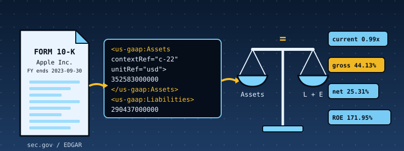

48. SEC EDGAR Filings and Financial Ratios: Reading XBRL Inside a Kernel, and Refusing Filings That Do Not Add Up¶

What you will understand: how the numbers in a company's annual report (a Form 10-K filed with the U.S. Securities and Exchange Commission) are published as machine-readable XBRL, and how a kernel with no operating system under it can read them and compute financial ratios correctly. An XBRL reader (048_xbrl.h/048_xbrl.c) that is strict about structure and tolerant about formatting; a ratio engine (048_ratios.h/048_ratios.c) that picks the right fiscal year by written rules, checks that the balance sheet balances before trusting any number, uses only 64-bit integers, and says "n/a" with a reason instead of inventing a value; six real filings (Apple, Microsoft, NVIDIA, Coca-Cola, Exxon Mobil, JPMorgan Chase) baked into the kernel image; a host-side EDGAR fetcher that follows the SEC's published rules for automated access; and independent verification that recomputes every report from the original SEC documents with a second implementation.
What you need to know first: Chapters 19-23's FAT16 filesystem (each report is written to it and read back); Chapter 47's testing discipline (a differential test against an independent implementation, sanitizer fuzzing, and mutation testing) and its cumulative kernel, which this chapter carries forward. No accounting background is assumed: every ratio is defined below the first time it is used.
Scope: three confirmed choices before writing any code¶
This chapter was requested as "pull SEC EDGAR reports and calculate different financial ratios". Scope was confirmed through one AskUserQuestion round of three questions:
- Data source: the sandbox that builds this book cannot reach sec.gov (see the next section). The user chose "Real filings + recorded fetcher" (the recommended option): real SEC documents as the data, plus a host-side EDGAR fetcher tested against recorded response shapes, over invented filings or a chapter with no fetch code at all.
- Ratio families: asked which to cover, the user left the choice to the author ("choose"). All four on offer were built: liquidity and leverage, profitability and efficiency, valuation and cash flow, and a bank edge case, because a bank is where textbook ratios stop applying and a correct engine must say so.
- Hardening: the user chose "Full discipline" (the recommended option): integer fixed-point arithmetic, a differential test against an independent Python implementation, fuzzing, mutation tests, and checks that the accounting identities hold.
Where the data comes from, said plainly¶
What was tried. From the sandbox, sec.gov, www.sec.gov, data.sec.gov and efts.sec.gov are all unreachable: the network egress policy blocks them. GitHub and PyPI are reachable. So nothing in this chapter was downloaded from EDGAR by this book's author, and the chapter does not pretend otherwise.
What the data is. The six filings are real SEC documents. They are the XBRL instance documents (the *_htm.xml file EDGAR extracts from every inline-XBRL filing) that the open-source edgartools project keeps as test fixtures, github.com/dgunning/edgartools at commit 237e866a80ab3013cf5aa25a2557cf73c4eb61e4, together with each filing's metadata. Every accession number below comes from that metadata, and the kernel prints the EDGAR URL of each filing so you can open the original yourself:
| ticker | company | form | filed | accession number | fiscal year ends |
|---|---|---|---|---|---|
| AAPL | Apple Inc. | 10-K | 2023-11-03 | 0000320193-23-000106 | 2023-09-30 |
| MSFT | Microsoft Corp | 10-K | 2024-07-30 | 0000950170-24-087843 | 2024-06-30 |
| NVDA | NVIDIA Corp | 10-K | 2026-02-25 | 0001045810-26-000021 | 2026-01-25 |
| KO | Coca-Cola Co | 10-K | 2024-02-20 | 0000021344-24-000009 | 2023-12-31 |
| XOM | Exxon Mobil Corp | 10-K | 2023-02-22 | 0000034088-23-000020 | 2022-12-31 |
| JPM | JPMorgan Chase & Co | 10-K | 2024-02-16 | 0000019617-24-000225 | 2023-12-31 |
What was done to them. A full document is large (JPMorgan's is 14.7 MB). edgar_slim.py keeps only the facts the engine reads, plus the <context> and <unit> blocks those facts use, and copies them byte for byte (no re-serialising), so the kernel sees real EDGAR formatting. The six slimmed files total 650 KB and are embedded in the kernel image by one assembler directive (incbin). The independent verifier below does not use the slimmed files: it recomputes from the original full documents, which also checks the slimmer.
What was not established. The fetcher (edgar_fetch.py) has never talked to the real sec.gov. It was tested against a local HTTP server that answers in the shapes the SEC documents for its JSON endpoints, serving one of the real documents. That proves the client's own logic (headers, rate limit, retries, validation). It cannot prove that sec.gov still answers in exactly these shapes today. If you run it with your own contact address and it fails, the shapes are the first place to look.
What a filing looks like: XBRL in one page¶
A 10-K's numbers are published as XBRL: a flat XML document whose children are contexts, units and facts. Here is Apple's own total assets, from the document in the kernel:
<context id="c-22">
<entity>
<identifier scheme="http://www.sec.gov/CIK">0000320193</identifier>
</entity>
<period>
<instant>2023-09-30</instant>
</period>
</context>
<unit id="usd">
<measure>iso4217:USD</measure>
</unit>
<us-gaap:Assets contextRef="c-22" decimals="-6" id="f-172" unitRef="usd">352583000000</us-gaap:Assets>
A fact says "the concept us-gaap:Assets had the value 352,583,000,000". The context says when: here a single day, the balance-sheet date (an instant), while an income-statement figure carries a duration, a start and end date. The unit says what: US dollars. A context may also carry a <segment> with dimensions, which says "this value is for one slice of the company only" (one product line, one region). Those facts must never be mixed up with the whole-company figure, and a large share of the facts in a real filing are dimensional.
The six real files showed several things a textbook description of XBRL leaves out, all handled by the code and all found by running it:
- Formatting varies. Most of Apple's, NVIDIA's and Coca-Cola's facts sit on one line; Microsoft and Exxon put every attribute on its own line, in a different order, with ids like
F_e003865e-55bd-4371-a155-c6d1153f17ed(Apple does the same for a few facts, such as its earnings per share). A reader that finds facts with a regular expression for<tag contextRef=silently finds none of the balance sheet in Microsoft's and Exxon's filings; the author's first quick scan of the six files did exactly that and reported them empty. - Unit ids are the filer's own choice. Apple calls the dollar unit
usdand dollars-per-shareusdPerShare; Microsoft calls themU_USDandU_UnitedStatesOfAmericaDollarsShare. The id means nothing: the engine reads the unit's<measure>(iso4217:USD, or adivideofiso4217:USDby shares). Apple writes the shares measure as bareshares, others asxbrli:shares; both are accepted. - Real filings contain inconsistent duplicates. Apple's own filing states
us-gaap:UnrecognizedTaxBenefitstwice for the same date with different values (19,454,000,000 and 19,500,000,000). XBRL calls this an inconsistent duplicate. The engine's rule applies it only to the concepts it reads, otherwise it would reject Apple's genuine filing over a number it never uses. - Not every company reports every concept. Exxon reports no operating income, JPMorgan has no current assets (banks do not classify them), NVIDIA tags capital spending as
PaymentsToAcquireProductiveAssetsinstead of the usualPaymentsToAcquirePropertyPlantAndEquipment. The engine has an ordered list of fallback concepts for each quantity and prints "n/a" when none exist.
The rules¶
The rules are written down once and implemented twice, independently: in C (the kernel) and in Python (ratios_ref.py). Where the two disagree, one of them is wrong, and the differential tests find out which.
Reading. Only facts in the us-gaap taxonomy namespace (whatever prefix the filing binds to it) and four dei cover-page facts are read. A fact is kept when its unit resolves to US dollars (or dollars per share), its text is a plain number with no more than four decimals, and (for dollar facts) it has no cents. It is ignored when it is xsi:nil. Facts in a context with a <segment> (dimensional contexts) are ignored by every calculation.
The period. dei:DocumentPeriodEndDate in a dimension-free context is the fiscal year end E. The fiscal-year contexts are the dimension-free durations that end on E and last 350 to 380 days inclusive (52- and 53-week years included). The balance-sheet contexts are the dimension-free instants equal to E. The prior balance-sheet date is the latest dimension-free instant 350 to 380 days before E. For a quantity, the first concept of its fallback list that has a value in a matching context wins; contexts are tried in document order.
The checks, before any ratio.
assets = liabilities and equity(current balance-sheet date). A FAIL rejects the filing: no ratios are computed from a balance sheet that does not balance.liabilities + equity = liabilities and equity. Reported as PASS/FAIL but never rejects: redeemable non-controlling interests legitimately sit outside both. Skipped when liabilities were derived.gross profit = revenue - cost of revenuewhen all three are reported. Reported, never rejects.- No conflicting duplicates (the same concept, the same dimension-free context, two different values) among the concepts the engine reads. A FAIL rejects the filing.
The arithmetic. Dollars are 64-bit integers; per-share values are in 1/10,000 dollar. Every ratio is one integer division with one rounding rule: round half away from zero on the exact fraction. Ratios in "times" are stored in hundredths (99 means 0.99x), percentages in basis points (2531 means 25.31%). A product that would exceed 2^62 gives "n/a (overflow)", never a wrong number. A ratio whose denominator is zero or negative gives "n/a (denominator not positive)".
Fallbacks.
| quantity | tried in this order |
|---|---|
| revenue | RevenueFromContractWithCustomerExcludingAssessedTax, Revenues, SalesRevenueNet |
| cost of revenue | CostOfRevenue, CostOfGoodsAndServicesSold |
| interest expense | InterestExpense, InterestExpenseNonoperating |
| short-term investments | MarketableSecuritiesCurrent, ShortTermInvestments (absent counts as 0 in the quick and cash ratios) |
| capital spending | PaymentsToAcquirePropertyPlantAndEquipment, PaymentsToAcquireProductiveAssets |
| gross profit | the reported GrossProfit; if absent, revenue minus cost of revenue |
| liabilities | the reported Liabilities; if absent, assets minus equity including non-controlling interest |
The ratios, in plain words¶
| ratio | formula | what it tells you | careful |
|---|---|---|---|
current_ratio |
current assets / current liabilities | can the company pay what it owes within a year from what it will convert to cash within a year | below 1.0 is not a crisis for a company that collects cash faster than it pays suppliers |
quick_ratio |
(cash + short-term investments + receivables) / current liabilities | the same, without inventory | counts only the investment concepts the engine reads |
cash_ratio |
(cash + short-term investments) / current liabilities | the harshest of the three | |
liabilities_to_equity |
total liabilities / shareholders' equity | how much of the business is financed by creditors rather than owners | meaningless when equity is zero or negative: n/a |
liabilities_to_assets |
total liabilities / total assets | the same as a share of everything owned | |
equity_multiplier |
total assets / shareholders' equity | leverage as a multiplier | |
interest_coverage |
operating income / interest expense | how many times operating profit covers the interest bill | n/a when there is no interest expense |
gross_margin |
gross profit / revenue | what is left after the direct cost of the product | does not exist for companies that report no gross profit |
operating_margin |
operating income / revenue | what is left after running the business | |
net_margin |
net income / revenue | what is left for the owners | |
return_on_assets |
net income / average total assets | profit per dollar of assets | uses the average of this and last year's balance sheet |
return_on_equity |
net income / average shareholders' equity | profit per dollar of the owners' money | shrinks equity-buybacks into huge numbers (see Apple) |
asset_turnover |
revenue / average total assets | how hard the assets work | |
free_cash_flow |
operating cash flow - capital spending | cash left after keeping the business running | companies define it differently |
fcf_margin |
free cash flow / revenue | ||
eps_diluted_reported |
as reported | profit per share, reported by the company | |
price_to_earnings |
price / diluted EPS | what the market pays per dollar of profit | needs a share price, which no filing contains |
Every P/E in this chapter uses an illustrative price of $100.00 for every company. It shows the mechanism and nothing else: Coca-Cola's 40.49x is the arithmetic of $100.00 / $2.47, not a statement about Coca-Cola's stock.
The XBRL reader: 048_xbrl.h and 048_xbrl.c¶
The reader makes one pass over the text with an explicit stack of open element names, and keeps its results in fixed tables: 256 contexts, 512 facts, 16 units. A table that would overflow is an error, not a silent truncation. Two details are specific to a kernel with no libc: there is no memset or memcpy (so structures are filled field by field), and no libgcc (so a 64-bit / or % fails to link with an undefined __udivdi3; xb_udivmod() divides by shift-and-subtract, 64 iterations, and the unit tests compare it with native division on 300,000 random pairs).
/* Chapter 48: a small XBRL instance-document reader. SEC filings carry their numbers as XBRL: every figure is a "fact" element (<us-gaap:Assets contextRef="c-23" unitRef="usd" decimals="-6">
* 352755000000</us-gaap:Assets>) that points at a <context> (WHICH period: a duration such as a fiscal year, or an instant such as a balance-sheet date; and whether it is the whole company
* or a slice -- a <segment> with dimensions) and at a <unit> (which currency, or currency per share). This reader keeps only what the ratio engine reads, in fixed tables: no malloc, no libc,
* no recursion. It is strict about structure (mismatched or unclosed tags are errors, tables that overflow are errors -- never a silent truncation) and tolerant about formatting (attributes in
* any order, split over lines, single or double quotes, comments, processing instructions, CDATA). A document that is not XBRL, or is cut short, yields an error code and no facts. */
#ifndef XBRL_H
#define XBRL_H
#include <stdint.h>
#define XB_MAX_CTX 256
#define XB_MAX_FACT 512
#define XB_MAX_UNIT 16
#define XB_MAX_DEI 16
#define XB_ID_LEN 64
#define XB_TEXT_LEN 64
enum { XB_OK = 0, XB_ERR_XML = -1, XB_ERR_TRUNCATED = -2, XB_ERR_TOO_MANY_CTX = -3, XB_ERR_TOO_MANY_FACT = -4, XB_ERR_TOO_MANY_UNIT = -5, XB_ERR_BAD_DATE = -6, XB_ERR_ID_TOO_LONG = -7, XB_ERR_DEPTH = -8,
XB_ERR_NO_PERIOD = -9, XB_ERR_NOT_XBRL = -10, XB_ERR_DUP_ID = -11 };
/* The us-gaap concepts the ratio engine reads. XB_C_NONE means "not one we read". */
enum {
XB_C_NONE = 0, XB_C_ASSETS, XB_C_ASSETS_CURRENT, XB_C_LIABILITIES, XB_C_LIABILITIES_CURRENT, XB_C_LIAB_AND_EQUITY, XB_C_EQUITY, XB_C_EQUITY_INCL_NCI, XB_C_CASH, XB_C_MKT_SEC_CURRENT,
XB_C_ST_INVEST, XB_C_RECEIVABLES, XB_C_REV_CONTRACT, XB_C_REVENUES, XB_C_SALES_NET, XB_C_COST_OF_REVENUE, XB_C_COGS, XB_C_GROSS_PROFIT, XB_C_OPERATING_INCOME, XB_C_INTEREST_EXPENSE,
XB_C_INTEREST_NONOP, XB_C_NET_INCOME, XB_C_EPS_DILUTED, XB_C_OCF, XB_C_CAPEX_PPE, XB_C_CAPEX_PRODUCTIVE, XB_C_COUNT
};
enum { XB_UNIT_NONE = 0, XB_UNIT_USD = 1, XB_UNIT_USD_PER_SHARE = 2 };
enum { XB_P_NONE = 0, XB_P_DURATION = 1, XB_P_INSTANT = 2 };
enum { XB_DEI_TYPE = 0, XB_DEI_PERIOD_END, XB_DEI_NAME, XB_DEI_CIK };
typedef struct { char id[XB_ID_LEN]; uint8_t dim; /* has a <segment> */ uint8_t kind; int32_t start, end; /* days since 1970-01-01; instant: start == end */ } xb_ctx_t;
typedef struct { char ctx[XB_ID_LEN]; char unit_id[XB_ID_LEN]; int16_t ctx_idx; uint8_t concept, unit; int64_t val; /* dollars, or 1/10000 dollar for per-share */ } xb_fact_t;
typedef struct { char ctx[XB_ID_LEN]; int16_t ctx_idx; uint8_t which; char text[XB_TEXT_LEN]; } xb_dei_t;
typedef struct { char id[XB_ID_LEN]; uint8_t kind; } xb_unit_t;
typedef struct {
uint16_t n_ctx, n_fact, n_unit, n_dei; xb_ctx_t ctx[XB_MAX_CTX]; xb_fact_t fact[XB_MAX_FACT]; xb_unit_t unit[XB_MAX_UNIT]; xb_dei_t dei[XB_MAX_DEI];
uint32_t n_elements, n_skipped_facts, n_orphans; /* diagnostics: elements seen; facts dropped (bad unit, not a plain number, dimension-free requirement not met is NOT counted here); facts naming an unknown context */
} xb_doc_t;
uint64_t xb_udivmod(uint64_t n, uint64_t d, uint64_t *rem); /* freestanding 64-bit division (no libgcc) */
int xb_parse(xb_doc_t *d, const char *text, uint32_t len); /* XB_OK or a negative XB_ERR_* */
const char *xb_strerror(int rc);
int32_t xb_days_from_civil(int y, int m, int dd); /* proleptic Gregorian; days since 1970-01-01 */
int xb_parse_date(const char *s, uint32_t n, int32_t *days_out); /* strict YYYY-MM-DD, valid calendar date; 0 on success */
int xb_parse_scaled(const char *s, uint32_t n, int64_t *out); /* '-12.3400' -> -123400 (scaled by 10^4); at most 4 fraction digits, digits required on both sides of '.'; 0 on success */
const char *xb_dei_text(const xb_doc_t *d, int which); /* first dimension-free value, or 0 */
#endif
/* Chapter 48: the XBRL instance reader (see 048_xbrl.h). Single pass over the text with an explicit stack of open element names; no allocation. Freestanding: no string.h. */
#include "048_xbrl.h"
typedef struct { const char *p; uint32_t n; } sv_t;
static sv_t sv_make(const char *p, uint32_t n) { sv_t s; s.p = p; s.n = n; return s; }
static uint32_t cstr_len(const char *s) { uint32_t n = 0; while (s[n]) { n++; } return n; }
static int sv_is(sv_t a, const char *lit) {
uint32_t n = cstr_len(lit);
if (a.n != n) { return 0; }
for (uint32_t i = 0; i < n; i++) { if (a.p[i] != lit[i]) { return 0; } }
return 1;
}
static int sv_eq(sv_t a, sv_t b) {
if (a.n != b.n) { return 0; }
for (uint32_t i = 0; i < a.n; i++) { if (a.p[i] != b.p[i]) { return 0; } }
return 1;
}
static int is_space(char c) { return c == ' ' || c == '\t' || c == '\n' || c == '\r'; }
static sv_t sv_trim(sv_t s) {
while (s.n && is_space(s.p[0])) { s.p++; s.n--; }
while (s.n && is_space(s.p[s.n - 1])) { s.n--; }
return s;
}
static sv_t sv_local(sv_t name) { /* the part after the last ':' */
for (uint32_t i = name.n; i > 0; i--) { if (name.p[i - 1] == ':') { return sv_make(name.p + i, name.n - i); } }
return name;
}
static sv_t sv_prefix(sv_t name, int *has) { /* the part before the first ':' */
for (uint32_t i = 0; i < name.n; i++) { if (name.p[i] == ':') { *has = 1; return sv_make(name.p, i); } }
*has = 0; return sv_make(name.p, 0);
}
static int sv_copy_id(char *dst, sv_t s) { /* 0 ok, -1 too long */
if (s.n >= XB_ID_LEN) { return -1; }
for (uint32_t i = 0; i < s.n; i++) { dst[i] = s.p[i]; }
dst[s.n] = 0; return 0;
}
/* 64-bit unsigned division by shift-and-subtract: this kernel links without libgcc, so a plain '/' or '%' on a 64-bit value would fail with an undefined __udivdi3 / __umoddi3
* (the same real failure Chapter 7 and the Chapter 47 modules hit). 64 iterations; exact; d must not be 0 (0 returns 0 with rem = n). */
uint64_t xb_udivmod(uint64_t n, uint64_t dv, uint64_t *rem) {
if (dv == 0) { *rem = n; return 0; }
uint64_t q = 0, r = 0;
for (int i = 63; i >= 0; i--) {
r = (r << 1) | ((n >> i) & 1u);
if (r >= dv) { r -= dv; q |= 1ull << i; }
}
*rem = r; return q;
}
static int str_eq(const char *a, const char *b) { uint32_t i = 0; while (a[i] && a[i] == b[i]) { i++; } return a[i] == b[i]; }
const char *xb_strerror(int rc) {
switch (rc) {
case XB_OK: return "ok";
case XB_ERR_XML: return "malformed XML";
case XB_ERR_TRUNCATED: return "document ends inside an element";
case XB_ERR_TOO_MANY_CTX: return "more contexts than the table holds";
case XB_ERR_TOO_MANY_FACT: return "more facts than the table holds";
case XB_ERR_TOO_MANY_UNIT: return "more units than the table holds";
case XB_ERR_BAD_DATE: return "a context has a missing or invalid date";
case XB_ERR_ID_TOO_LONG: return "an identifier is longer than the table allows";
case XB_ERR_DEPTH: return "elements nested too deeply";
case XB_ERR_NO_PERIOD: return "no dei:DocumentPeriodEndDate in a dimension-free context";
case XB_ERR_NOT_XBRL: return "root element is not <xbrl>";
case XB_ERR_DUP_ID: return "two contexts or two units share an id";
}
return "unknown error";
}
int32_t xb_days_from_civil(int y, int m, int dd) { /* Howard Hinnant's algorithm */
y -= m <= 2;
int32_t era = (y >= 0 ? y : y - 399) / 400;
int32_t yoe = y - era * 400;
int32_t doy = (153 * (m + (m > 2 ? -3 : 9)) + 2) / 5 + dd - 1;
int32_t doe = yoe * 365 + yoe / 4 - yoe / 100 + doy;
return era * 146097 + doe - 719468;
}
int xb_parse_date(const char *s, uint32_t n, int32_t *days_out) {
if (n != 10 || s[4] != '-' || s[7] != '-') { return -1; }
int v[3] = {0, 0, 0}; const int from[3] = {0, 5, 8}, len[3] = {4, 2, 2};
for (int k = 0; k < 3; k++) {
for (int i = 0; i < len[k]; i++) {
char c = s[from[k] + i];
if (c < '0' || c > '9') { return -1; }
v[k] = v[k] * 10 + (c - '0');
}
}
int y = v[0], m = v[1], dd = v[2];
if (y < 1 || m < 1 || m > 12 || dd < 1) { return -1; }
int leap = (y % 4 == 0 && y % 100 != 0) || y % 400 == 0;
static const int dim[12] = {31, 28, 31, 30, 31, 30, 31, 31, 30, 31, 30, 31};
int maxd = dim[m - 1] + (m == 2 && leap ? 1 : 0);
if (dd > maxd) { return -1; }
*days_out = xb_days_from_civil(y, m, dd);
return 0;
}
int xb_parse_scaled(const char *s, uint32_t n, int64_t *out) {
sv_t t = sv_trim(sv_make(s, n)); uint32_t i = 0; int neg = 0;
if (t.n && t.p[0] == '-') { neg = 1; i = 1; }
uint64_t whole = 0; uint32_t wd = 0;
while (i < t.n && t.p[i] >= '0' && t.p[i] <= '9') {
if (whole > 900000000000000ull) { return -1; } /* far beyond any filing: reject rather than overflow */
whole = whole * 10 + (uint64_t)(t.p[i] - '0'); i++; wd++;
}
if (wd == 0) { return -1; }
uint32_t frac = 0, fd = 0;
if (i < t.n && t.p[i] == '.') {
i++;
while (i < t.n && t.p[i] >= '0' && t.p[i] <= '9') {
if (fd == 4) { return -1; }
frac = frac * 10 + (uint32_t)(t.p[i] - '0'); i++; fd++;
}
if (fd == 0) { return -1; }
}
if (i != t.n) { return -1; }
while (fd < 4) { frac *= 10; fd++; }
int64_t v = (int64_t)(whole * 10000ull + frac);
*out = neg ? -v : v;
return 0;
}
static const struct { const char *name; uint8_t id; } GAAP[] = {
{"Assets", XB_C_ASSETS}, {"AssetsCurrent", XB_C_ASSETS_CURRENT}, {"Liabilities", XB_C_LIABILITIES}, {"LiabilitiesCurrent", XB_C_LIABILITIES_CURRENT},
{"LiabilitiesAndStockholdersEquity", XB_C_LIAB_AND_EQUITY}, {"StockholdersEquity", XB_C_EQUITY},
{"StockholdersEquityIncludingPortionAttributableToNoncontrollingInterest", XB_C_EQUITY_INCL_NCI}, {"CashAndCashEquivalentsAtCarryingValue", XB_C_CASH},
{"MarketableSecuritiesCurrent", XB_C_MKT_SEC_CURRENT}, {"ShortTermInvestments", XB_C_ST_INVEST}, {"AccountsReceivableNetCurrent", XB_C_RECEIVABLES},
{"RevenueFromContractWithCustomerExcludingAssessedTax", XB_C_REV_CONTRACT}, {"Revenues", XB_C_REVENUES}, {"SalesRevenueNet", XB_C_SALES_NET},
{"CostOfRevenue", XB_C_COST_OF_REVENUE}, {"CostOfGoodsAndServicesSold", XB_C_COGS}, {"GrossProfit", XB_C_GROSS_PROFIT}, {"OperatingIncomeLoss", XB_C_OPERATING_INCOME},
{"InterestExpense", XB_C_INTEREST_EXPENSE}, {"InterestExpenseNonoperating", XB_C_INTEREST_NONOP}, {"NetIncomeLoss", XB_C_NET_INCOME}, {"EarningsPerShareDiluted", XB_C_EPS_DILUTED},
{"NetCashProvidedByUsedInOperatingActivities", XB_C_OCF}, {"PaymentsToAcquirePropertyPlantAndEquipment", XB_C_CAPEX_PPE}, {"PaymentsToAcquireProductiveAssets", XB_C_CAPEX_PRODUCTIVE},
};
static const struct { const char *name; uint8_t id; } DEI[] = {
{"DocumentType", XB_DEI_TYPE}, {"DocumentPeriodEndDate", XB_DEI_PERIOD_END}, {"EntityRegistrantName", XB_DEI_NAME}, {"EntityCentralIndexKey", XB_DEI_CIK},
};
#define N_GAAP ((int)(sizeof(GAAP) / sizeof(GAAP[0])))
#define N_DEI ((int)(sizeof(DEI) / sizeof(DEI[0])))
/* element text -> a plain C string, trimmed, with the five predefined XML entities decoded (cut at XB_TEXT_LEN - 1) */
static void decode_text(char *dst, sv_t s) {
s = sv_trim(s); uint32_t o = 0;
for (uint32_t i = 0; i < s.n && o < XB_TEXT_LEN - 1;) {
if (s.p[i] == '&') {
static const struct { const char *e; char c; } ENT[] = {{"&", '&'}, {"<", '<'}, {">", '>'}, {""", '"'}, {"'", '\''}};
int hit = 0;
for (int k = 0; k < 5; k++) {
uint32_t el = cstr_len(ENT[k].e);
if (i + el <= s.n && sv_is(sv_make(s.p + i, el), ENT[k].e)) { dst[o++] = ENT[k].c; i += el; hit = 1; break; }
}
if (hit) { continue; }
}
dst[o++] = s.p[i++];
}
dst[o] = 0;
}
typedef struct { sv_t name, value; } attr_t;
#define MAX_ATTR 24
#define MAX_DEPTH 64
enum { CAP_NONE = 0, CAP_START, CAP_END, CAP_INSTANT, CAP_MEASURE, CAP_FACT, CAP_DEI };
typedef struct {
sv_t gaap_prefix[4], dei_prefix[4]; int n_gaap, n_dei;
int cur_ctx, cur_unit; uint8_t ctx_has_start, ctx_has_end, ctx_has_inst;
int in_divide, in_num, in_den, direct_n, direct_usd, num_n, num_usd, den_n, den_ok;
} pstate_t;
static int attr_find(const attr_t *a, int n, const char *name, sv_t *out) {
for (int i = 0; i < n; i++) { if (sv_is(a[i].name, name)) { *out = a[i].value; return 1; } }
return 0;
}
int xb_parse(xb_doc_t *d, const char *text, uint32_t len) {
d->n_ctx = 0; d->n_fact = 0; d->n_unit = 0; d->n_dei = 0; d->n_elements = 0; d->n_skipped_facts = 0; d->n_orphans = 0;
pstate_t ps; ps.n_gaap = 0; ps.n_dei = 0; ps.cur_ctx = -1; ps.cur_unit = -1; ps.ctx_has_start = ps.ctx_has_end = ps.ctx_has_inst = 0;
ps.in_divide = ps.in_num = ps.in_den = ps.direct_n = ps.direct_usd = ps.num_n = ps.num_usd = ps.den_n = ps.den_ok = 0;
sv_t stack[MAX_DEPTH]; int depth = 0; int seen_root = 0, root_closed = 0;
int cap = CAP_NONE, cap_depth = 0; uint32_t cap_start = 0; int cap_target = 0; /* cap_target: the fact/dei index being filled */
uint32_t pos = 0;
while (pos < len) {
if (text[pos] != '<') { pos++; continue; }
if (pos + 1 >= len) { return XB_ERR_TRUNCATED; }
char c1 = text[pos + 1];
if (c1 == '?') { /* processing instruction / xml declaration */
uint32_t q = pos + 2; while (q + 1 < len && !(text[q] == '?' && text[q + 1] == '>')) { q++; }
if (q + 1 >= len) { return XB_ERR_TRUNCATED; }
pos = q + 2; continue;
}
if (c1 == '!') {
if (pos + 3 < len && text[pos + 2] == '-' && text[pos + 3] == '-') { /* comment */
uint32_t q = pos + 4; while (q + 2 < len && !(text[q] == '-' && text[q + 1] == '-' && text[q + 2] == '>')) { q++; }
if (q + 2 >= len) { return XB_ERR_TRUNCATED; }
pos = q + 3; continue;
}
if (pos + 8 < len && text[pos + 2] == '[' && text[pos + 3] == 'C') { /* CDATA: skipped (no fact we read lives in one) */
uint32_t q = pos + 9; while (q + 2 < len && !(text[q] == ']' && text[q + 1] == ']' && text[q + 2] == '>')) { q++; }
if (q + 2 >= len) { return XB_ERR_TRUNCATED; }
pos = q + 3; continue;
}
uint32_t q = pos + 2; while (q < len && text[q] != '>') { q++; } /* <!DOCTYPE ...> */
if (q >= len) { return XB_ERR_TRUNCATED; }
pos = q + 1; continue;
}
if (c1 == '/') { /* closing tag */
uint32_t q = pos + 2; while (q < len && text[q] != '>') { q++; }
if (q >= len) { return XB_ERR_TRUNCATED; }
sv_t name = sv_trim(sv_make(text + pos + 2, q - (pos + 2)));
if (depth == 0 || !sv_eq(name, stack[depth - 1])) { return XB_ERR_XML; }
if (cap != CAP_NONE && cap_depth == depth) { /* text of the element being closed: apply it */
sv_t t = sv_make(text + cap_start, pos - cap_start);
if (cap == CAP_START || cap == CAP_END || cap == CAP_INSTANT) {
sv_t tt = sv_trim(t); int32_t day;
if (xb_parse_date(tt.p, tt.n, &day) != 0) { return XB_ERR_BAD_DATE; }
xb_ctx_t *cx = &d->ctx[ps.cur_ctx];
if (cap == CAP_START) { cx->start = day; ps.ctx_has_start = 1; }
else if (cap == CAP_END) { cx->end = day; ps.ctx_has_end = 1; }
else { cx->start = cx->end = day; ps.ctx_has_inst = 1; }
} else if (cap == CAP_MEASURE) {
sv_t tt = sv_trim(t);
if (!ps.in_divide) { ps.direct_n++; ps.direct_usd = sv_is(tt, "iso4217:USD"); }
else if (ps.in_num) { ps.num_n++; ps.num_usd = sv_is(tt, "iso4217:USD"); }
else if (ps.in_den) { ps.den_n++; ps.den_ok = sv_is(tt, "xbrli:shares") || sv_is(tt, "shares"); }
} else if (cap == CAP_FACT) {
sv_t tt = sv_trim(t); int64_t v;
if (xb_parse_scaled(tt.p, tt.n, &v) == 0) { d->fact[cap_target].val = v; }
else { d->fact[cap_target].concept = XB_C_NONE; d->n_skipped_facts++; } /* not a plain number: dropped at the end */
} else if (cap == CAP_DEI) {
decode_text(d->dei[cap_target].text, t);
}
cap = CAP_NONE;
} else if (cap != CAP_NONE && cap_depth > depth) { cap = CAP_NONE; }
sv_t loc = sv_local(name);
if (ps.cur_ctx >= 0 && depth == 2 && sv_is(loc, "context")) {
xb_ctx_t *cx = &d->ctx[ps.cur_ctx];
if (ps.ctx_has_inst && !ps.ctx_has_start && !ps.ctx_has_end) { cx->kind = XB_P_INSTANT; }
else if (ps.ctx_has_start && ps.ctx_has_end && !ps.ctx_has_inst) { cx->kind = XB_P_DURATION; }
else { return XB_ERR_BAD_DATE; }
ps.cur_ctx = -1;
} else if (ps.cur_unit >= 0 && depth == 2 && sv_is(loc, "unit")) {
xb_unit_t *u = &d->unit[ps.cur_unit]; u->kind = XB_UNIT_NONE;
if (ps.direct_n == 1 && ps.direct_usd && !ps.in_divide && ps.num_n == 0 && ps.den_n == 0) { u->kind = XB_UNIT_USD; }
else if (ps.direct_n == 0 && ps.num_n == 1 && ps.num_usd && ps.den_n == 1 && ps.den_ok) { u->kind = XB_UNIT_USD_PER_SHARE; }
ps.cur_unit = -1;
} else if (ps.cur_unit >= 0 && sv_is(loc, "divide")) { ps.in_divide = 0; }
else if (ps.cur_unit >= 0 && sv_is(loc, "unitNumerator")) { ps.in_num = 0; }
else if (ps.cur_unit >= 0 && sv_is(loc, "unitDenominator")) { ps.in_den = 0; }
depth--; if (depth == 0) { root_closed = 1; }
pos = q + 1; continue;
}
/* opening tag */
if (root_closed) { pos++; continue; } /* trailing junk after the root element is ignored */
uint32_t q = pos + 1; while (q < len && !is_space(text[q]) && text[q] != '>' && text[q] != '/') { q++; }
if (q >= len) { return XB_ERR_TRUNCATED; }
sv_t name = sv_make(text + pos + 1, q - (pos + 1));
if (name.n == 0) { return XB_ERR_XML; }
attr_t at[MAX_ATTR]; int na = 0; int self_close = 0;
for (;;) {
while (q < len && is_space(text[q])) { q++; }
if (q >= len) { return XB_ERR_TRUNCATED; }
if (text[q] == '>') { q++; break; }
if (text[q] == '/') { if (q + 1 >= len) { return XB_ERR_TRUNCATED; } if (text[q + 1] != '>') { return XB_ERR_XML; } self_close = 1; q += 2; break; }
uint32_t ns = q; while (q < len && !is_space(text[q]) && text[q] != '=' && text[q] != '>' && text[q] != '/') { q++; }
if (q >= len) { return XB_ERR_TRUNCATED; }
sv_t an = sv_make(text + ns, q - ns);
while (q < len && is_space(text[q])) { q++; }
if (q >= len) { return XB_ERR_TRUNCATED; }
if (an.n == 0 || text[q] != '=') { return XB_ERR_XML; }
q++;
while (q < len && is_space(text[q])) { q++; }
if (q >= len) { return XB_ERR_TRUNCATED; }
char quote = text[q]; if (quote != '"' && quote != '\'') { return XB_ERR_XML; }
q++; uint32_t vs = q; while (q < len && text[q] != quote) { q++; }
if (q >= len) { return XB_ERR_TRUNCATED; }
if (na < MAX_ATTR) { at[na].name = an; at[na].value = sv_make(text + vs, q - vs); na++; }
q++;
}
d->n_elements++;
if (depth >= MAX_DEPTH) { return XB_ERR_DEPTH; }
stack[depth++] = name;
if (cap != CAP_NONE) { cap = CAP_NONE; } /* a child element inside a captured element: the text is not a plain value */
sv_t loc = sv_local(name);
if (depth == 1) {
seen_root = 1;
if (!sv_is(loc, "xbrl")) { return XB_ERR_NOT_XBRL; }
for (int i = 0; i < na; i++) {
if (at[i].name.n > 6 && at[i].name.p[0] == 'x' && at[i].name.p[1] == 'm' && at[i].name.p[2] == 'l' && at[i].name.p[3] == 'n' && at[i].name.p[4] == 's' && at[i].name.p[5] == ':') {
sv_t pre = sv_make(at[i].name.p + 6, at[i].name.n - 6);
if (at[i].value.n >= 24 && sv_is(sv_make(at[i].value.p, 24), "http://fasb.org/us-gaap/") && ps.n_gaap < 4) { ps.gaap_prefix[ps.n_gaap++] = pre; }
if (at[i].value.n >= 24 && sv_is(sv_make(at[i].value.p, 24), "http://xbrl.sec.gov/dei/") && ps.n_dei < 4) { ps.dei_prefix[ps.n_dei++] = pre; }
}
}
} else if (depth == 2 && sv_is(loc, "context")) {
sv_t id; if (!attr_find(at, na, "id", &id)) { return XB_ERR_XML; }
if (d->n_ctx >= XB_MAX_CTX) { return XB_ERR_TOO_MANY_CTX; }
xb_ctx_t *cx = &d->ctx[d->n_ctx]; if (sv_copy_id(cx->id, id) != 0) { return XB_ERR_ID_TOO_LONG; }
for (uint16_t k = 0; k < d->n_ctx; k++) { if (str_eq(d->ctx[k].id, cx->id)) { return XB_ERR_DUP_ID; } } /* ids are unique in XBRL; a second one would silently redirect facts */
cx->dim = 0; cx->kind = XB_P_NONE; cx->start = cx->end = 0; ps.cur_ctx = d->n_ctx++;
ps.ctx_has_start = ps.ctx_has_end = ps.ctx_has_inst = 0;
} else if (depth == 2 && sv_is(loc, "unit")) {
sv_t id; if (!attr_find(at, na, "id", &id)) { return XB_ERR_XML; }
if (d->n_unit >= XB_MAX_UNIT) { return XB_ERR_TOO_MANY_UNIT; }
xb_unit_t *u = &d->unit[d->n_unit]; if (sv_copy_id(u->id, id) != 0) { return XB_ERR_ID_TOO_LONG; }
for (uint16_t k = 0; k < d->n_unit; k++) { if (str_eq(d->unit[k].id, u->id)) { return XB_ERR_DUP_ID; } }
u->kind = XB_UNIT_NONE; ps.cur_unit = d->n_unit++;
ps.in_divide = ps.in_num = ps.in_den = ps.direct_n = ps.direct_usd = ps.num_n = ps.num_usd = ps.den_n = ps.den_ok = 0;
} else if (ps.cur_ctx >= 0 && sv_is(loc, "segment")) { d->ctx[ps.cur_ctx].dim = 1; }
else if (ps.cur_ctx >= 0 && !self_close && (sv_is(loc, "startDate") || sv_is(loc, "endDate") || sv_is(loc, "instant"))) {
cap = sv_is(loc, "startDate") ? CAP_START : sv_is(loc, "endDate") ? CAP_END : CAP_INSTANT; cap_depth = depth; cap_start = q;
} else if (ps.cur_ctx >= 0 && self_close && (sv_is(loc, "startDate") || sv_is(loc, "endDate") || sv_is(loc, "instant"))) { return XB_ERR_BAD_DATE; }
else if (ps.cur_unit >= 0 && sv_is(loc, "divide")) { ps.in_divide = 1; }
else if (ps.cur_unit >= 0 && sv_is(loc, "unitNumerator")) { ps.in_num = 1; ps.in_den = 0; }
else if (ps.cur_unit >= 0 && sv_is(loc, "unitDenominator")) { ps.in_den = 1; ps.in_num = 0; }
else if (ps.cur_unit >= 0 && sv_is(loc, "measure") && !self_close) { cap = CAP_MEASURE; cap_depth = depth; cap_start = q; }
else if (depth == 2) {
sv_t cref, uref, nil; int has_ctx = attr_find(at, na, "contextRef", &cref);
if (has_ctx) {
int has_pre; sv_t pre = sv_prefix(name, &has_pre); int is_gaap = 0, is_dei = 0;
if (has_pre) {
for (int i = 0; i < ps.n_gaap; i++) { if (sv_eq(pre, ps.gaap_prefix[i])) { is_gaap = 1; } }
for (int i = 0; i < ps.n_dei; i++) { if (sv_eq(pre, ps.dei_prefix[i])) { is_dei = 1; } }
}
int is_nil = attr_find(at, na, "xsi:nil", &nil) && sv_is(nil, "true");
if (is_gaap) {
int cid = XB_C_NONE;
for (int i = 0; i < N_GAAP; i++) { if (sv_is(loc, GAAP[i].name)) { cid = GAAP[i].id; break; } }
if (cid != XB_C_NONE && !is_nil) {
if (d->n_fact >= XB_MAX_FACT) { return XB_ERR_TOO_MANY_FACT; }
xb_fact_t *f = &d->fact[d->n_fact];
if (sv_copy_id(f->ctx, cref) != 0) { return XB_ERR_ID_TOO_LONG; }
f->unit_id[0] = 0;
if (attr_find(at, na, "unitRef", &uref)) { if (sv_copy_id(f->unit_id, uref) != 0) { return XB_ERR_ID_TOO_LONG; } }
f->concept = (uint8_t)cid; f->unit = XB_UNIT_NONE; f->val = 0; f->ctx_idx = -1;
if (!self_close) { cap = CAP_FACT; cap_depth = depth; cap_start = q; cap_target = d->n_fact; }
else { f->concept = XB_C_NONE; d->n_skipped_facts++; }
d->n_fact++;
}
} else if (is_dei && !is_nil && !self_close && d->n_dei < XB_MAX_DEI) {
int did = -1; for (int i = 0; i < N_DEI; i++) { if (sv_is(loc, DEI[i].name)) { did = DEI[i].id; break; } }
if (did >= 0) {
xb_dei_t *e = &d->dei[d->n_dei]; if (sv_copy_id(e->ctx, cref) != 0) { return XB_ERR_ID_TOO_LONG; }
e->which = (uint8_t)did; e->text[0] = 0; e->ctx_idx = -1;
cap = CAP_DEI; cap_depth = depth; cap_start = q; cap_target = d->n_dei; d->n_dei++;
}
}
}
}
if (self_close) {
if (depth == 2 && ps.cur_ctx >= 0 && sv_is(loc, "context")) { return XB_ERR_BAD_DATE; } /* an empty <context/> has no period */
if (depth == 2 && ps.cur_unit >= 0 && sv_is(loc, "unit")) { d->unit[ps.cur_unit].kind = XB_UNIT_NONE; ps.cur_unit = -1; }
depth--; if (depth == 0) { root_closed = 1; } if (cap != CAP_NONE && cap_depth > depth) { cap = CAP_NONE; } }
pos = q;
}
if (!seen_root) { return XB_ERR_NOT_XBRL; }
if (depth != 0) { return XB_ERR_TRUNCATED; }
/* resolve references (contexts and units may legally come after the facts that use them) and drop facts we cannot use */
uint16_t out = 0;
for (uint16_t i = 0; i < d->n_fact; i++) {
xb_fact_t *f = &d->fact[i];
if (f->concept == XB_C_NONE) { continue; }
int ci = -1; for (uint16_t k = 0; k < d->n_ctx; k++) { if (str_eq(d->ctx[k].id, f->ctx)) { ci = k; break; } }
if (ci < 0) { d->n_orphans++; continue; }
int uk = XB_UNIT_NONE; for (uint16_t k = 0; k < d->n_unit; k++) { if (str_eq(d->unit[k].id, f->unit_id)) { uk = d->unit[k].kind; break; } }
int64_t v = f->val;
if (uk == XB_UNIT_USD) {
uint64_t mag = v < 0 ? (uint64_t)(-v) : (uint64_t)v, rem; uint64_t q = xb_udivmod(mag, 10000u, &rem);
if (rem != 0) { d->n_skipped_facts++; continue; }
v = v < 0 ? -(int64_t)q : (int64_t)q;
}
else if (uk != XB_UNIT_USD_PER_SHARE) { d->n_skipped_facts++; continue; }
xb_fact_t *o = &d->fact[out++];
if (o != f) { /* compact in place, field by field: a struct assignment may compile to a memcpy call, and this kernel has no libc */
for (int b = 0; b < XB_ID_LEN; b++) { o->ctx[b] = f->ctx[b]; o->unit_id[b] = f->unit_id[b]; }
o->concept = f->concept;
}
o->ctx_idx = (int16_t)ci; o->unit = (uint8_t)uk; o->val = v;
}
d->n_fact = out;
for (uint16_t i = 0; i < d->n_dei; i++) {
d->dei[i].ctx_idx = -1;
for (uint16_t k = 0; k < d->n_ctx; k++) { if (str_eq(d->ctx[k].id, d->dei[i].ctx)) { d->dei[i].ctx_idx = (int16_t)k; break; } }
}
return XB_OK;
}
const char *xb_dei_text(const xb_doc_t *d, int which) {
for (uint16_t i = 0; i < d->n_dei; i++) {
if (d->dei[i].which == which && d->dei[i].ctx_idx >= 0 && !d->ctx[d->dei[i].ctx_idx].dim) { return d->dei[i].text; }
}
return 0;
}
The ratio engine: 048_ratios.h and 048_ratios.c¶
/* Chapter 48: the financial-ratio engine. Input: a parsed XBRL filing (048_xbrl.h). Output: the quantities below, each either a value or "NA" with the reason, plus the accounting-identity
* checks that decide whether the filing is trusted at all. All arithmetic is on 64-bit integers (whole dollars; per-share values in 1/10000 dollar) with ONE rounding rule -- round half away
* from zero on the exact fraction -- so the result is reproducible to the last digit and an independent implementation (ratios_ref.py) can match it exactly. No floating point: this kernel
* does not enable the FPU, and a ratio of money should not be a float anyway. Units of the results: "x" = hundredths (current_ratio 99 means 0.99x), "bp" = basis points (2531 = 25.31%),
* "usd" = whole dollars, "usd4" = 1/10000 dollar. The rules (which context, which concept fallbacks, what is "n/a") are written out in the chapter page, 'The rules'. */
#ifndef RATIOS_H
#define RATIOS_H
#include <stdint.h>
#include "048_xbrl.h"
enum { RT_SKIP = 0, RT_PASS = 1, RT_FAIL = 2 };
enum { RT_CHK_BALANCE = 0, RT_CHK_L_PLUS_E, RT_CHK_GROSS, RT_CHK_DUPES, RT_N_CHECKS };
enum { RT_U_X = 0, RT_U_BP, RT_U_USD, RT_U_USD4 };
#define RT_MAX_LINES 20
typedef struct { const char *name; uint8_t na; uint8_t unit; int64_t value; const char *reason; } rt_line_t;
typedef struct {
uint8_t check[RT_N_CHECKS]; uint8_t accepted; uint8_t n_lines; rt_line_t line[RT_MAX_LINES];
int32_t period_end_day; uint16_t n_dur, n_cur, n_pri; /* how many dimension-free contexts matched the fiscal year, the balance-sheet date, the prior balance-sheet date */
} rt_report_t;
int rt_analyse(const xb_doc_t *d, int64_t price_cents, rt_report_t *r); /* price_cents <= 0: no price (P/E is NA). Returns XB_OK or XB_ERR_NO_PERIOD / XB_ERR_BAD_DATE. */
int rt_canonical(const rt_report_t *r, char *buf, uint32_t cap); /* the exact text ratios_ref.py prints; returns its length (or -1 if cap is too small) */
int rt_rdiv(int64_t n, int64_t scale, int64_t d, int64_t *out); /* round-half-away-from-zero of n*scale/d for d > 0; -1 on overflow (|n|*scale or d above 2^62) */
const char *rt_check_name(int i);
const char *rt_unit_name(int u);
#endif
/* Chapter 48: the ratio engine (see 048_ratios.h and the page's 'The rules'). */
#include "048_ratios.h"
static const uint8_t REV[] = {XB_C_REV_CONTRACT, XB_C_REVENUES, XB_C_SALES_NET, 0};
static const uint8_t COGS[] = {XB_C_COST_OF_REVENUE, XB_C_COGS, 0};
static const uint8_t INTEREST[] = {XB_C_INTEREST_EXPENSE, XB_C_INTEREST_NONOP, 0};
static const uint8_t STI[] = {XB_C_MKT_SEC_CURRENT, XB_C_ST_INVEST, 0};
static const uint8_t CAPEX[] = {XB_C_CAPEX_PPE, XB_C_CAPEX_PRODUCTIVE, 0};
static const uint8_t C_ASSETS[] = {XB_C_ASSETS, 0}, C_LSE[] = {XB_C_LIAB_AND_EQUITY, 0}, C_EQ[] = {XB_C_EQUITY, 0}, C_EQN[] = {XB_C_EQUITY_INCL_NCI, 0}, C_LIAB[] = {XB_C_LIABILITIES, 0};
static const uint8_t C_CA[] = {XB_C_ASSETS_CURRENT, 0}, C_CL[] = {XB_C_LIABILITIES_CURRENT, 0}, C_CASH[] = {XB_C_CASH, 0}, C_AR[] = {XB_C_RECEIVABLES, 0};
static const uint8_t C_GP[] = {XB_C_GROSS_PROFIT, 0}, C_OI[] = {XB_C_OPERATING_INCOME, 0}, C_NI[] = {XB_C_NET_INCOME, 0}, C_OCF[] = {XB_C_OCF, 0}, C_EPS[] = {XB_C_EPS_DILUTED, 0};
typedef struct { uint16_t idx[XB_MAX_CTX]; uint16_t n; } ctxset_t;
typedef struct { int64_t v; int ok; } opt_t; /* an optional integer: ok == 0 means "not available" */
typedef struct { const xb_doc_t *d; uint8_t conflict[XB_C_COUNT]; ctxset_t dur, cur, pri; } env_t;
static int64_t iabs(int64_t v) { return v < 0 ? -v : v; }
int rt_rdiv(int64_t n, int64_t scale, int64_t dv, int64_t *out) {
uint64_t mag = (uint64_t)iabs(n), lim = (1ull << 62), rem, q;
if (scale <= 0 || dv <= 0 || (uint64_t)dv > lim) { return -1; }
q = xb_udivmod(lim, (uint64_t)scale, &rem);
if (mag > q) { return -1; }
uint64_t num = 2 * mag * (uint64_t)scale + (uint64_t)dv;
q = xb_udivmod(num, 2 * (uint64_t)dv, &rem);
*out = n < 0 ? -(int64_t)q : (int64_t)q;
return 0;
}
static opt_t lookup(const env_t *e, const uint8_t *chain, const ctxset_t *set) {
opt_t none; none.v = 0; none.ok = 0;
for (int k = 0; chain[k]; k++) {
uint8_t concept = chain[k];
if (e->conflict[concept]) { return none; } /* a conflicting concept ends the chain: no silent fall through to a different concept */
for (uint16_t s = 0; s < set->n; s++) {
for (uint16_t i = 0; i < e->d->n_fact; i++) {
if (e->d->fact[i].concept == concept && e->d->fact[i].ctx_idx == (int16_t)set->idx[s]) { opt_t r; r.v = e->d->fact[i].val; r.ok = 1; return r; }
}
}
}
return none;
}
static const char *CHECK_NAMES[RT_N_CHECKS] = {"check_assets_eq_liab_plus_equity", "check_liabilities_plus_equity", "check_gross_profit", "check_conflicting_duplicates"};
const char *rt_check_name(int i) { return CHECK_NAMES[i]; }
const char *rt_unit_name(int u) { static const char *U[] = {"x", "bp", "usd", "usd4"}; return U[u]; }
static void emit_val(rt_report_t *r, const char *name, int64_t v, int unit) {
rt_line_t *l = &r->line[r->n_lines++]; l->name = name; l->na = 0; l->unit = (uint8_t)unit; l->value = v; l->reason = 0;
}
static void emit_na(rt_report_t *r, const char *name, const char *why) {
rt_line_t *l = &r->line[r->n_lines++]; l->name = name; l->na = 1; l->unit = 0; l->value = 0; l->reason = why;
}
/* n/d scaled: unit RT_U_X uses scale 100, RT_U_BP scale 10000. */
static void ratio(rt_report_t *r, const char *name, opt_t n, opt_t dn, int64_t scale, int unit) {
int64_t q;
if (!n.ok || !dn.ok) { emit_na(r, name, "missing input"); return; }
if (dn.v <= 0) { emit_na(r, name, "denominator not positive"); return; }
if (rt_rdiv(n.v, scale, dn.v, &q) != 0) { emit_na(r, name, "overflow"); return; }
emit_val(r, name, q, unit);
}
/* n over the AVERAGE of two balances: n / ((a1 + a0) / 2) = 2n / (a1 + a0) */
static void ratio_avg(rt_report_t *r, const char *name, opt_t n, opt_t a1, opt_t a0, int64_t scale, int unit) {
int64_t q;
if (!n.ok || !a1.ok || !a0.ok) { emit_na(r, name, "missing input"); return; }
if (a1.v + a0.v <= 0) { emit_na(r, name, "denominator not positive"); return; }
if (rt_rdiv(n.v, 2 * scale, a1.v + a0.v, &q) != 0) { emit_na(r, name, "overflow"); return; }
emit_val(r, name, q, unit);
}
static opt_t mk(int64_t v) { opt_t o; o.v = v; o.ok = 1; return o; }
static opt_t no(void) { opt_t o; o.v = 0; o.ok = 0; return o; }
static opt_t sub2(opt_t a, opt_t b) { return (a.ok && b.ok) ? mk(a.v - b.v) : no(); }
int rt_analyse(const xb_doc_t *d, int64_t price_cents, rt_report_t *r) {
static env_t e; /* ~4 KB of index sets: static, not on the kernel's small stack */
e.d = d; e.dur.n = e.cur.n = e.pri.n = 0;
for (int c = 0; c < XB_C_COUNT; c++) { e.conflict[c] = 0; }
r->n_lines = 0; r->accepted = 0; for (int i = 0; i < RT_N_CHECKS; i++) { r->check[i] = RT_SKIP; }
/* the period end: the first dei:DocumentPeriodEndDate in a dimension-free context */
const char *pe = xb_dei_text(d, XB_DEI_PERIOD_END); int32_t end;
if (!pe) { return XB_ERR_NO_PERIOD; }
uint32_t pl = 0; while (pe[pl]) { pl++; }
if (xb_parse_date(pe, pl, &end) != 0) { return XB_ERR_BAD_DATE; }
r->period_end_day = end;
int32_t best = 0; int have_best = 0;
for (uint16_t i = 0; i < d->n_ctx; i++) {
const xb_ctx_t *c = &d->ctx[i]; if (c->dim) { continue; }
if (c->kind == XB_P_INSTANT && end - c->start >= 350 && end - c->start <= 380 && (!have_best || c->start > best)) { best = c->start; have_best = 1; }
}
for (uint16_t i = 0; i < d->n_ctx; i++) {
const xb_ctx_t *c = &d->ctx[i]; if (c->dim) { continue; }
if (c->kind == XB_P_DURATION && c->end == end && c->end - c->start >= 350 && c->end - c->start <= 380) { e.dur.idx[e.dur.n++] = i; }
if (c->kind == XB_P_INSTANT && c->start == end) { e.cur.idx[e.cur.n++] = i; }
if (c->kind == XB_P_INSTANT && have_best && c->start == best) { e.pri.idx[e.pri.n++] = i; }
}
r->n_dur = e.dur.n; r->n_cur = e.cur.n; r->n_pri = e.pri.n;
/* conflicting duplicates: the same concept in the same dimension-free context with two different values (the XBRL "inconsistent duplicate") */
for (uint16_t i = 0; i < d->n_fact; i++) {
const xb_fact_t *a = &d->fact[i]; if (d->ctx[a->ctx_idx].dim) { continue; }
for (uint16_t j = (uint16_t)(i + 1); j < d->n_fact; j++) {
const xb_fact_t *b = &d->fact[j];
if (b->concept == a->concept && b->ctx_idx == a->ctx_idx && b->val != a->val) { e.conflict[a->concept] = 1; }
}
}
int any_conflict = 0; for (int c = 0; c < XB_C_COUNT; c++) { if (e.conflict[c]) { any_conflict = 1; } }
#define D(chain) lookup(&e, chain, &e.dur)
#define I(chain) lookup(&e, chain, &e.cur)
#define P(chain) lookup(&e, chain, &e.pri)
opt_t A = I(C_ASSETS), A0 = P(C_ASSETS), LSE = I(C_LSE), eq = I(C_EQ), eq0 = P(C_EQ), eqtot = I(C_EQN);
if (!eqtot.ok) { eqtot = eq; }
opt_t L = I(C_LIAB); int L_derived = 0;
if (!L.ok && A.ok && eqtot.ok) { L = mk(A.v - eqtot.v); L_derived = 1; }
opt_t CA = I(C_CA), CL = I(C_CL), cash = I(C_CASH), ar = I(C_AR), sti = I(STI);
opt_t rev = D(REV), gp = D(C_GP), cg = D(COGS);
if (!gp.ok && rev.ok && cg.ok) { gp = mk(rev.v - cg.v); }
opt_t oi = D(C_OI), ni = D(C_NI), intr = D(INTEREST), ocf = D(C_OCF), capex = D(CAPEX), eps = D(C_EPS);
/* integrity checks */
r->check[RT_CHK_BALANCE] = (A.ok && LSE.ok) ? (A.v == LSE.v ? RT_PASS : RT_FAIL) : RT_SKIP;
r->check[RT_CHK_L_PLUS_E] = (L.ok && !L_derived && eqtot.ok && LSE.ok) ? (L.v + eqtot.v == LSE.v ? RT_PASS : RT_FAIL) : RT_SKIP;
opt_t g_rep = D(C_GP);
r->check[RT_CHK_GROSS] = (g_rep.ok && rev.ok && cg.ok) ? (g_rep.v == rev.v - cg.v ? RT_PASS : RT_FAIL) : RT_SKIP;
r->check[RT_CHK_DUPES] = any_conflict ? RT_FAIL : RT_PASS;
if (r->check[RT_CHK_BALANCE] == RT_FAIL || any_conflict) { return XB_OK; } /* REJECTED: no ratios from a filing that does not balance or contradicts itself */
r->accepted = 1;
ratio(r, "current_ratio", CA, CL, 100, RT_U_X);
opt_t quick = (cash.ok && ar.ok) ? mk(cash.v + (sti.ok ? sti.v : 0) + ar.v) : no(); ratio(r, "quick_ratio", quick, CL, 100, RT_U_X);
opt_t cashr = cash.ok ? mk(cash.v + (sti.ok ? sti.v : 0)) : no(); ratio(r, "cash_ratio", cashr, CL, 100, RT_U_X);
ratio(r, "liabilities_to_equity", L, eq, 100, RT_U_X); ratio(r, "liabilities_to_assets", L, A, 10000, RT_U_BP); ratio(r, "equity_multiplier", A, eq, 100, RT_U_X);
ratio(r, "interest_coverage", oi, intr, 100, RT_U_X);
ratio(r, "gross_margin", gp, rev, 10000, RT_U_BP); ratio(r, "operating_margin", oi, rev, 10000, RT_U_BP); ratio(r, "net_margin", ni, rev, 10000, RT_U_BP);
ratio_avg(r, "return_on_assets", ni, A, A0, 10000, RT_U_BP); ratio_avg(r, "return_on_equity", ni, eq, eq0, 10000, RT_U_BP); ratio_avg(r, "asset_turnover", rev, A, A0, 100, RT_U_X);
opt_t fcf = sub2(ocf, capex);
if (fcf.ok) { emit_val(r, "free_cash_flow", fcf.v, RT_U_USD); } else { emit_na(r, "free_cash_flow", "missing input"); }
ratio(r, "fcf_margin", fcf, rev, 10000, RT_U_BP);
if (eps.ok) { emit_val(r, "eps_diluted_reported", eps.v, RT_U_USD4); } else { emit_na(r, "eps_diluted_reported", "not reported as us-gaap:EarningsPerShareDiluted"); }
if (price_cents <= 0 || !eps.ok) { emit_na(r, "price_to_earnings", "no price or no EPS"); }
else if (eps.v <= 0) { emit_na(r, "price_to_earnings", "EPS not positive"); }
else { int64_t q; if (rt_rdiv(price_cents, 10000, eps.v, &q) != 0) { emit_na(r, "price_to_earnings", "overflow"); } else { emit_val(r, "price_to_earnings", q, RT_U_X); } }
#undef D
#undef I
#undef P
return XB_OK;
}
static int put_str(char *buf, uint32_t cap, uint32_t *o, const char *s) {
while (*s) { if (*o + 1 >= cap) { return -1; } buf[(*o)++] = *s++; }
return 0;
}
static int put_i64(char *buf, uint32_t cap, uint32_t *o, int64_t v) {
char t[24]; int n = 0; uint64_t mag = (uint64_t)iabs(v), rem;
if (mag == 0) { t[n++] = '0'; }
while (mag) { mag = xb_udivmod(mag, 10, &rem); t[n++] = (char)('0' + (int)rem); }
if (v < 0 && put_str(buf, cap, o, "-") != 0) { return -1; }
while (n) { char one[2]; one[0] = t[--n]; one[1] = 0; if (put_str(buf, cap, o, one) != 0) { return -1; } }
return 0;
}
int rt_canonical(const rt_report_t *r, char *buf, uint32_t cap) {
uint32_t o = 0; static const char *RES[] = {"SKIP", "PASS", "FAIL"};
for (int i = 0; i < RT_N_CHECKS; i++) {
if (put_str(buf, cap, &o, CHECK_NAMES[i]) || put_str(buf, cap, &o, " ") || put_str(buf, cap, &o, RES[r->check[i]]) || put_str(buf, cap, &o, "\n")) { return -1; }
}
if (put_str(buf, cap, &o, r->accepted ? "verdict ACCEPTED\n" : "verdict REJECTED\n")) { return -1; }
for (int i = 0; i < r->n_lines; i++) {
const rt_line_t *l = &r->line[i];
if (put_str(buf, cap, &o, l->name) || put_str(buf, cap, &o, " ")) { return -1; }
if (l->na) { if (put_str(buf, cap, &o, "NA ") || put_str(buf, cap, &o, l->reason)) { return -1; } }
else { if (put_i64(buf, cap, &o, l->value) || put_str(buf, cap, &o, " ") || put_str(buf, cap, &o, rt_unit_name(l->unit))) { return -1; } }
if (put_str(buf, cap, &o, "\n")) { return -1; }
}
buf[o] = 0; return (int)o;
}
The filings and the printout: 048_filings_data.asm, 048_filings.h and 048_filings.c¶
NASM's incbin copies each file's bytes into .rodata at assembly time: no generated C source, no byte-array listing of 650 KB.
; Chapter 48: six real SEC filings baked into the kernel image. Each file is the slimmed XBRL instance document made by edgar_slim.py (byte-for-byte copies of the filer's own contexts,
; units and facts; see the page). NASM's incbin copies the file's bytes into .rodata at assembly time -- no generated C source, no byte-array listing. The path is relative to the directory
; build.sh runs in (the chapter's code directory).
BITS 32
section .rodata
%macro FILING 2
global filing_%1_start
global filing_%1_end
filing_%1_start: incbin %2
filing_%1_end:
%endmacro
FILING aapl, "data/aapl.xml"
FILING ko, "data/ko.xml"
FILING nvda, "data/nvda.xml"
FILING msft, "data/msft.xml"
FILING xom, "data/xom.xml"
FILING jpm, "data/jpm.xml"
/* Chapter 48: the six embedded filings and the helpers the demo uses to print them. */
#ifndef FILINGS_H
#define FILINGS_H
#include <stdint.h>
#include "048_ratios.h"
typedef struct { const char *ticker, *company, *form, *filed, *accession, *url; const char *start, *end; } filing_t;
#define N_FILINGS 6
extern const filing_t g_filings[N_FILINGS];
/* "12.34%" / "1.50x" / "$99,584,000,000" / "$6.1300" for one value line; returns the length written (buf must hold 40 bytes) */
int edgar_format(const rt_line_t *l, char *buf);
/* the date a day-number stands for, "YYYY-MM-DD" (11 bytes) */
void edgar_date(int32_t days, char *buf);
/* first occurrence of needle in hay[0..n), or -1 */
int32_t edgar_find(const char *hay, uint32_t n, const char *needle);
#endif
/* Chapter 48: the filing table and formatting helpers. The accession numbers and URLs are the filings' own, exactly as the EDGAR filing metadata in the test fixtures records them. */
#include "048_filings.h"
extern const char filing_aapl_start[], filing_aapl_end[], filing_ko_start[], filing_ko_end[], filing_nvda_start[], filing_nvda_end[];
extern const char filing_msft_start[], filing_msft_end[], filing_xom_start[], filing_xom_end[], filing_jpm_start[], filing_jpm_end[];
#define U "https://www.sec.gov/Archives/edgar/data/"
const filing_t g_filings[N_FILINGS] = {
{"AAPL", "Apple Inc.", "10-K", "2023-11-03", "0000320193-23-000106", U "320193/0000320193-23-000106-index.html", filing_aapl_start, filing_aapl_end},
{"KO", "COCA COLA CO", "10-K", "2024-02-20", "0000021344-24-000009", U "21344/0000021344-24-000009-index.html", filing_ko_start, filing_ko_end},
{"NVDA", "NVIDIA CORP", "10-K", "2026-02-25", "0001045810-26-000021", U "1045810/000104581026000021/0001045810-26-000021-index.html", filing_nvda_start, filing_nvda_end},
{"MSFT", "MICROSOFT CORP", "10-K", "2024-07-30", "0000950170-24-087843", U "789019/0000950170-24-087843-index.html", filing_msft_start, filing_msft_end},
{"XOM", "EXXON MOBIL CORP", "10-K", "2023-02-22", "0000034088-23-000020", U "34088/0000034088-23-000020-index.html", filing_xom_start, filing_xom_end},
{"JPM", "JPMORGAN CHASE & CO", "10-K", "2024-02-16", "0000019617-24-000225", U "19617/0000019617-24-000225-index.html", filing_jpm_start, filing_jpm_end},
};
static int put_u(char *b, int o, uint64_t v, int min_digits) { /* decimal, at least min_digits digits (zero padded) */
char t[24]; int n = 0; uint64_t r;
while (v || n < min_digits) { v = xb_udivmod(v, 10, &r); t[n++] = (char)('0' + (int)r); }
while (n) { b[o++] = t[--n]; }
return o;
}
static int put_usd(char *b, int o, uint64_t v) { /* 99584000000 -> 99,584,000,000 */
char t[40]; int n = 0, grp = 0; uint64_t r;
if (v == 0) { t[n++] = '0'; }
while (v) { if (grp == 3) { t[n++] = ','; grp = 0; } v = xb_udivmod(v, 10, &r); t[n++] = (char)('0' + (int)r); grp++; }
while (n) { b[o++] = t[--n]; }
return o;
}
int edgar_format(const rt_line_t *l, char *buf) {
int o = 0; int64_t v = l->value; int neg = v < 0; uint64_t mag = neg ? (uint64_t)(-v) : (uint64_t)v, r, q;
if (neg) { buf[o++] = '-'; }
switch (l->unit) {
case RT_U_BP: q = xb_udivmod(mag, 100, &r); o = put_u(buf, o, q, 1); buf[o++] = '.'; o = put_u(buf, o, r, 2); buf[o++] = '%'; break;
case RT_U_X: q = xb_udivmod(mag, 100, &r); o = put_u(buf, o, q, 1); buf[o++] = '.'; o = put_u(buf, o, r, 2); buf[o++] = 'x'; break;
case RT_U_USD: buf[o++] = '$'; o = put_usd(buf, o, mag); break;
default: q = xb_udivmod(mag, 10000, &r); buf[o++] = '$'; o = put_u(buf, o, q, 1); buf[o++] = '.'; o = put_u(buf, o, r, 4); break;
}
buf[o] = 0; return o;
}
void edgar_date(int32_t days, char *buf) { /* inverse of xb_days_from_civil (Hinnant) */
int32_t z = days + 719468, era = (z >= 0 ? z : z - 146096) / 146097, doe = z - era * 146097;
int32_t yoe = (doe - doe / 1460 + doe / 36524 - doe / 146096) / 365, y = yoe + era * 400, doy = doe - (365 * yoe + yoe / 4 - yoe / 100), mp = (5 * doy + 2) / 153;
int32_t d = doy - (153 * mp + 2) / 5 + 1, m = mp + (mp < 10 ? 3 : -9); y += (m <= 2);
if (y < 1 || y > 9999) { for (int i = 0; i < 10; i++) { buf[i] = (i == 4 || i == 7) ? '-' : '?'; } buf[10] = 0; return; } /* the output buffer is 11 bytes: never write a 5-digit or negative year */
int o = put_u(buf, 0, (uint64_t)y, 4); buf[o++] = '-'; o = put_u(buf, o, (uint64_t)m, 2); buf[o++] = '-'; o = put_u(buf, o, (uint64_t)d, 2); buf[o] = 0;
}
int32_t edgar_find(const char *hay, uint32_t n, const char *needle) {
uint32_t m = 0; while (needle[m]) { m++; }
for (uint32_t i = 0; i + m <= n; i++) { uint32_t k = 0; while (k < m && hay[i + k] == needle[k]) { k++; } if (k == m) { return (int32_t)i; } }
return -1;
}
The host-side half: edgar_slim.py and edgar_fetch.py¶
The kernel has no TLS (HTTPS needs certificate validation and elliptic-curve cryptography this book has not built), so the download runs on the host and hands the kernel a slimmed file. The SEC's fair-access rules are built into the fetcher, not bolted on: a descriptive User-Agent with a contact address on every request (required, no default, because requests without one are blocked), at most 10 requests per second (a limiter with an injectable clock so a test can prove it without waiting), 429 and 5xx answers retried with exponential backoff and at most four attempts (never an endless loop, never a silently empty result), and every download validated before use.
#!/usr/bin/env python3
"""Chapter 48: reduce a real SEC XBRL instance document (the *_htm.xml file EDGAR extracts from every inline-XBRL 10-K) to the facts the ratio engine needs.
It does not re-serialise anything: it copies, byte for byte, the root start tag, the <context> and <unit> blocks the facts use, and the fact elements it keeps -- so the kernel parser sees real EDGAR formatting
(attributes in any order, split over lines, elements on several lines, dimensional contexts). A fact is kept when its concept is in KEEP (every fact of that concept, dimensional or not).
Usage: edgar_slim.py FULL.xml OUT.xml"""
import re, sys
KEEP = """Assets AssetsCurrent Liabilities LiabilitiesCurrent LiabilitiesAndStockholdersEquity StockholdersEquity StockholdersEquityIncludingPortionAttributableToNoncontrollingInterest
CashAndCashEquivalentsAtCarryingValue MarketableSecuritiesCurrent ShortTermInvestments AccountsReceivableNetCurrent
Revenues RevenueFromContractWithCustomerExcludingAssessedTax SalesRevenueNet CostOfRevenue CostOfGoodsAndServicesSold GrossProfit OperatingIncomeLoss
InterestExpense InterestExpenseNonoperating NetIncomeLoss EarningsPerShareDiluted NetCashProvidedByUsedInOperatingActivities PaymentsToAcquirePropertyPlantAndEquipment PaymentsToAcquireProductiveAssets""".split()
DEI = "DocumentType DocumentPeriodEndDate EntityRegistrantName EntityCentralIndexKey".split()
def slim(text):
root = re.search(r"<xbrl\b[^>]*>", text, re.S).group(0)
names = "|".join(["us-gaap:" + k for k in KEEP] + ["dei:" + k for k in DEI])
fact = re.compile(r"<(%s)\b[^>]*?>.*?</\1>|<(?:%s)\b[^>]*?/>" % (names, names), re.S)
facts = [m.group(0) for m in fact.finditer(text)]
used = set(re.findall(r'contextRef="([^"]+)"', "\n".join(facts)))
ctx = [m.group(0) for m in re.finditer(r"<context\b[^>]*>.*?</context>", text, re.S) if re.search(r'id="([^"]+)"', m.group(0)).group(1) in used]
uref = set(re.findall(r'unitRef="([^"]+)"', "\n".join(facts)))
units = [m.group(0) for m in re.finditer(r"<unit\b[^>]*>.*?</unit>", text, re.S) if re.search(r'id="([^"]+)"', m.group(0)).group(1) in uref]
return root + "\n" + "\n".join(ctx) + "\n" + "\n".join(units) + "\n" + "\n".join(facts) + "\n</xbrl>\n", len(facts), len(ctx)
if __name__ == "__main__":
out, nf, nc = slim(open(sys.argv[1], encoding="utf-8").read())
open(sys.argv[2], "w", encoding="utf-8").write(out); print(f"{sys.argv[1]}: {nf} facts, {nc} contexts, {len(out)} bytes")
#!/usr/bin/env python3
"""Chapter 48: the HOST-side half of 'pull SEC EDGAR reports'. The kernel has no TLS (HTTPS needs certificate validation and elliptic-curve crypto this book has not built), so the download
runs on the host and hands the kernel a slimmed XBRL file (edgar_slim.py). The rules EDGAR publishes for automated access are built in, not bolted on:
* every request carries a descriptive User-Agent with a contact address (SEC fair-access policy; requests without one are blocked) -- required argument, no default;
* at most 10 requests per second (a limiter with an injectable clock, so the test can prove it without waiting);
* 429/5xx answers are retried with exponential backoff, at most 4 attempts, then a clear error -- never an endless loop, never a silently empty result;
* every download is checked: JSON must parse, the XBRL document must contain the facts the engine needs, the accession number in the URL must match the one asked for.
Endpoints used (documented at sec.gov/edgar/sec-api-documentation): www.sec.gov/files/company_tickers.json (ticker -> CIK), data.sec.gov/submissions/CIK##########.json (the filing list),
www.sec.gov/Archives/edgar/data/<cik>/<accession without dashes>/index.json (the files of one filing; the instance document is the *_htm.xml the SEC extracts from inline XBRL).
Usage: edgar_fetch.py --user-agent "Name email@example.com" TICKER [--form 10-K] [--out DIR] [--base-www URL --base-data URL] (the --base options exist so the test can point it at a local server)"""
import argparse, json, re, sys, time, urllib.request, urllib.error
import edgar_slim
class FetchError(Exception): pass
class RateLimiter:
def __init__(self, per_second=10, clock=time.monotonic, sleep=time.sleep):
self.per_second, self.clock, self.sleep, self.stamps = per_second, clock, sleep, []
def wait(self):
now = self.clock()
self.stamps = [t for t in self.stamps if now - t < 1.0]
if len(self.stamps) >= self.per_second:
self.sleep(1.0 - (now - self.stamps[0])); now = self.clock(); self.stamps = [t for t in self.stamps if now - t < 1.0]
self.stamps.append(now)
class Edgar:
def __init__(self, user_agent, www="https://www.sec.gov", data="https://data.sec.gov", limiter=None, sleep=time.sleep, opener=None):
if not re.search(r"\S+@\S+\.\S+", user_agent or ""): raise FetchError("User-Agent must include a contact e-mail address (SEC fair-access policy)")
self.ua, self.www, self.data = user_agent, www.rstrip("/"), data.rstrip("/"); self.limiter = limiter or RateLimiter(); self.sleep = sleep; self.opener = opener or urllib.request.urlopen
self.requests = 0
def get(self, url):
delay = 1.0
for attempt in range(1, 5):
self.limiter.wait(); self.requests += 1
req = urllib.request.Request(url, headers={"User-Agent": self.ua, "Accept-Encoding": "identity"})
try:
with self.opener(req, timeout=30) as r: return r.read()
except urllib.error.HTTPError as e:
if e.code in (429, 500, 502, 503, 504) and attempt < 4: self.sleep(delay); delay *= 2; continue
raise FetchError(f"{url}: HTTP {e.code} after {attempt} attempt(s)")
except urllib.error.URLError as e:
if attempt < 4: self.sleep(delay); delay *= 2; continue
raise FetchError(f"{url}: {e.reason} after {attempt} attempts")
def json(self, url):
raw = self.get(url)
try: return json.loads(raw)
except ValueError: raise FetchError(f"{url}: not JSON (first bytes {raw[:40]!r})")
def cik_for(self, ticker):
for row in self.json(self.www + "/files/company_tickers.json").values():
if row["ticker"].upper() == ticker.upper(): return int(row["cik_str"])
raise FetchError(f"unknown ticker {ticker}")
def latest_filing(self, cik, form):
sub = self.json(f"{self.data}/submissions/CIK{cik:010d}.json"); rec = sub["filings"]["recent"]
for i, f in enumerate(rec["form"]):
if f == form: return {"accession": rec["accessionNumber"][i], "filed": rec["filingDate"][i], "primary": rec["primaryDocument"][i], "name": sub["name"]}
raise FetchError(f"no {form} in the recent filings of CIK {cik}")
def instance_document(self, cik, accession):
base = f"{self.www}/Archives/edgar/data/{cik}/{accession.replace('-', '')}"
names = [it["name"] for it in self.json(base + "/index.json")["directory"]["item"]]
inst = [n for n in names if n.endswith("_htm.xml")]
if len(inst) != 1: raise FetchError(f"{accession}: expected exactly one *_htm.xml instance document, found {inst}")
return base + "/" + inst[0], self.get(base + "/" + inst[0]).decode("utf-8")
def fetch(ticker, user_agent, form="10-K", out=None, **kw):
e = Edgar(user_agent, **kw); cik = e.cik_for(ticker); f = e.latest_filing(cik, form); url, text = e.instance_document(cik, f["accession"])
slim, nf, nc = edgar_slim.slim(text)
if nf < 20 or "DocumentPeriodEndDate" not in slim: raise FetchError(f"{url}: does not look like a financial-statement instance document ({nf} facts kept)")
meta = {"ticker": ticker.upper(), "cik": cik, "form": form, "accession": f["accession"], "filed": f["filed"], "name": f["name"], "url": url, "requests": e.requests}
if out:
open(f"{out}/{ticker.lower()}.xml", "w", encoding="utf-8").write(slim); json.dump(meta, open(f"{out}/{ticker.lower()}.json", "w"), indent=1)
return meta, slim
if __name__ == "__main__":
ap = argparse.ArgumentParser(); ap.add_argument("ticker"); ap.add_argument("--user-agent", required=True); ap.add_argument("--form", default="10-K"); ap.add_argument("--out", default=".")
ap.add_argument("--base-www", default="https://www.sec.gov"); ap.add_argument("--base-data", default="https://data.sec.gov"); a = ap.parse_args()
try: meta, _ = fetch(a.ticker, a.user_agent, a.form, a.out, www=a.base_www, data=a.base_data)
except FetchError as e: print("error:", e, file=sys.stderr); sys.exit(1)
print(json.dumps(meta))
The commands, with your own contact address in place of the example:
cd docs/part48/code
python3 edgar_fetch.py --user-agent "Your Name you@example.com" AAPL --out data # ticker -> CIK -> latest 10-K -> instance document -> slimmed file
048_kmain.c: the EDGAR demo¶
For each filing the demo parses, analyses, prints the checks and the ratios, writes the canonical report to the FAT16 disk as <TICKER>.RPT and reads it back, and prints the canonical text between @@CANON markers for the verifier. Then four attacks on the Apple filing show the engine refusing.
/* =====================================================================================================================
* Chapter 48: the EDGAR demo. Six REAL SEC 10-K filings are baked into the kernel image (048_filings_data.asm, incbin). For each: parse the XBRL instance document (048_xbrl.c), pick the fiscal-year and
* balance-sheet contexts by the rules on the page, check the accounting identities, compute the ratios in 64-bit integers (048_ratios.c) and print them; the canonical text of each report is also
* written to the FAT16 disk as <TICKER>.RPT, and printed between @@CANON markers so verify_048.py can compare it with an independent Python implementation run on the FULL EDGAR documents. Then four deliberate
* attacks on a filing show the engine refusing: a changed digit, an inconsistent duplicate, a truncated download, and a file that is not XBRL. */
static xb_doc_t g_xb;
static rt_report_t g_rt;
static char g_canon[4096];
static char g_scratch[131072];
static uint32_t g_ed_ok, g_ed_rejected, g_ed_errors, g_ed_files;
static void edgar_print_checks(const rt_report_t *r) {
static const char *RES[] = {"skipped (an input is missing)", "PASS", "FAIL"};
for (int i = 0; i < RT_N_CHECKS; i++) {
kprintf(" %s: %s\n", rt_check_name(i), RES[r->check[i]]);
}
}
static void edgar_analyse_one(const char *tag, const char *text, uint32_t len, int64_t price, int print_ratios) {
int rc = xb_parse(&g_xb, text, len);
if (rc != XB_OK) {
kprintf(" [%s] REFUSED while reading: %s (code %d)\n", tag, xb_strerror(rc), rc);
g_ed_errors++;
return;
}
rc = rt_analyse(&g_xb, price, &g_rt);
if (rc != XB_OK) {
kprintf(" [%s] REFUSED while analysing: %s (code %d)\n", tag, xb_strerror(rc), rc);
g_ed_errors++;
return;
}
char date[12];
edgar_date(g_rt.period_end_day, date);
kprintf(" [%s] read %u facts, %u contexts, %u units (%u facts dropped for a bad unit or number, %u naming an unknown context); fiscal year ends %s;\n", tag,
(unsigned)g_xb.n_fact, (unsigned)g_xb.n_ctx, (unsigned)g_xb.n_unit, (unsigned)g_xb.n_skipped_facts, (unsigned)g_xb.n_orphans, date);
kprintf(" dimension-free contexts matched: %u for the fiscal year, %u for the balance-sheet date, %u for the prior balance-sheet date\n", (unsigned)g_rt.n_dur, (unsigned)g_rt.n_cur, (unsigned)g_rt.n_pri);
edgar_print_checks(&g_rt);
if (!g_rt.accepted) {
kprintf(" verdict: REJECTED -- no ratios are computed from a filing that does not balance or contradicts itself\n");
g_ed_rejected++;
return;
}
kprintf(" verdict: ACCEPTED\n");
g_ed_ok++;
if (!print_ratios) { return; }
for (int i = 0; i < g_rt.n_lines; i++) {
const rt_line_t *l = &g_rt.line[i];
char v[48];
if (l->na) { kprintf(" %s n/a (%s)\n", l->name, l->reason); }
else { edgar_format(l, v); kprintf(" %s %s\n", l->name, v); }
}
}
static void edgar_demo(void) {
kprintf("\nStarting this chapter's own EDGAR demo (six real SEC 10-K filings, XBRL parsed and ratios computed inside the kernel)...\n");
fat16_format();
if (!fat16_init()) { kprintf("FATAL: fat16_init() failed on the fresh volume (BUG)\n"); return; }
kprintf("A fresh FAT16 volume was formatted to hold one report file per filing.\n");
kprintf("Every P/E below uses an ILLUSTRATIVE price of $100.00 for every company -- a filing contains no share price, so the price is an input, not data.\n");
for (int i = 0; i < N_FILINGS; i++) {
const filing_t *f = &g_filings[i];
uint32_t len = (uint32_t)(f->end - f->start);
kprintf("\n== %s -- %s -- Form %s filed %s, accession %s (%u bytes of XBRL in the kernel image)\n %s\n", f->ticker, f->company, f->form, f->filed, f->accession, (unsigned)len, f->url);
edgar_analyse_one(f->ticker, f->start, len, 10000, 1);
if (g_xb.n_fact != 0 && rt_canonical(&g_rt, g_canon, sizeof g_canon) > 0) {
char name[16];
int o = 0;
for (const char *t = f->ticker; *t; t++) { name[o++] = *t; }
name[o++] = '.'; name[o++] = 'R'; name[o++] = 'P'; name[o++] = 'T'; name[o] = 0;
uint32_t clen = 0;
while (g_canon[clen]) { clen++; }
int wrote = fat16_create_file(name, (const uint8_t *)g_canon, clen, 0);
uint8_t back[4096];
uint32_t got = 0;
int same = wrote && fat16_read_file(name, back, sizeof back, &got) && got == clen;
for (uint32_t k = 0; same && k < clen; k++) { if ((char)back[k] != g_canon[k]) { same = 0; } }
kprintf(" report written to the FAT16 disk as %s (%u bytes), read back identical: %s\n", name, (unsigned)clen, same ? "YES" : "NO (BUG)");
if (same) { g_ed_files++; }
kprintf("@@CANON %s BEGIN\n%s@@CANON %s END\n", f->ticker, g_canon, f->ticker);
}
}
kprintf("\n== Four deliberate attacks on the Apple filing. Each must be refused, and each says why.\n");
const filing_t *a = &g_filings[0];
uint32_t alen = (uint32_t)(a->end - a->start);
/* 1. change one digit of the current-year total assets (352,583,000,000 -> 352,583,000,001): assets no longer equal liabilities plus equity */
for (uint32_t k = 0; k < alen; k++) { g_scratch[k] = a->start[k]; }
int32_t at = edgar_find(g_scratch, alen, ">352583000000<");
if (at >= 0) { g_scratch[at + 12] = '1'; }
kprintf("\nAttack 1: one digit of total assets changed (found at byte %d): 352583000000 -> 352583000001\n", (int)at);
edgar_analyse_one("attack 1", g_scratch, alen, 10000, 0);
/* 2. append a second, different value for the same fact in the same context */
for (uint32_t k = 0; k < alen; k++) { g_scratch[k] = a->start[k]; }
int32_t close_at = alen >= 8 ? (int32_t)(alen - 8) : 0;
while (close_at > 0 && edgar_find(g_scratch + close_at, alen - (uint32_t)close_at, "</xbrl>") != 0) { close_at--; }
static const char dup[] = "<us-gaap:Assets contextRef=\"c-23\" unitRef=\"usd\" decimals=\"-6\">1</us-gaap:Assets>\n</xbrl>\n";
uint32_t dl = 0;
while (dup[dl]) { g_scratch[(uint32_t)close_at + dl] = dup[dl]; dl++; }
kprintf("\nAttack 2: a second us-gaap:Assets fact for the same balance-sheet date, value 1, appended before </xbrl>\n");
edgar_analyse_one("attack 2", g_scratch, (uint32_t)close_at + dl, 10000, 0);
/* 3. a truncated download */
kprintf("\nAttack 3: the download is cut off after 40,000 of %u bytes\n", (unsigned)alen);
edgar_analyse_one("attack 3", a->start, 40000, 10000, 0);
/* 4. not XBRL at all */
static const char html[] = "<html><body><h1>503 Service Unavailable</h1></body></html>";
kprintf("\nAttack 4: an HTML error page where the document should be\n");
edgar_analyse_one("attack 4", html, sizeof html - 1, 10000, 0);
kprintf("\nChapter 48 EDGAR demo complete: %u filings analysed and ACCEPTED, %u REJECTED, %u refused while reading, %u report files written and read back identical\n",
(unsigned)g_ed_ok, (unsigned)g_ed_rejected, (unsigned)g_ed_errors, (unsigned)g_ed_files);
}
Building and booting it, for real¶
cd docs/part48/code
./build.sh 048 # assemble (including the six embedded filings), compile, link, check Multiboot2, pack the GRUB ISO into build/
./capture.sh # boot it in QEMU on a fresh 8 MiB disk; stop at the completion marker; keep the disk image
#!/bin/sh
# Usage: build.sh PREFIX [OUTDIR] e.g. build.sh 046 (run inside the chapter's code directory)
# Builds the cumulative kernel for one chapter: assembles every .asm, compiles every .c with the flags Chapter 1 introduced, links with PREFIX_linker.ld, builds the ring-3 user program as a
# separate ELF (boot module "user_program"), checks Multiboot2, and packs a GRUB ISO. Boot it with run.sh.
set -e
P=${1:?prefix}; OUT=${2:-build}; mkdir -p "$OUT/iso/boot/grub"
echo "=== Assembling ASM ==="
for f in ${P}_*.asm; do nasm -f elf32 "$f" -o "$OUT/$(basename "$f" .asm).o"; done
echo "=== Compiling C ==="
for f in ${P}_*.c; do [ "$f" = "${P}_user_program.c" ] && continue; gcc -m32 -ffreestanding -fno-stack-protector -fno-pic -Wall -Wextra -c "$f" -o "$OUT/$(basename "$f" .c).o"; done
echo "=== Linking kernel ==="
ld -m elf_i386 -T ${P}_linker.ld -o "$OUT/kernel.bin" $(ls "$OUT"/*.o | grep -v "${P}_user_program.o")
echo "=== Building user program ==="
gcc -m32 -ffreestanding -fno-stack-protector -fno-pic -c ${P}_user_program.c -o "$OUT/${P}_user_program.o"
ld -m elf_i386 -T ${P}_user_program.ld -o "$OUT/user_program" "$OUT/${P}_user_program.o" 2>/dev/null
echo "=== Checking multiboot2 ==="
grub-file --is-x86-multiboot2 "$OUT/kernel.bin" && echo MULTIBOOT_OK
cp "$OUT/kernel.bin" "$OUT/iso/boot/kernel.bin"; cp "$OUT/user_program" "$OUT/iso/boot/user_program"
printf 'set timeout=0\nset default=0\n\nmenuentry "Unix OS from Scratch" {\n multiboot2 /boot/kernel.bin\n module2 /boot/user_program user_program\n boot\n}\n' > "$OUT/iso/boot/grub/grub.cfg"
echo "=== Building ISO ==="
grub-mkrescue -o "$OUT/os.iso" "$OUT/iso" 2>&1 | tail -3
echo "=== DONE ==="
#!/bin/sh
# Usage: capture.sh [OUTDIR] -- boots OUTDIR/os.iso in QEMU (8 MiB raw disk, RTL8139 card, serial to OUTDIR/serial.txt), waits until the kernel prints this chapter's completion marker, then
# stops QEMU. The disk image OUTDIR/disk.img is KEPT: after the boot it holds the FAT16 volume with the report files, which verify_048.py reads from outside the kernel.
OUT=${1:-build}; MARK="Chapter 48 EDGAR demo complete"
rm -f "$OUT/disk.img" "$OUT/serial.txt"; qemu-img create -q -f raw "$OUT/disk.img" 8M
qemu-system-x86_64 -cdrom "$OUT/os.iso" -drive file="$OUT/disk.img",format=raw,if=ide,index=0 -serial file:"$OUT/serial.txt" -display none -no-reboot -m 64M \
-netdev user,id=n0 -device rtl8139,netdev=n0 &
PID=$!; i=0
while [ $i -lt ${WAIT:-170} ]; do
if grep -q "$MARK" "$OUT/serial.txt" 2>/dev/null; then break; fi
sleep 1; i=$((i + 1))
done
kill $PID 2>/dev/null; wait $PID 2>/dev/null
grep -q "$MARK" "$OUT/serial.txt" && echo "boot finished after about $i s: marker found" || echo "marker NOT found after $i s"
Output (cloud sandbox -- live-executed build output)
=== Assembling ASM ===
=== Compiling C ===
=== Linking kernel ===
ld: warning: build/048_usermode.o: missing .note.GNU-stack section implies executable stack
ld: NOTE: This behaviour is deprecated and will be removed in a future version of the linker
=== Building user program ===
=== Checking multiboot2 ===
MULTIBOOT_OK
=== Building ISO ===
Written to medium : 2995 sectors at LBA 0
Writing to 'stdio:build/os.iso' completed successfully.
=== DONE ===
The kernel image is 1.0 MB, of which about 650 KB are the six filings. The two linker warnings are the same two real warnings explained in Chapter 1.
Real output: six filings, four attacks¶
The full serial capture is 1,682 lines because every earlier chapter's demo runs first. Shown here: the first three lines, an explicit elision of Chapters 8-47's own output, then this chapter's demo from its first line to its last.
Output (cloud sandbox -- live-executed serial capture, QEMU 8.2.2, -m 64M, an 8 MiB disk)
Unix OS from Scratch -- Chapter 48: kernel entry reached
Multiboot2 magic confirmed in EAX: 0x36d76289
Multiboot2 memory map: 7 real entries, 24 bytes each
[... 1,317 lines of Chapters 8-47's own demos elided: this chapter's demo follows from its first line to its last ...]
Starting this chapter's own EDGAR demo (six real SEC 10-K filings, XBRL parsed and ratios computed inside the kernel)...
fat16_format: writing real boot sector/BPB to LBA 0...
fat16_format: zeroing 128 real FAT sectors (2 copies)...
fat16_format: zeroing 32 real root directory sectors...
fat16_format: done -- real FAT16 volume written to disk
fat16_init: real volume "UNIXOSFAT16" -- 512 bytes/sector, 1 sector(s)/cluster, 2 FAT(s) * 64 sectors, root dir 32 sectors (first at LBA 129), data starts LBA 161, 16223 usable clusters
A fresh FAT16 volume was formatted to hold one report file per filing.
Every P/E below uses an ILLUSTRATIVE price of $100.00 for every company -- a filing contains no share price, so the price is an input, not data.
== AAPL -- Apple Inc. -- Form 10-K filed 2023-11-03, accession 0000320193-23-000106 (76789 bytes of XBRL in the kernel image)
https://www.sec.gov/Archives/edgar/data/320193/0000320193-23-000106-index.html
[AAPL] read 218 facts, 93 contexts, 2 units (0 facts dropped for a bad unit or number, 0 naming an unknown context); fiscal year ends 2023-09-30;
dimension-free contexts matched: 1 for the fiscal year, 1 for the balance-sheet date, 1 for the prior balance-sheet date
check_assets_eq_liab_plus_equity: PASS
check_liabilities_plus_equity: PASS
check_gross_profit: PASS
check_conflicting_duplicates: PASS
verdict: ACCEPTED
current_ratio 0.99x
quick_ratio 0.63x
cash_ratio 0.42x
liabilities_to_equity 4.67x
liabilities_to_assets 82.37%
equity_multiplier 5.67x
interest_coverage 29.06x
gross_margin 44.13%
operating_margin 29.82%
net_margin 25.31%
return_on_assets 27.50%
return_on_equity 171.95%
asset_turnover 1.09x
free_cash_flow $99,584,000,000
fcf_margin 25.98%
eps_diluted_reported $6.1300
price_to_earnings 16.31x
fat16_create_file: "AAPL.RPT" -- 551 bytes, 2 cluster(s), first cluster 2
fat16_read_file: "AAPL.RPT" -- 551 bytes read
report written to the FAT16 disk as AAPL.RPT (551 bytes), read back identical: YES
@@CANON AAPL BEGIN
check_assets_eq_liab_plus_equity PASS
check_liabilities_plus_equity PASS
check_gross_profit PASS
check_conflicting_duplicates PASS
verdict ACCEPTED
current_ratio 99 x
quick_ratio 63 x
cash_ratio 42 x
liabilities_to_equity 467 x
liabilities_to_assets 8237 bp
equity_multiplier 567 x
interest_coverage 2906 x
gross_margin 4413 bp
operating_margin 2982 bp
net_margin 2531 bp
return_on_assets 2750 bp
return_on_equity 17195 bp
asset_turnover 109 x
free_cash_flow 99584000000 usd
fcf_margin 2598 bp
eps_diluted_reported 61300 usd4
price_to_earnings 1631 x
@@CANON AAPL END
== KO -- COCA COLA CO -- Form 10-K filed 2024-02-20, accession 0000021344-24-000009 (62429 bytes of XBRL in the kernel image)
https://www.sec.gov/Archives/edgar/data/21344/0000021344-24-000009-index.html
[KO] read 218 facts, 70 contexts, 2 units (0 facts dropped for a bad unit or number, 0 naming an unknown context); fiscal year ends 2023-12-31;
dimension-free contexts matched: 1 for the fiscal year, 1 for the balance-sheet date, 1 for the prior balance-sheet date
check_assets_eq_liab_plus_equity: PASS
check_liabilities_plus_equity: skipped (an input is missing)
check_gross_profit: PASS
check_conflicting_duplicates: PASS
verdict: ACCEPTED
current_ratio 1.13x
quick_ratio 0.54x
cash_ratio 0.40x
liabilities_to_equity 2.71x
liabilities_to_assets 71.87%
equity_multiplier 3.77x
interest_coverage 7.41x
gross_margin 59.52%
operating_margin 24.72%
net_margin 23.42%
return_on_assets 11.25%
return_on_equity 42.82%
asset_turnover 0.48x
free_cash_flow $9,747,000,000
fcf_margin 21.30%
eps_diluted_reported $2.4700
price_to_earnings 40.49x
fat16_create_file: "KO.RPT" -- 548 bytes, 2 cluster(s), first cluster 4
fat16_read_file: "KO.RPT" -- 548 bytes read
report written to the FAT16 disk as KO.RPT (548 bytes), read back identical: YES
@@CANON KO BEGIN
check_assets_eq_liab_plus_equity PASS
check_liabilities_plus_equity SKIP
check_gross_profit PASS
check_conflicting_duplicates PASS
verdict ACCEPTED
current_ratio 113 x
quick_ratio 54 x
cash_ratio 40 x
liabilities_to_equity 271 x
liabilities_to_assets 7187 bp
equity_multiplier 377 x
interest_coverage 741 x
gross_margin 5952 bp
operating_margin 2472 bp
net_margin 2342 bp
return_on_assets 1125 bp
return_on_equity 4282 bp
asset_turnover 48 x
free_cash_flow 9747000000 usd
fcf_margin 2130 bp
eps_diluted_reported 24700 usd4
price_to_earnings 4049 x
@@CANON KO END
== NVDA -- NVIDIA CORP -- Form 10-K filed 2026-02-25, accession 0001045810-26-000021 (50880 bytes of XBRL in the kernel image)
https://www.sec.gov/Archives/edgar/data/1045810/000104581026000021/0001045810-26-000021-index.html
[NVDA] read 146 facts, 73 contexts, 2 units (0 facts dropped for a bad unit or number, 0 naming an unknown context); fiscal year ends 2026-01-25;
dimension-free contexts matched: 1 for the fiscal year, 1 for the balance-sheet date, 1 for the prior balance-sheet date
check_assets_eq_liab_plus_equity: PASS
check_liabilities_plus_equity: PASS
check_gross_profit: PASS
check_conflicting_duplicates: PASS
verdict: ACCEPTED
current_ratio 3.91x
quick_ratio 1.53x
cash_ratio 0.33x
liabilities_to_equity 0.31x
liabilities_to_assets 23.94%
equity_multiplier 1.31x
interest_coverage 503.42x
gross_margin 71.07%
operating_margin 60.38%
net_margin 55.60%
return_on_assets 75.42%
return_on_equity 101.49%
asset_turnover 1.36x
free_cash_flow $96,676,000,000
fcf_margin 44.77%
eps_diluted_reported $4.9000
price_to_earnings 20.41x
fat16_create_file: "NVDA.RPT" -- 553 bytes, 2 cluster(s), first cluster 6
fat16_read_file: "NVDA.RPT" -- 553 bytes read
report written to the FAT16 disk as NVDA.RPT (553 bytes), read back identical: YES
@@CANON NVDA BEGIN
check_assets_eq_liab_plus_equity PASS
check_liabilities_plus_equity PASS
check_gross_profit PASS
check_conflicting_duplicates PASS
verdict ACCEPTED
current_ratio 391 x
quick_ratio 153 x
cash_ratio 33 x
liabilities_to_equity 31 x
liabilities_to_assets 2394 bp
equity_multiplier 131 x
interest_coverage 50342 x
gross_margin 7107 bp
operating_margin 6038 bp
net_margin 5560 bp
return_on_assets 7542 bp
return_on_equity 10149 bp
asset_turnover 136 x
free_cash_flow 96676000000 usd
fcf_margin 4477 bp
eps_diluted_reported 49000 usd4
price_to_earnings 2041 x
@@CANON NVDA END
== MSFT -- MICROSOFT CORP -- Form 10-K filed 2024-07-30, accession 0000950170-24-087843 (124233 bytes of XBRL in the kernel image)
https://www.sec.gov/Archives/edgar/data/789019/0000950170-24-087843-index.html
[MSFT] read 251 facts, 119 contexts, 2 units (0 facts dropped for a bad unit or number, 0 naming an unknown context); fiscal year ends 2024-06-30;
dimension-free contexts matched: 1 for the fiscal year, 1 for the balance-sheet date, 1 for the prior balance-sheet date
check_assets_eq_liab_plus_equity: PASS
check_liabilities_plus_equity: PASS
check_gross_profit: PASS
check_conflicting_duplicates: PASS
verdict: ACCEPTED
current_ratio 1.27x
quick_ratio 1.06x
cash_ratio 0.60x
liabilities_to_equity 0.91x
liabilities_to_assets 47.58%
equity_multiplier 1.91x
interest_coverage 37.29x
gross_margin 69.76%
operating_margin 44.64%
net_margin 35.96%
return_on_assets 19.07%
return_on_equity 37.13%
asset_turnover 0.53x
free_cash_flow $74,071,000,000
fcf_margin 30.22%
eps_diluted_reported $11.8000
price_to_earnings 8.47x
fat16_create_file: "MSFT.RPT" -- 550 bytes, 2 cluster(s), first cluster 8
fat16_read_file: "MSFT.RPT" -- 550 bytes read
report written to the FAT16 disk as MSFT.RPT (550 bytes), read back identical: YES
@@CANON MSFT BEGIN
check_assets_eq_liab_plus_equity PASS
check_liabilities_plus_equity PASS
check_gross_profit PASS
check_conflicting_duplicates PASS
verdict ACCEPTED
current_ratio 127 x
quick_ratio 106 x
cash_ratio 60 x
liabilities_to_equity 91 x
liabilities_to_assets 4758 bp
equity_multiplier 191 x
interest_coverage 3729 x
gross_margin 6976 bp
operating_margin 4464 bp
net_margin 3596 bp
return_on_assets 1907 bp
return_on_equity 3713 bp
asset_turnover 53 x
free_cash_flow 74071000000 usd
fcf_margin 3022 bp
eps_diluted_reported 118000 usd4
price_to_earnings 847 x
@@CANON MSFT END
== XOM -- EXXON MOBIL CORP -- Form 10-K filed 2023-02-22, accession 0000034088-23-000020 (231044 bytes of XBRL in the kernel image)
https://www.sec.gov/Archives/edgar/data/34088/0000034088-23-000020-index.html
[XOM] read 253 facts, 160 contexts, 2 units (0 facts dropped for a bad unit or number, 0 naming an unknown context); fiscal year ends 2022-12-31;
dimension-free contexts matched: 1 for the fiscal year, 1 for the balance-sheet date, 1 for the prior balance-sheet date
check_assets_eq_liab_plus_equity: PASS
check_liabilities_plus_equity: PASS
check_gross_profit: skipped (an input is missing)
check_conflicting_duplicates: PASS
verdict: ACCEPTED
current_ratio 1.41x
quick_ratio 0.90x
cash_ratio 0.43x
liabilities_to_equity 0.85x
liabilities_to_assets 45.14%
equity_multiplier 1.89x
interest_coverage n/a (missing input)
gross_margin n/a (missing input)
operating_margin n/a (missing input)
net_margin 13.47%
return_on_assets 15.75%
return_on_equity 30.66%
asset_turnover 1.17x
free_cash_flow $58,390,000,000
fcf_margin 14.11%
eps_diluted_reported $13.2600
price_to_earnings 7.54x
fat16_create_file: "XOM.RPT" -- 578 bytes, 2 cluster(s), first cluster 10
fat16_read_file: "XOM.RPT" -- 578 bytes read
report written to the FAT16 disk as XOM.RPT (578 bytes), read back identical: YES
@@CANON XOM BEGIN
check_assets_eq_liab_plus_equity PASS
check_liabilities_plus_equity PASS
check_gross_profit SKIP
check_conflicting_duplicates PASS
verdict ACCEPTED
current_ratio 141 x
quick_ratio 90 x
cash_ratio 43 x
liabilities_to_equity 85 x
liabilities_to_assets 4514 bp
equity_multiplier 189 x
interest_coverage NA missing input
gross_margin NA missing input
operating_margin NA missing input
net_margin 1347 bp
return_on_assets 1575 bp
return_on_equity 3066 bp
asset_turnover 117 x
free_cash_flow 58390000000 usd
fcf_margin 1411 bp
eps_diluted_reported 132600 usd4
price_to_earnings 754 x
@@CANON XOM END
== JPM -- JPMORGAN CHASE & CO -- Form 10-K filed 2024-02-16, accession 0000019617-24-000225 (104109 bytes of XBRL in the kernel image)
https://www.sec.gov/Archives/edgar/data/19617/0000019617-24-000225-index.html
[JPM] read 265 facts, 153 contexts, 2 units (0 facts dropped for a bad unit or number, 0 naming an unknown context); fiscal year ends 2023-12-31;
dimension-free contexts matched: 1 for the fiscal year, 1 for the balance-sheet date, 1 for the prior balance-sheet date
check_assets_eq_liab_plus_equity: PASS
check_liabilities_plus_equity: PASS
check_gross_profit: skipped (an input is missing)
check_conflicting_duplicates: PASS
verdict: ACCEPTED
current_ratio n/a (missing input)
quick_ratio n/a (missing input)
cash_ratio n/a (missing input)
liabilities_to_equity 10.82x
liabilities_to_assets 91.54%
equity_multiplier 11.82x
interest_coverage n/a (missing input)
gross_margin n/a (missing input)
operating_margin n/a (missing input)
net_margin 31.34%
return_on_assets 1.31%
return_on_equity 15.98%
asset_turnover 0.04x
free_cash_flow n/a (missing input)
fcf_margin n/a (missing input)
eps_diluted_reported $16.2300
price_to_earnings 6.16x
fat16_create_file: "JPM.RPT" -- 623 bytes, 2 cluster(s), first cluster 12
fat16_read_file: "JPM.RPT" -- 623 bytes read
report written to the FAT16 disk as JPM.RPT (623 bytes), read back identical: YES
@@CANON JPM BEGIN
check_assets_eq_liab_plus_equity PASS
check_liabilities_plus_equity PASS
check_gross_profit SKIP
check_conflicting_duplicates PASS
verdict ACCEPTED
current_ratio NA missing input
quick_ratio NA missing input
cash_ratio NA missing input
liabilities_to_equity 1082 x
liabilities_to_assets 9154 bp
equity_multiplier 1182 x
interest_coverage NA missing input
gross_margin NA missing input
operating_margin NA missing input
net_margin 3134 bp
return_on_assets 131 bp
return_on_equity 1598 bp
asset_turnover 4 x
free_cash_flow NA missing input
fcf_margin NA missing input
eps_diluted_reported 162300 usd4
price_to_earnings 616 x
@@CANON JPM END
== Four deliberate attacks on the Apple filing. Each must be refused, and each says why.
Attack 1: one digit of total assets changed (found at byte 49809): 352583000000 -> 352583000001
[attack 1] read 218 facts, 93 contexts, 2 units (0 facts dropped for a bad unit or number, 0 naming an unknown context); fiscal year ends 2023-09-30;
dimension-free contexts matched: 1 for the fiscal year, 1 for the balance-sheet date, 1 for the prior balance-sheet date
check_assets_eq_liab_plus_equity: FAIL
check_liabilities_plus_equity: PASS
check_gross_profit: PASS
check_conflicting_duplicates: PASS
verdict: REJECTED -- no ratios are computed from a filing that does not balance or contradicts itself
tick: 1700
Attack 2: a second us-gaap:Assets fact for the same balance-sheet date, value 1, appended before </xbrl>
[attack 2] read 219 facts, 93 contexts, 2 units (0 facts dropped for a bad unit or number, 0 naming an unknown context); fiscal year ends 2023-09-30;
dimension-free contexts matched: 1 for the fiscal year, 1 for the balance-sheet date, 1 for the prior balance-sheet date
check_assets_eq_liab_plus_equity: skipped (an input is missing)
check_liabilities_plus_equity: PASS
check_gross_profit: PASS
check_conflicting_duplicates: FAIL
verdict: REJECTED -- no ratios are computed from a filing that does not balance or contradicts itself
Attack 3: the download is cut off after 40,000 of 76789 bytes
[attack 3] REFUSED while reading: document ends inside an element (code -2)
Attack 4: an HTML error page where the document should be
[attack 4] REFUSED while reading: root element is not <xbrl> (code -10)
Chapter 48 EDGAR demo complete: 6 filings analysed and ACCEPTED, 2 REJECTED, 2 refused while reading, 6 report files written and read back identical
The six companies side by side¶
The same numbers, collected from that output (P/E at the illustrative $100.00; $B is billions of dollars):
| ratio | AAPL | MSFT | NVDA | KO | XOM | JPM |
|---|---|---|---|---|---|---|
current_ratio |
0.99x | 1.27x | 3.91x | 1.13x | 1.41x | n/a |
quick_ratio |
0.63x | 1.06x | 1.53x | 0.54x | 0.90x | n/a |
cash_ratio |
0.42x | 0.60x | 0.33x | 0.40x | 0.43x | n/a |
liabilities_to_equity |
4.67x | 0.91x | 0.31x | 2.71x | 0.85x | 10.82x |
liabilities_to_assets |
82.37% | 47.58% | 23.94% | 71.87% | 45.14% | 91.54% |
equity_multiplier |
5.67x | 1.91x | 1.31x | 3.77x | 1.89x | 11.82x |
interest_coverage |
29.06x | 37.29x | 503.42x | 7.41x | n/a | n/a |
gross_margin |
44.13% | 69.76% | 71.07% | 59.52% | n/a | n/a |
operating_margin |
29.82% | 44.64% | 60.38% | 24.72% | n/a | n/a |
net_margin |
25.31% | 35.96% | 55.60% | 23.42% | 13.47% | 31.34% |
return_on_assets |
27.50% | 19.07% | 75.42% | 11.25% | 15.75% | 1.31% |
return_on_equity |
171.95% | 37.13% | 101.49% | 42.82% | 30.66% | 15.98% |
asset_turnover |
1.09x | 0.53x | 1.36x | 0.48x | 1.17x | 0.04x |
free_cash_flow |
$99.58B | $74.07B | $96.68B | $9.75B | $58.39B | n/a |
fcf_margin |
25.98% | 30.22% | 44.77% | 21.30% | 14.11% | n/a |
eps_diluted_reported |
$6.13 | $11.80 | $4.90 | $2.47 | $13.26 | $16.23 |
price_to_earnings |
16.31x | 8.47x | 20.41x | 40.49x | 7.54x | 6.16x |
Reading the table, and what it does not say¶
- Apple's return on equity of 171.95% is not a sign of a miracle. Apple has spent heavily on buying back its own shares, which shrinks shareholders' equity (the denominator) while profit stays high. The same table shows the other side: liabilities are 4.67 times equity. Return on assets (27.50%) and the margins describe the business without that effect.
- JPMorgan is the bank case. No current ratio, no quick or cash ratio, no gross or operating margin, no interest coverage, no free cash flow: a bank does not classify assets as current, has no cost of goods, and its interest is its raw material, not a financing cost. The engine prints "n/a (missing input)" for each, instead of forcing a number out of the wrong concept. What does apply tells the story of a bank: liabilities are 10.82 times equity (an equity multiplier of 11.82x), and the return on assets is 1.31% where Apple's is 27.50%.
- Exxon reports no operating income and no gross profit, so three ratios are n/a while its net margin (13.47%) is still computed. NVIDIA's free cash flow exists only because of the
PaymentsToAcquireProductiveAssetsfallback; without it that cell would be n/a. - Coca-Cola's quick and cash ratios are lower bounds. Its filing has no
us-gaap:MarketableSecuritiesCurrentorus-gaap:ShortTermInvestmentsfact (it reportsus-gaap:OtherShortTermInvestmentsand a combinedCashCashEquivalentsAndShortTermInvestmentsinstead), so the engine counts those investments as zero. Adding a fallback is one line per concept, but each addition needs a decision about double counting with the combined total. This is a real limitation, left visible rather than hidden. - The P/E column is an illustration, as said above.
The four attacks¶
The last part of the demo changes the Apple filing four ways, and each must be refused with a reason:
- One digit of total assets changed (352,583,000,000 to 352,583,000,001). Assets no longer equal liabilities plus equity: the first check fails and the filing is REJECTED, with no ratio printed.
- A second, different
Assetsfact appended for the same balance-sheet date. Flagged as a conflicting duplicate, REJECTED. - The download cut off after 40,000 of 76,789 bytes. Refused while reading: "document ends inside an element".
- An HTML error page where the document should be (what a blocked or rate-limited request often returns). Refused while reading: "root element is not
<xbrl>".
Independent verification: a second implementation, reading the original documents¶
verify_048.py shares no code with the kernel and does not use the slimmed files. It reads the serial capture, the FAT16 disk image and the original full SEC documents, and:
- reads the FAT16 volume with its own reader and takes the six
.RPTfiles the kernel wrote; - recomputes every report from the full original document with
ratios_ref.py(Python'sxml.etree, exact integer arithmetic, the same published rules) and compares it line by line with the report the kernel printed and the file on the disk; - re-renders every number the kernel printed in human form (
25.31%,0.99x,$99,584,000,000) from the canonical integers and compares the text; - checks the accession numbers the kernel printed against the filing metadata shipped with the documents;
- checks that all four attacks were refused for the reasons stated.
#!/usr/bin/env python3
"""Chapter 48: the INDEPENDENT reference for the ratio engine. It shares no code with the kernel's parser: it reads a filing with Python's own XML parser (xml.etree), so it can be run
on the FULL EDGAR document (every concept, every context) as well as on the slimmed copy the kernel embeds -- which also checks edgar_slim.py. The rules below are written down once
(the chapter page, 'The rules') and implemented twice. Arithmetic is exact: Python ints and the same round-half-away-from-zero on an exact fraction.
Usage: ratios_ref.py FILE.xml [price_cents] -> one canonical line per quantity, the same format the kernel prints: 'name value unit' or 'name NA reason'."""
import sys, datetime, xml.etree.ElementTree as ET
NS_XBRLI = "{http://www.xbrl.org/2003/instance}"; NS_DEI = "{http://xbrl.sec.gov/dei/"; NS_GAAP = "{http://fasb.org/us-gaap/"
REV = ["RevenueFromContractWithCustomerExcludingAssessedTax", "Revenues", "SalesRevenueNet"]
CAPEX = ["PaymentsToAcquirePropertyPlantAndEquipment", "PaymentsToAcquireProductiveAssets"]; COGS = ["CostOfRevenue", "CostOfGoodsAndServicesSold"]; INTEREST = ["InterestExpense", "InterestExpenseNonoperating"]; STI = ["MarketableSecuritiesCurrent", "ShortTermInvestments"]
USED = set(REV + COGS + INTEREST + STI + CAPEX + "Assets AssetsCurrent Liabilities LiabilitiesCurrent LiabilitiesAndStockholdersEquity StockholdersEquity StockholdersEquityIncludingPortionAttributableToNoncontrollingInterest CashAndCashEquivalentsAtCarryingValue AccountsReceivableNetCurrent GrossProfit OperatingIncomeLoss NetIncomeLoss EarningsPerShareDiluted NetCashProvidedByUsedInOperatingActivities".split()) # the duplicate rule only concerns concepts the engine reads
def rdiv(n, d):
"""round half away from zero of n/d, d > 0"""
s = -1 if n < 0 else 1; return s * ((2 * abs(n) + d) // (2 * d))
def rdiv_g(n, scale, d):
"""the engine's guarded division: None (reported as 'overflow') when |n|*scale or d exceeds 2**62, as the 64-bit kernel arithmetic must"""
if abs(n) * scale > 2 ** 62 or d > 2 ** 62: return None
return rdiv(n * scale, d)
def parse_scaled(txt, frac_digits):
"""'-12.3400' -> integer scaled by 10**frac_digits; None if not a plain decimal with at most frac_digits fraction digits"""
t = txt.strip(); neg = t.startswith("-"); t = t[1:] if neg else t
if not t or not all(c in "0123456789." for c in t) or t.count(".") > 1 or t.startswith("."): return None
whole, _, frac = t.partition(".")
if "." in t and not frac: return None
if len(frac) > frac_digits: return None
if not whole: return None
v = int(whole) * 10 ** frac_digits + int((frac + "0" * frac_digits)[:frac_digits] or "0"); return -v if neg else v
def load(path):
root = ET.parse(path).getroot(); ctx = {}
for c in root.iter(NS_XBRLI + "context"):
seg = c.find(NS_XBRLI + "entity/" + NS_XBRLI + "segment"); per = c.find(NS_XBRLI + "period")
sc = per.find(NS_XBRLI + "startDate"); ec = per.find(NS_XBRLI + "endDate"); ic = per.find(NS_XBRLI + "instant")
d = lambda e: datetime.date.fromisoformat(e.text.strip())
if c.get("id") in ctx: raise ValueError("duplicate context id")
ctx[c.get("id")] = (seg is not None, d(sc) if sc is not None else None, d(ec) if ec is not None else None, d(ic) if ic is not None else None)
uids = [u.get("id") for u in root.iter(NS_XBRLI + "unit")]
if len(uids) != len(set(uids)): raise ValueError("duplicate unit id")
units = {} # unit id -> "usd" | "usdPerShare" | None : resolved from the <unit> element, because the id is the filer's own choice ("usd", "U_USD", "U_UnitedStatesOfAmericaDollarsShare")
for u in root.iter(NS_XBRLI + "unit"):
m = [x.text.strip() for x in u.findall(NS_XBRLI + "measure")]; dv = u.find(NS_XBRLI + "divide")
if len(m) == 1 and m[0] == "iso4217:USD": units[u.get("id")] = "usd"
elif dv is not None:
nu = [x.text.strip() for x in dv.findall(NS_XBRLI + "unitNumerator/" + NS_XBRLI + "measure")]; de = [x.text.strip() for x in dv.findall(NS_XBRLI + "unitDenominator/" + NS_XBRLI + "measure")]
if nu == ["iso4217:USD"] and de in (["xbrli:shares"], ["shares"]): units[u.get("id")] = "usdPerShare"
facts = []
for e in root:
cr = e.get("contextRef")
if cr is None or e.tag.startswith(NS_XBRLI): continue
if e.get("{http://www.w3.org/2001/XMLSchema-instance}nil") == "true": continue
ns, _, local = e.tag[1:].rpartition("}") if False else (e.tag.split("}")[0][1:], None, e.tag.split("}")[1])
kind = "dei" if ns.startswith("http://xbrl.sec.gov/dei/") else "gaap" if ns.startswith("http://fasb.org/us-gaap/") else None
if kind: facts.append((kind, local, cr, units.get(e.get("unitRef") or ""), "".join(e.itertext())))
return ctx, facts
def analyse(path, price_cents=None):
ctx, facts = load(path); out = []
def emit(name, val, unit, why=""): out.append(f"{name} {val} {unit}" if val is not None else f"{name} NA {why}")
dei = {}
for k, l, cr, u, t in facts:
if k == "dei" and not ctx[cr][0]: dei.setdefault(l, []).append(t.strip())
end = datetime.date.fromisoformat(dei["DocumentPeriodEndDate"][0])
# context choice
dur = [c for c, (seg, s, e, i) in ctx.items() if not seg and e == end and s is not None and 350 <= (e - s).days <= 380]
cur = [c for c, (seg, s, e, i) in ctx.items() if not seg and i == end]
pri_dates = sorted({i for c, (seg, s, e, i) in ctx.items() if not seg and i is not None and 350 <= (end - i).days <= 380})
pri = [c for c, (seg, s, e, i) in ctx.items() if not seg and pri_dates and i == pri_dates[-1]]
vals = {}; conflicts = set()
for k, l, cr, u, t in facts:
if k != "gaap" or ctx[cr][0]: continue
sc = 4 if u == "usdPerShare" else 0
if u not in ("usd", "usdPerShare"): continue
v = parse_scaled(t, 4)
if v is None: continue
if sc == 0:
if v % 10000: continue
v //= 10000
key = (l, cr)
if key in vals and vals[key] != v and l in USED: conflicts.add(l)
vals.setdefault(key, v)
def get(names, cset):
if isinstance(names, str): names = [names]
for n in names:
if n in conflicts: return None
got = [vals[(n, c)] for c in cset if (n, c) in vals]
if got: return got[0]
return None
D = lambda n: get(n, dur); I = lambda n: get(n, cur); P = lambda n: get(n, pri)
A, A0 = I("Assets"), P("Assets"); LSE = I("LiabilitiesAndStockholdersEquity")
eq = I("StockholdersEquity"); eq0 = P("StockholdersEquity")
eqtot = I("StockholdersEquityIncludingPortionAttributableToNoncontrollingInterest"); eqtot = eqtot if eqtot is not None else eq
L = I("Liabilities"); Ld = False
if L is None and A is not None and eqtot is not None: L = A - eqtot; Ld = True
CA, CL = I("AssetsCurrent"), I("LiabilitiesCurrent"); cash = I("CashAndCashEquivalentsAtCarryingValue"); ar = I("AccountsReceivableNetCurrent"); sti = I(STI)
rev = D(REV); gp = D("GrossProfit"); cg = D(COGS); gpd = False
if gp is None and rev is not None and cg is not None: gp = rev - cg; gpd = True
oi = D("OperatingIncomeLoss"); ni = D("NetIncomeLoss"); intr = D(INTEREST); ocf = D("NetCashProvidedByUsedInOperatingActivities"); capex = D(CAPEX); eps = D("EarningsPerShareDiluted")
# integrity
ok1 = None if A is None or LSE is None else A == LSE
ok2 = None if L is None or Ld or eqtot is None or LSE is None else L + eqtot == LSE
g_rep, g_rev, g_cg = D("GrossProfit"), rev, cg
ok3 = None if g_rep is None or g_rev is None or g_cg is None else g_rep == g_rev - g_cg
for name, r in (("check_assets_eq_liab_plus_equity", ok1), ("check_liabilities_plus_equity", ok2), ("check_gross_profit", ok3)):
out.append(f"{name} {'SKIP' if r is None else 'PASS' if r else 'FAIL'}")
out.append(f"check_conflicting_duplicates {'FAIL' if conflicts else 'PASS'}")
if ok1 is False or conflicts:
out.append("verdict REJECTED"); return out
out.append("verdict ACCEPTED")
def mult(name, n, d, why):
if n is None or d is None: emit(name, None, "", why); return
if d <= 0: emit(name, None, "", "denominator not positive"); return
v = rdiv_g(n, 100, d); emit(name, v, "x", "overflow")
def pct(name, n, d, why):
if n is None or d is None: emit(name, None, "", why); return
if d <= 0: emit(name, None, "", "denominator not positive"); return
v = rdiv_g(n, 10000, d); emit(name, v, "bp", "overflow")
def avg(name, kind, n, a1, a0, why):
if n is None or a1 is None or a0 is None: emit(name, None, "", why); return
if a1 + a0 <= 0: emit(name, None, "", "denominator not positive"); return
if kind == "pct": v = rdiv_g(n, 20000, a1 + a0); emit(name, v, "bp", "overflow")
else: v = rdiv_g(n, 200, a1 + a0); emit(name, v, "x", "overflow")
mult("current_ratio", CA, CL, "missing input")
q = None if cash is None or ar is None else cash + (sti or 0) + ar; mult("quick_ratio", q, CL, "missing input")
c = None if cash is None else cash + (sti or 0); mult("cash_ratio", c, CL, "missing input")
mult("liabilities_to_equity", L, eq, "missing input"); pct("liabilities_to_assets", L, A, "missing input"); mult("equity_multiplier", A, eq, "missing input")
mult("interest_coverage", oi, intr, "missing input")
pct("gross_margin", gp, rev, "missing input"); pct("operating_margin", oi, rev, "missing input"); pct("net_margin", ni, rev, "missing input")
avg("return_on_assets", "pct", ni, A, A0, "missing input"); avg("return_on_equity", "pct", ni, eq, eq0, "missing input"); avg("asset_turnover", "x", rev, A, A0, "missing input")
fcf = None if ocf is None or capex is None else ocf - capex
emit("free_cash_flow", fcf, "usd", "missing input"); pct("fcf_margin", fcf, rev, "missing input")
emit("eps_diluted_reported", eps, "usd4", "not reported as us-gaap:EarningsPerShareDiluted")
if price_cents is None or eps is None: emit("price_to_earnings", None, "", "no price or no EPS")
elif eps <= 0: emit("price_to_earnings", None, "", "EPS not positive")
else: v = rdiv_g(price_cents, 10000, eps); emit("price_to_earnings", v, "x", "overflow")
return out
if __name__ == "__main__":
pr = int(sys.argv[2]) if len(sys.argv) > 2 else None
print("\n".join(analyse(sys.argv[1], pr)))
#!/usr/bin/env python3
"""Chapter 48: verification FROM OUTSIDE THE KERNEL. It reads three things the kernel left behind or that exist independently of it -- the serial capture, the FAT16 disk image, and the ORIGINAL full
SEC documents (not the slimmed copies baked into the kernel) -- and shares no code with the kernel:
1. reads the FAT16 volume with its own reader and takes the six <TICKER>.RPT files the kernel wrote;
2. recomputes every report from the full original EDGAR XBRL file with ratios_ref.py (Python's xml.etree, exact integer arithmetic, the same published rules) and compares it, line for line,
with (a) the report the kernel printed between @@CANON markers and (b) the report file on the disk;
3. re-renders every number the kernel printed in human form ('25.31%', '0.99x', '$99,584,000,000') from the canonical integers and compares the text;
4. checks the accession numbers the kernel printed against the filing metadata that ships with the documents;
5. checks the four attacks were all refused, for the reasons stated.
Usage: verify_048.py SERIAL_TXT DISK_IMG [FIXTURE_DIR] (FIXTURE_DIR default /tmp/et/tests/fixtures/xbrl, a clone of github.com/dgunning/edgartools)"""
import os, re, struct, sys
sys.path.insert(0, os.path.dirname(os.path.abspath(__file__)))
import ratios_ref
serial = open(sys.argv[1], errors="replace").read(); disk = sys.argv[2]; fx = sys.argv[3] if len(sys.argv) > 3 else "/tmp/et/tests/fixtures/xbrl"
FULL = {"AAPL": "aapl/10k_2023/aapl-20230930_htm.xml", "KO": "ko/10k_2024/ko-20240220_htm.xml", "NVDA": "nvda/10k_2026/nvda-20260125_htm.xml",
"MSFT": "msft/10k_2024/msft-20240730_htm.xml", "XOM": "xom/10k_2023/xom-20221231_htm.xml", "JPM": "jpm/10k_2024/jpm-20240216_htm.xml"}
fails = 0
def report(ok, msg):
global fails; fails += not ok; print((" ok " if ok else " FAIL ") + msg)
def read_volume(path):
d = open(path, "rb").read(); bps = struct.unpack_from("<H", d, 11)[0]; spc = d[13]; res = struct.unpack_from("<H", d, 14)[0]; nf = d[16]; rootn = struct.unpack_from("<H", d, 17)[0]; fsz = struct.unpack_from("<H", d, 22)[0]
fat, root = res, res + nf * fsz; data = root + (rootn * 32 + bps - 1) // bps; files = {}
def nxt(c): return struct.unpack_from("<H", d, fat * bps + 2 * c)[0]
for i in range(rootn):
e = d[root * bps + 32 * i: root * bps + 32 * i + 32]
if e[0] in (0, 0xE5) or e[11] & 0x18: continue
name = (e[0:8].decode().rstrip() + "." + e[8:11].decode().rstrip()).rstrip("."); c = struct.unpack_from("<H", e, 26)[0]; size = struct.unpack_from("<I", e, 28)[0]; out = b""; g = 0
while 2 <= c < 0xFFF8 and len(out) < size and g < 100000: lo = (data + (c - 2) * spc) * bps; out += d[lo:lo + spc * bps]; c = nxt(c); g += 1
files[name] = out[:size]
return files
print("-- 1. the FAT16 volume the kernel wrote")
files = read_volume(disk); rpts = {n[:-4]: b.decode() for n, b in files.items() if n.endswith(".RPT")}
report(sorted(rpts) == sorted(FULL), f"report files on the disk: {', '.join(sorted(files))}")
canon = {m.group(1): m.group(2) for m in re.finditer(r"@@CANON (\w+) BEGIN\n(.*?)@@CANON \1 END", serial, re.S)}
report(sorted(canon) == sorted(FULL), f"canonical blocks printed on the serial port: {', '.join(sorted(canon))}")
print("-- 2. every report recomputed from the FULL original SEC document by the independent Python reference (price $100.00 for every P/E)")
total = 0
for t, rel in FULL.items():
ref = "\n".join(ratios_ref.analyse(os.path.join(fx, rel), 10000)) + "\n"; n = ref.count("\n"); total += n
report(canon.get(t) == ref, f"{t}: kernel's printed report equals the reference computed from {os.path.basename(rel)} ({n} lines)")
report(rpts.get(t) == ref, f"{t}: the report FILE read from the disk image equals it too")
print(f" ({total} lines compared in all, each twice)")
print("-- 3. the human-readable numbers re-rendered from the canonical integers")
def render(v, unit):
sgn = "-" if v < 0 else ""; m = abs(v)
if unit == "bp": return f"{sgn}{m // 100}.{m % 100:02d}%"
if unit == "x": return f"{sgn}{m // 100}.{m % 100:02d}x"
if unit == "usd": return f"{sgn}${m:,}"
return f"{sgn}${m // 10000}.{m % 10000:04d}"
shown = 0; bad = 0
for t in FULL:
blk = re.search(r"== %s -- .*?(?=\n== |\n== Four)" % t, serial, re.S).group(0)
for line in canon[t].splitlines():
p = line.split()
if len(p) == 3 and p[2] in ("x", "bp", "usd", "usd4"):
want = f" {p[0]} {render(int(p[1]), p[2])}"; shown += 1
if want not in blk.splitlines(): bad += 1; print(" missing:", want)
elif len(p) >= 3 and p[1] == "NA":
want = f" {p[0]} n/a ({' '.join(p[2:])})"; shown += 1
if want not in blk.splitlines(): bad += 1; print(" missing:", want)
report(bad == 0 and shown > 100, f"{shown} printed ratio lines (values and n/a reasons) match the re-rendered canonical integers exactly")
print("-- 4. accession numbers against the filing metadata shipped with the documents")
for t, rel in FULL.items():
meta = open(os.path.join(fx, os.path.dirname(rel), "filing_metadata.txt")).read(); acc = re.search(r"Accession No: (\S+)", meta).group(1); filed = re.search(r"Filing Date: (\S+)", meta).group(1)
report(f"Form 10-K filed {filed}, accession {acc}" in serial, f"{t}: kernel printed 'filed {filed}, accession {acc}'")
print("-- 5. the four attacks")
a = serial[serial.index("Four deliberate attacks"):]
report("check_assets_eq_liab_plus_equity: FAIL" in a.split("Attack 2")[0] and "REJECTED" in a.split("Attack 2")[0], "attack 1 (one digit of total assets): the balance-sheet identity FAILED and the filing was REJECTED")
report("check_conflicting_duplicates: FAIL" in a.split("Attack 3")[0].split("Attack 2")[1], "attack 2 (a second, different Assets fact): flagged as a conflicting duplicate and REJECTED")
report("document ends inside an element (code -2)" in a, "attack 3 (truncated download): refused, 'document ends inside an element'")
report("root element is not <xbrl> (code -10)" in a, "attack 4 (an HTML error page): refused, 'root element is not <xbrl>'")
m = re.search(r"EDGAR demo complete: (\d+) filings analysed and ACCEPTED, (\d+) REJECTED, (\d+) refused while reading, (\d+) report files", serial)
report(m and tuple(map(int, m.groups())) == (6, 2, 2, 6), "final tally: 6 accepted, 2 rejected, 2 refused while reading, 6 report files written")
print(f"\n{'ALL CHECKS PASSED' if not fails else str(fails) + ' CHECK(S) FAILED'}"); sys.exit(1 if fails else 0)
Output (cloud sandbox -- verify_048.py on the capture above)
-- 1. the FAT16 volume the kernel wrote
ok report files on the disk: AAPL.RPT, JPM.RPT, KO.RPT, MSFT.RPT, NVDA.RPT, XOM.RPT
ok canonical blocks printed on the serial port: AAPL, JPM, KO, MSFT, NVDA, XOM
-- 2. every report recomputed from the FULL original SEC document by the independent Python reference (price $100.00 for every P/E)
ok AAPL: kernel's printed report equals the reference computed from aapl-20230930_htm.xml (22 lines)
ok AAPL: the report FILE read from the disk image equals it too
ok KO: kernel's printed report equals the reference computed from ko-20240220_htm.xml (22 lines)
ok KO: the report FILE read from the disk image equals it too
ok NVDA: kernel's printed report equals the reference computed from nvda-20260125_htm.xml (22 lines)
ok NVDA: the report FILE read from the disk image equals it too
ok MSFT: kernel's printed report equals the reference computed from msft-20240730_htm.xml (22 lines)
ok MSFT: the report FILE read from the disk image equals it too
ok XOM: kernel's printed report equals the reference computed from xom-20221231_htm.xml (22 lines)
ok XOM: the report FILE read from the disk image equals it too
ok JPM: kernel's printed report equals the reference computed from jpm-20240216_htm.xml (22 lines)
ok JPM: the report FILE read from the disk image equals it too
(132 lines compared in all, each twice)
-- 3. the human-readable numbers re-rendered from the canonical integers
ok 102 printed ratio lines (values and n/a reasons) match the re-rendered canonical integers exactly
-- 4. accession numbers against the filing metadata shipped with the documents
ok AAPL: kernel printed 'filed 2023-11-03, accession 0000320193-23-000106'
ok KO: kernel printed 'filed 2024-02-20, accession 0000021344-24-000009'
ok NVDA: kernel printed 'filed 2026-02-25, accession 0001045810-26-000021'
ok MSFT: kernel printed 'filed 2024-07-30, accession 0000950170-24-087843'
ok XOM: kernel printed 'filed 2023-02-22, accession 0000034088-23-000020'
ok JPM: kernel printed 'filed 2024-02-16, accession 0000019617-24-000225'
-- 5. the four attacks
ok attack 1 (one digit of total assets): the balance-sheet identity FAILED and the filing was REJECTED
ok attack 2 (a second, different Assets fact): flagged as a conflicting duplicate and REJECTED
ok attack 3 (truncated download): refused, 'document ends inside an element'
ok attack 4 (an HTML error page): refused, 'root element is not <xbrl>'
ok final tally: 6 accepted, 2 rejected, 2 refused while reading, 6 report files written
ALL CHECKS PASSED
Host-side tests: the same code, hammered under sanitizers¶
The C files the kernel links (048_xbrl.c, 048_ratios.c, 048_filings.c) are compiled for the host with AddressSanitizer and UndefinedBehaviorSanitizer and tested five ways:
xbrl_test.c: 64-bit arithmetic against 128-bit reference arithmetic (300,000 random cases each for division and for the rounding rule); date and number parsers on good and bad inputs; hand-computed answers on small documents, one rule at a time (a company whose every ratio was worked out on paper, rounding at exactly half, a segment value that must be ignored, both edges of the 350 to 380 day window, conflicting and equal duplicates, derived liabilities, every fallback, negative equity, an overflow); the formatting helpers; and 25 kinds of malformed or oversized document, every one of which must produce its specific error code.- The six real filings, C against Python.
- 3,000 random valid filings from
gen_docs.py(random sizes, fiscal-year lengths including 349 and 381 days, balance sheets that do and do not balance, concepts present and absent, dimensional noise, inconsistent and equal duplicates, filer-chosen unit ids, euro facts, fractional dollars, nil facts, a different prefix forus-gaap, extension concepts with the same name, facts placed before their contexts, attributes split over lines, single quotes, comments), C against Python, every line. - The fetcher, against a real local HTTP server speaking the SEC's JSON shapes.
- Damaged filings: random truncations, flipped bytes, deleted and duplicated ranges, swapped chunks and NUL runs applied to the six real filings, every mutant parsed and analysed under the sanitizers. A truncation before the closing tag must never be accepted as a complete document.
/* Chapter 48 host test: the XBRL reader and the ratio engine, built with AddressSanitizer + UBSan. Part 1: arithmetic against 128-bit reference arithmetic. Part 2: the date and number parsers.
* Part 3: hand-computed answers on small documents, one rule at a time. Part 4: every way a document can be malformed. Each line prints PASS or FAIL; exit status 1 on any FAIL. */
#include <stdio.h>
#include <stdlib.h>
#include <string.h>
#include "../048_xbrl.h"
#include "../048_ratios.h"
#include "../048_filings.h"
/* 048_filings.c names the six embedded documents; the host test does not link them, so give it empty stand-ins */
const char filing_aapl_start[1], filing_aapl_end[1], filing_ko_start[1], filing_ko_end[1], filing_nvda_start[1], filing_nvda_end[1], filing_msft_start[1], filing_msft_end[1], filing_xom_start[1], filing_xom_end[1], filing_jpm_start[1], filing_jpm_end[1];
static int pass_n, fail_n;
static void check(const char *name, int cond) { printf("%s %s\n", cond ? "PASS" : "FAIL", name); if (cond) { pass_n++; } else { fail_n++; } }
static uint64_t rng = 88172645463325252ull;
static uint64_t xr(void) { rng ^= rng << 13; rng ^= rng >> 7; rng ^= rng << 17; return rng; }
static xb_doc_t doc; static rt_report_t rep;
static char out[8192];
static int run(const char *text, int64_t price, char **res) {
int rc = xb_parse(&doc, text, (uint32_t)strlen(text)); if (rc) { *res = ""; return rc; }
rc = rt_analyse(&doc, price, &rep); if (rc) { *res = ""; return rc; }
rt_canonical(&rep, out, sizeof out); *res = out; return 0;
}
/* ---- a tiny document builder ---- */
static char B[1 << 17]; static size_t bl;
static void P(const char *fmt, ...) __attribute__((format(printf, 1, 2)));
#include <stdarg.h>
static void P(const char *fmt, ...) { va_list ap; va_start(ap, fmt); bl += (size_t)vsnprintf(B + bl, sizeof B - bl, fmt, ap); va_end(ap); }
static void begin(void) { bl = 0; P("<?xml version=\"1.0\"?><xbrl xmlns=\"http://www.xbrl.org/2003/instance\" xmlns:us-gaap=\"http://fasb.org/us-gaap/2023\" xmlns:dei=\"http://xbrl.sec.gov/dei/2023\" xmlns:xbrldi=\"http://xbrl.org/2006/xbrldi\">\n"); }
static void ctx_dur(const char *id, const char *s, const char *e, int dim) { P("<context id=\"%s\"><entity><identifier scheme=\"x\">1</identifier>%s</entity><period><startDate>%s</startDate><endDate>%s</endDate></period></context>\n", id, dim ? "<segment><xbrldi:explicitMember dimension=\"a:B\">a:C</xbrldi:explicitMember></segment>" : "", s, e); }
static void ctx_inst(const char *id, const char *d, int dim) { P("<context id=\"%s\"><entity><identifier scheme=\"x\">1</identifier>%s</entity><period><instant>%s</instant></period></context>\n", id, dim ? "<segment><xbrldi:explicitMember dimension=\"a:B\">a:C</xbrldi:explicitMember></segment>" : "", d); }
static void units(void) { P("<unit id=\"usd\"><measure>iso4217:USD</measure></unit><unit id=\"ps\"><divide><unitNumerator><measure>iso4217:USD</measure></unitNumerator><unitDenominator><measure>shares</measure></unitDenominator></divide></unit>\n"); }
static void F(const char *n, const char *c, long long v) { P("<us-gaap:%s contextRef=\"%s\" unitRef=\"usd\" decimals=\"-6\">%lld</us-gaap:%s>\n", n, c, v, n); }
static void dei(const char *end) { P("<dei:DocumentPeriodEndDate contextRef=\"D\" id=\"d1\">%s</dei:DocumentPeriodEndDate><dei:EntityRegistrantName contextRef=\"D\">Test & Co</dei:EntityRegistrantName>\n", end); }
static const char *finish(void);
static const char *finish(void) { P("</xbrl>\n"); return B; }
static void std_ctx(void) { ctx_dur("D", "2022-12-31", "2023-12-31", 0); ctx_inst("I", "2023-12-31", 0); ctx_inst("P", "2022-12-31", 0); }
static const char *base_company(void) {
begin(); std_ctx(); units(); dei("2023-12-31");
F("Assets", "I", 1000); F("Assets", "P", 800); F("AssetsCurrent", "I", 400); F("LiabilitiesCurrent", "I", 200); F("Liabilities", "I", 600); F("StockholdersEquity", "I", 400); F("StockholdersEquity", "P", 300);
F("LiabilitiesAndStockholdersEquity", "I", 1000); F("CashAndCashEquivalentsAtCarryingValue", "I", 100); F("AccountsReceivableNetCurrent", "I", 50); F("MarketableSecuritiesCurrent", "I", 50);
F("Revenues", "D", 2000); F("CostOfRevenue", "D", 1200); F("GrossProfit", "D", 800); F("OperatingIncomeLoss", "D", 300); F("InterestExpense", "D", 30); F("NetIncomeLoss", "D", 200);
F("NetCashProvidedByUsedInOperatingActivities", "D", 250); F("PaymentsToAcquirePropertyPlantAndEquipment", "D", 100);
P("<us-gaap:EarningsPerShareDiluted contextRef=\"D\" unitRef=\"ps\" decimals=\"2\">2.5</us-gaap:EarningsPerShareDiluted>\n");
return finish();
}
static int has(const char *res, const char *line) { /* the line appears as a whole line of the output */
size_t n = strlen(line); const char *p = res;
while ((p = strstr(p, line))) { if ((p == res || p[-1] == '\n') && p[n] == '\n') { return 1; } p++; }
return 0;
}
int main(void) {
char *res;
printf("== 1. 64-bit arithmetic against 128-bit reference (no libgcc in the kernel, so division is ours) ==\n");
int bad = 0;
for (int i = 0; i < 300000; i++) {
uint64_t n = xr() >> (xr() % 64), d = (xr() >> (xr() % 64)) | 1, r; uint64_t q = xb_udivmod(n, d, &r);
if (q != n / d || r != n % d) { bad++; }
}
check("xb_udivmod equals native / and % on 300000 random pairs (all magnitudes)", bad == 0);
uint64_t r0; check("xb_udivmod: division by zero returns 0 and leaves the dividend in rem", xb_udivmod(77, 0, &r0) == 0 && r0 == 77);
bad = 0;
for (int i = 0; i < 300000; i++) {
int64_t n = (int64_t)(xr() >> (2 + xr() % 62)); if (xr() & 1) { n = -n; }
int64_t scale = (int64_t[]){100, 10000, 20000, 200}[xr() % 4], d = (int64_t)((xr() >> (2 + xr() % 62)) | 1), got; int rc = rt_rdiv(n, scale, d, &got);
__int128 num = (__int128)n * scale; __int128 an = num < 0 ? -num : num; int overflow = an > ((__int128)1 << 62) || d > ((int64_t)1 << 62);
if (overflow) { if (rc == 0) { bad++; } continue; }
__int128 q = (2 * an + d) / (2 * (__int128)d); if (num < 0) { q = -q; }
if (rc != 0 || got != (int64_t)q) { bad++; }
}
check("rt_rdiv equals round-half-away-from-zero computed in 128 bits, overflow refused, on 300000 random cases", bad == 0);
int64_t v;
check("rt_rdiv: 1/8 of 100 = 12.5 rounds to 13", rt_rdiv(1, 100, 8, &v) == 0 && v == 13); check("rt_rdiv: -1/8 of 100 = -12.5 rounds to -13 (away from zero)", rt_rdiv(-1, 100, 8, &v) == 0 && v == -13);
check("rt_rdiv: 1/20000 of 10000 = 0.5 rounds to 1, and -0.5 to -1", rt_rdiv(1, 10000, 20000, &v) == 0 && v == 1 && rt_rdiv(-1, 10000, 20000, &v) == 0 && v == -1);
check("rt_rdiv: 0.4999 rounds to 0", rt_rdiv(4999, 1, 10000, &v) == 0 && v == 0);
check("rt_rdiv: zero or negative denominator refused", rt_rdiv(1, 1, 0, &v) != 0 && rt_rdiv(1, 1, -5, &v) != 0);
printf("\n== 2. dates and numbers ==\n");
int32_t day;
check("1970-01-01 is day 0", xb_parse_date("1970-01-01", 10, &day) == 0 && day == 0); check("2000-03-01 is day 11017", xb_parse_date("2000-03-01", 10, &day) == 0 && day == 11017);
check("2024-02-29 (leap) accepted", xb_parse_date("2024-02-29", 10, &day) == 0); check("2023-02-29 refused", xb_parse_date("2023-02-29", 10, &day) != 0);
check("1900-02-29 refused (century, not leap)", xb_parse_date("1900-02-29", 10, &day) != 0); check("2000-02-29 accepted (400-year leap)", xb_parse_date("2000-02-29", 10, &day) == 0);
const char *bad_dates[] = {"2023-13-01", "2023-00-10", "2023-04-31", "2023-4-1", "20230401", "2023/04/01", "2023-04-0x", "", "2023-04-011", " 2023-04-01"};
int all = 1; for (int i = 0; i < 10; i++) { if (xb_parse_date(bad_dates[i], (uint32_t)strlen(bad_dates[i]), &day) == 0) { all = 0; } }
check("ten malformed dates all refused", all);
check("one year later is 365 days (non-leap) and 366 days (across Feb 29, 2024)", xb_days_from_civil(2024, 1, 1) - xb_days_from_civil(2023, 1, 1) == 365 && xb_days_from_civil(2025, 1, 1) - xb_days_from_civil(2024, 1, 1) == 366);
struct { const char *s; int ok; long long v; } nums[] = {{"123", 1, 1230000}, {"-7", 1, -70000}, {"6.13", 1, 61300}, {"-0.5", 1, -5000}, {"2.1234", 1, 21234}, {" 42 ", 1, 420000}, {"0", 1, 0}, {"1.23456", 0, 0}, {"", 0, 0}, {"-", 0, 0}, {".5", 0, 0},
{"5.", 0, 0}, {"1e6", 0, 0}, {"1,000", 0, 0}, {"+5", 0, 0}, {"--5", 0, 0}, {"1.2.3", 0, 0}, {"12a", 0, 0}, {"999999999999999999999", 0, 0}};
all = 1; for (size_t i = 0; i < sizeof nums / sizeof nums[0]; i++) { int64_t o = 0; int rc = xb_parse_scaled(nums[i].s, (uint32_t)strlen(nums[i].s), &o); if ((rc == 0) != nums[i].ok || (rc == 0 && o != nums[i].v)) { all = 0; printf(" number case failed: '%s'\n", nums[i].s); } }
check("19 number cases (plain, signed, 4-decimals, padded; and refused: 5 decimals, empty, '.5', '5.', exponent, commas, '+', '1.2.3', letters, overflow)", all);
printf("\n== 3. hand-computed answers, one rule at a time ==\n");
int rc = run(base_company(), 5000, &res);
check("a small company parses and is ACCEPTED", rc == 0 && has(res, "verdict ACCEPTED"));
struct { const char *line; const char *what; } exp[] = {
{"current_ratio 200 x", "current ratio 400/200 = 2.00"}, {"quick_ratio 100 x", "quick ratio (100 cash + 50 securities + 50 receivables)/200 = 1.00"}, {"cash_ratio 75 x", "cash ratio (100+50)/200 = 0.75"},
{"liabilities_to_equity 150 x", "liabilities/equity 600/400 = 1.50"}, {"liabilities_to_assets 6000 bp", "liabilities/assets 60.00%"}, {"equity_multiplier 250 x", "equity multiplier 1000/400 = 2.50"},
{"interest_coverage 1000 x", "interest coverage 300/30 = 10.00"}, {"gross_margin 4000 bp", "gross margin 800/2000 = 40.00%"}, {"operating_margin 1500 bp", "operating margin 15.00%"}, {"net_margin 1000 bp", "net margin 10.00%"},
{"return_on_assets 2222 bp", "ROA 200/avg(1000,800) = 22.22%"}, {"return_on_equity 5714 bp", "ROE 200/avg(400,300) = 57.14%"}, {"asset_turnover 222 x", "asset turnover 2000/900 = 2.22"},
{"free_cash_flow 150 usd", "free cash flow 250-100"}, {"fcf_margin 750 bp", "FCF margin 7.50%"}, {"eps_diluted_reported 25000 usd4", "EPS 2.5000 as 1/10000 dollars"}, {"price_to_earnings 2000 x", "P/E $50.00 / $2.50 = 20.00"}};
for (size_t i = 0; i < sizeof exp / sizeof exp[0]; i++) { check(exp[i].what, has(res, exp[i].line)); }
check("all four checks PASS", has(res, "check_assets_eq_liab_plus_equity PASS") && has(res, "check_liabilities_plus_equity PASS") && has(res, "check_gross_profit PASS") && has(res, "check_conflicting_duplicates PASS"));
check("period: fiscal year, balance-sheet date and prior date each matched exactly one context", rep.n_dur == 1 && rep.n_cur == 1 && rep.n_pri == 1);
check("the registrant name decodes &", strcmp(xb_dei_text(&doc, XB_DEI_NAME), "Test & Co") == 0);
/* rounding: NI/revenue = 0.5 bp exactly */
begin(); std_ctx(); units(); dei("2023-12-31"); F("Revenues", "D", 20000); F("NetIncomeLoss", "D", 1); rc = run(finish(), 0, &res);
check("net margin exactly 0.5 basis point rounds to 1 (half away from zero)", rc == 0 && has(res, "net_margin 1 bp"));
begin(); std_ctx(); units(); dei("2023-12-31"); F("Revenues", "D", 20000); F("NetIncomeLoss", "D", -1); rc = run(finish(), 0, &res);
check("net margin exactly -0.5 basis point rounds to -1", rc == 0 && has(res, "net_margin -1 bp"));
/* dimensional facts never count */
begin(); std_ctx(); ctx_inst("IX", "2023-12-31", 1); ctx_dur("DX", "2022-12-31", "2023-12-31", 1); units(); dei("2023-12-31");
F("Assets", "IX", 999999); F("Assets", "I", 1000); F("Liabilities", "I", 600); F("StockholdersEquity", "I", 400); F("Revenues", "DX", 5); F("Revenues", "D", 2000); F("NetIncomeLoss", "D", 200); rc = run(finish(), 0, &res);
check("a segment value for Assets (999999) is ignored; the consolidated 1000 is used", rc == 0 && has(res, "liabilities_to_assets 6000 bp") && has(res, "net_margin 1000 bp"));
check("a document with ONLY dimensional facts for a concept reports it missing", (begin(), std_ctx(), ctx_inst("IX", "2023-12-31", 1), units(), dei("2023-12-31"), F("Assets", "IX", 5), F("Liabilities", "I", 6), run(finish(), 0, &res) == 0 && has(res, "liabilities_to_assets NA missing input")));
/* the 350..380 day window (fiscal year end 2023-12-31): 350 days back is 2023-01-15, 380 days back is 2022-12-16 */
const char *ds[] = {"2023-01-16", "2023-01-15", "2023-01-14", "2022-12-17", "2022-12-16", "2022-12-15"}; const int dn[] = {0, 1, 1, 1, 1, 0}; int ok_win = 1;
for (int i = 0; i < 6; i++) { begin(); ctx_dur("D", ds[i], "2023-12-31", 0); ctx_inst("I", "2023-12-31", 0); units(); dei("2023-12-31"); rc = run(finish(), 0, &res); if (rc != 0 || rep.n_dur != dn[i]) { ok_win = 0; printf(" (year starting %s: n_dur %d)\n", ds[i], rep.n_dur); } }
check("fiscal-year context: 349 days refused, 350 / 351 / 379 / 380 accepted, 381 refused (both edges of 350..380)", ok_win);
ok_win = 1;
for (int i = 0; i < 6; i++) { begin(); ctx_dur("D", "2022-12-31", "2023-12-31", 0); ctx_inst("I", "2023-12-31", 0); ctx_inst("P", ds[i], 0); units(); dei("2023-12-31"); rc = run(finish(), 0, &res); if (rc != 0 || rep.n_pri != dn[i]) { ok_win = 0; } }
check("prior balance-sheet date: the same window, 349 refused ... 381 refused", ok_win);
begin(); std_ctx(); ctx_inst("P2", "2023-01-13", 0); units(); dei("2023-12-31"); F("Assets", "P", 111); F("Assets", "P2", 222); F("Assets", "I", 1000); F("NetIncomeLoss", "D", 100);
rc = run(finish(), 0, &res);
check("two candidate prior dates (365 and 352 days back): the LATER one is used (ROA = 100 / avg(1000, 222) = 16.37%)", rc == 0 && has(res, "return_on_assets 1637 bp"));
check("a 52/53-week year-end that is NOT the dei period end is not used (instant one day off: no current-year balance sheet)", (begin(), ctx_dur("D", "2022-12-31", "2023-12-31", 0), ctx_inst("I", "2023-12-30", 0), units(), dei("2023-12-31"), F("Assets", "I", 5), F("Liabilities", "I", 3), F("StockholdersEquity", "I", 2), run(finish(), 0, &res) == 0 && has(res, "liabilities_to_assets NA missing input")));
/* integrity checks and rejection */
begin(); std_ctx(); units(); dei("2023-12-31"); F("Assets", "I", 1000); F("LiabilitiesAndStockholdersEquity", "I", 1001); F("Revenues", "D", 5); rc = run(finish(), 0, &res);
check("assets 1000 vs liabilities-and-equity 1001: REJECTED, no ratios printed", rc == 0 && has(res, "check_assets_eq_liab_plus_equity FAIL") && has(res, "verdict REJECTED") && !strstr(res, "net_margin"));
begin(); std_ctx(); units(); dei("2023-12-31"); F("Assets", "I", 1000); F("Assets", "I", 1000); F("Revenues", "D", 5); F("NetIncomeLoss", "D", 1); rc = run(finish(), 0, &res);
check("the same fact twice with the SAME value is harmless", rc == 0 && has(res, "check_conflicting_duplicates PASS") && has(res, "verdict ACCEPTED"));
begin(); std_ctx(); units(); dei("2023-12-31"); F("Assets", "I", 1000); F("Assets", "I", 1001); F("Revenues", "D", 5); rc = run(finish(), 0, &res);
check("the same fact twice with DIFFERENT values: REJECTED (XBRL inconsistent duplicate)", rc == 0 && has(res, "check_conflicting_duplicates FAIL") && has(res, "verdict REJECTED"));
begin(); std_ctx(); units(); dei("2023-12-31"); F("Revenues", "D", 100); F("Revenues", "D", 101); F("NetIncomeLoss", "D", 10); rc = run(finish(), 0, &res);
check("a conflict in a concept the document does not even need still rejects it (the filing contradicts itself)", rc == 0 && has(res, "verdict REJECTED"));
begin(); std_ctx(); units(); dei("2023-12-31"); F("Assets", "I", 1000); F("Liabilities", "I", 600); F("StockholdersEquity", "I", 400); F("LiabilitiesAndStockholdersEquity", "I", 1000); F("StockholdersEquityIncludingPortionAttributableToNoncontrollingInterest", "I", 450); rc = run(finish(), 0, &res);
check("liabilities + equity-including-NCI (600 + 450) vs 1000: reported FAIL but NOT rejected (redeemable interests make this legitimate)", rc == 0 && has(res, "check_liabilities_plus_equity FAIL") && has(res, "verdict ACCEPTED"));
begin(); std_ctx(); units(); dei("2023-12-31"); F("Assets", "I", 1000); F("StockholdersEquity", "I", 400); rc = run(finish(), 0, &res);
check("Liabilities not reported: derived as assets - equity = 600, and the identity check is SKIPPED (it would be circular)", rc == 0 && has(res, "liabilities_to_assets 6000 bp") && has(res, "check_liabilities_plus_equity SKIP"));
begin(); std_ctx(); units(); dei("2023-12-31"); F("Revenues", "D", 1000); F("CostOfGoodsAndServicesSold", "D", 400); rc = run(finish(), 0, &res);
check("GrossProfit not reported: derived as revenue - cost = 600 (60.00%)", rc == 0 && has(res, "gross_margin 6000 bp") && has(res, "check_gross_profit SKIP"));
begin(); std_ctx(); units(); dei("2023-12-31"); F("Revenues", "D", 1000); F("CostOfRevenue", "D", 400); F("GrossProfit", "D", 650); rc = run(finish(), 0, &res);
check("reported GrossProfit 650 vs revenue - cost 600: check FAIL (reported, not rejected) and the REPORTED 650 is used", rc == 0 && has(res, "check_gross_profit FAIL") && has(res, "gross_margin 6500 bp"));
begin(); std_ctx(); units(); dei("2023-12-31"); F("Revenues", "D", 1000); F("RevenueFromContractWithCustomerExcludingAssessedTax", "D", 2000); F("SalesRevenueNet", "D", 3000); F("NetIncomeLoss", "D", 200); rc = run(finish(), 0, &res);
check("three revenue concepts present: the contract-revenue one wins (200/2000 = 10.00%)", rc == 0 && has(res, "net_margin 1000 bp"));
begin(); std_ctx(); units(); dei("2023-12-31"); F("Revenues", "D", 1000); F("SalesRevenueNet", "D", 3000); F("NetIncomeLoss", "D", 200); rc = run(finish(), 0, &res);
check("Revenues beats SalesRevenueNet (200/1000 = 20.00%)", rc == 0 && has(res, "net_margin 2000 bp"));
begin(); std_ctx(); units(); dei("2023-12-31"); F("OperatingIncomeLoss", "D", 90); F("InterestExpenseNonoperating", "D", 30); rc = run(finish(), 0, &res);
check("InterestExpenseNonoperating is the fallback for interest coverage (90/30 = 3.00)", rc == 0 && has(res, "interest_coverage 300 x"));
begin(); std_ctx(); units(); dei("2023-12-31"); F("OperatingIncomeLoss", "D", 90); F("InterestExpense", "D", 0); rc = run(finish(), 0, &res);
check("zero interest expense: coverage is NA (denominator not positive), never a division by zero", rc == 0 && has(res, "interest_coverage NA denominator not positive"));
begin(); std_ctx(); units(); dei("2023-12-31"); F("Assets", "I", 1000); F("StockholdersEquity", "I", -50); F("Liabilities", "I", 1050); F("NetIncomeLoss", "D", 10); F("StockholdersEquity", "P", -80); rc = run(finish(), 0, &res);
check("negative shareholders' equity: liabilities/equity, equity multiplier and ROE are NA (denominator not positive), liabilities/assets still computed", rc == 0 && has(res, "liabilities_to_equity NA denominator not positive") && has(res, "equity_multiplier NA denominator not positive") && has(res, "return_on_equity NA denominator not positive") && has(res, "liabilities_to_assets 10500 bp"));
begin(); std_ctx(); units(); dei("2023-12-31"); F("PaymentsToAcquireProductiveAssets", "D", 30); F("NetCashProvidedByUsedInOperatingActivities", "D", 100); rc = run(finish(), 0, &res);
check("PaymentsToAcquireProductiveAssets is the fallback for capex (100 - 30 = 70)", rc == 0 && has(res, "free_cash_flow 70 usd"));
begin(); std_ctx(); units(); dei("2023-12-31"); P("<us-gaap:EarningsPerShareDiluted contextRef=\"D\" unitRef=\"ps\">-0.05</us-gaap:EarningsPerShareDiluted>\n"); rc = run(finish(), 5000, &res);
check("negative EPS: reported as -500, P/E is NA (EPS not positive)", rc == 0 && has(res, "eps_diluted_reported -500 usd4") && has(res, "price_to_earnings NA EPS not positive"));
begin(); std_ctx(); units(); dei("2023-12-31"); F("Revenues", "D", 1); F("NetIncomeLoss", "D", 900000000000000LL); rc = run(finish(), 0, &res);
check("net income of 9e14 dollars: times 10000 it would overflow 64 bits, so the ratio is NA (overflow), not garbage", rc == 0 && has(res, "net_margin NA overflow"));
/* units and ordering */
bl = 0; P("<?xml version=\"1.0\"?><xbrl xmlns:us-gaap=\"http://fasb.org/us-gaap/2023\" xmlns:dei=\"http://xbrl.sec.gov/dei/2023\">");
F("Revenues", "D", 1000); F("NetIncomeLoss", "D", 100); dei("2023-12-31"); units(); std_ctx(); rc = run(finish(), 0, &res);
check("facts, dei and units placed BEFORE the contexts they refer to: references are resolved at the end, result identical", rc == 0 && has(res, "net_margin 1000 bp"));
begin(); std_ctx(); P("<unit id=\"U_USD\"><measure>iso4217:USD</measure></unit><unit id=\"EUR1\"><measure>iso4217:EUR</measure></unit><unit id=\"sh\"><measure>shares</measure></unit>\n"); dei("2023-12-31");
P("<us-gaap:Revenues contextRef=\"D\" unitRef=\"U_USD\">1000</us-gaap:Revenues><us-gaap:NetIncomeLoss contextRef=\"D\" unitRef=\"EUR1\">100</us-gaap:NetIncomeLoss><us-gaap:OperatingIncomeLoss contextRef=\"D\" unitRef=\"sh\">50</us-gaap:OperatingIncomeLoss>"); rc = run(finish(), 0, &res);
check("the unit is found by its <measure>, not its id: 'U_USD' is dollars; a euro fact and a shares fact are dropped (net_margin and operating_margin NA)", rc == 0 && has(res, "net_margin NA missing input") && has(res, "operating_margin NA missing input") && doc.n_skipped_facts == 2);
begin(); std_ctx(); units(); dei("2023-12-31"); P("<us-gaap:Revenues contextRef=\"D\" unitRef=\"usd\">1000.5</us-gaap:Revenues><us-gaap:NetIncomeLoss contextRef=\"D\" unitRef=\"usd\">100.0</us-gaap:NetIncomeLoss>"); rc = run(finish(), 0, &res);
check("dollars with cents (1000.5) dropped, a whole number written '100.0' kept", rc == 0 && has(res, "net_margin NA missing input") && doc.n_skipped_facts == 1);
begin(); std_ctx(); units(); dei("2023-12-31"); P("<us-gaap:Assets contextRef=\"I\" unitRef=\"usd\" xsi:nil=\"true\"/><us-gaap:Revenues contextRef=\"NOPE\" unitRef=\"usd\">1</us-gaap:Revenues><ext:Assets contextRef=\"I\" unitRef=\"usd\">7</ext:Assets>"); rc = run(finish(), 0, &res);
check("a nil fact, a fact naming a context that does not exist (counted as an orphan), and an extension 'Assets' are all ignored", rc == 0 && doc.n_fact == 0 && doc.n_orphans == 1);
bl = 0; P("<?xml version='1.0'?><!-- c --><xbrl xmlns:g='http://fasb.org/us-gaap/2023' xmlns:dei='http://xbrl.sec.gov/dei/2023'><![CDATA[ <g:Revenues> ]]>"); std_ctx(); units(); dei("2023-12-31");
P("<g:Revenues\n\n unitRef = 'usd'\n contextRef\n = 'D'>1000</g:Revenues><g:NetIncomeLoss contextRef='D' unitRef='usd'>100</g:NetIncomeLoss>"); rc = run(finish(), 0, &res);
check("us-gaap bound to the prefix 'g', single quotes, attributes split over lines with spaces around '=', a comment, a CDATA block: all handled", rc == 0 && has(res, "net_margin 1000 bp"));
begin(); std_ctx(); units(); dei("2023-12-31"); P("<us-gaap:Revenues contextRef=\"D\" unitRef=\"usd\">1000</us-gaap:Revenues><us-gaap:NetIncomeLoss contextRef=\"D\" unitRef=\"usd\">-100</us-gaap:NetIncomeLoss>"); rc = run(finish(), 0, &res);
check("a net loss (-100 on 1000) gives net margin -10.00%", rc == 0 && has(res, "net_margin -1000 bp"));
check("no dei:DocumentPeriodEndDate -> XB_ERR_NO_PERIOD from the analysis", (begin(), std_ctx(), units(), F("Revenues", "D", 1), run(finish(), 0, &res) == XB_ERR_NO_PERIOD));
check("a dei:DocumentPeriodEndDate that is not a date -> XB_ERR_BAD_DATE", (begin(), std_ctx(), units(), dei("December 31"), run(finish(), 0, &res) == XB_ERR_BAD_DATE));
/* three rules that only a hostile document exercises */
begin(); ctx_dur("D", "2022-12-31", "2023-12-31", 0); ctx_dur("DX", "2019-12-31", "2020-12-31", 1); ctx_inst("I", "2023-12-31", 0); ctx_inst("P", "2022-12-31", 0); units();
P("<dei:DocumentPeriodEndDate contextRef=\"DX\">2020-12-31</dei:DocumentPeriodEndDate>\n"); dei("2023-12-31"); rc = run(finish(), 0, &res);
check("a dei:DocumentPeriodEndDate inside a DIMENSIONAL context (2020-12-31) is ignored; the dimension-free one (2023-12-31) decides the period", rc == 0 && rep.n_dur == 1 && rep.n_cur == 1);
begin(); std_ctx(); ctx_inst("IX", "2023-12-31", 1); units(); dei("2023-12-31"); F("Assets", "IX", 5); F("Assets", "IX", 6); F("Assets", "I", 1000); F("StockholdersEquity", "I", 400); rc = run(finish(), 0, &res);
check("two different Assets values inside one SEGMENT context are not a conflict: dimensional facts are ignored entirely", rc == 0 && has(res, "check_conflicting_duplicates PASS") && has(res, "verdict ACCEPTED"));
begin(); std_ctx(); units(); dei("2023-12-31"); F("Assets", "I", 1000); F("StockholdersEquity", "I", 400); F("StockholdersEquityIncludingPortionAttributableToNoncontrollingInterest", "I", 450); rc = run(finish(), 0, &res);
check("derived liabilities use equity INCLUDING non-controlling interest: 1000 - 450 = 550 (55.00% of assets), while liabilities/equity uses the parent's 400 only", rc == 0 && has(res, "liabilities_to_assets 5500 bp") && has(res, "liabilities_to_equity 138 x"));
begin(); std_ctx(); units(); dei("2023-12-31"); P("<us-gaap:Revenues contextRef=\"D\" unitRef=\"usd\" xsi:nil=\"true\">999</us-gaap:Revenues><us-gaap:Revenues contextRef=\"D\" unitRef=\"usd\">1000</us-gaap:Revenues><us-gaap:NetIncomeLoss contextRef=\"D\" unitRef=\"usd\">100</us-gaap:NetIncomeLoss>"); rc = run(finish(), 0, &res);
check("a fact marked xsi:nil=\"true\" is ignored even if it carries text (999): it does not become a conflicting duplicate of the real 1000", rc == 0 && has(res, "check_conflicting_duplicates PASS") && has(res, "net_margin 1000 bp"));
printf("\n== 3b. the formatting helpers the kernel's printout uses ==\n");
{ rt_line_t l; char b[48]; struct { int unit; int64_t v; const char *want; } fm[] = {{RT_U_BP, 2531, "25.31%"}, {RT_U_BP, 5, "0.05%"}, {RT_U_BP, -1000, "-10.00%"}, {RT_U_BP, 0, "0.00%"}, {RT_U_X, 99, "0.99x"}, {RT_U_X, 12345, "123.45x"}, {RT_U_X, -7, "-0.07x"},
{RT_U_USD, 99584000000LL, "$99,584,000,000"}, {RT_U_USD, 0, "$0"}, {RT_U_USD, 999, "$999"}, {RT_U_USD, 1000, "$1,000"}, {RT_U_USD, -58390000000LL, "-$58,390,000,000"}, {RT_U_USD4, 61300, "$6.1300"}, {RT_U_USD4, -500, "-$0.0500"}};
int all_f = 1; for (size_t i = 0; i < sizeof fm / sizeof fm[0]; i++) { l.unit = (uint8_t)fm[i].unit; l.value = fm[i].v; edgar_format(&l, b); if (strcmp(b, fm[i].want) != 0) { all_f = 0; printf(" format '%s' != '%s'\n", b, fm[i].want); } }
check("14 value formats: percent, multiple, dollars with thousands separators, per-share dollars, negatives, zero", all_f);
int all_d = 1; for (int32_t dd = -719162; dd <= 2932896; dd += 37) { char db[12]; edgar_date(dd, db); int32_t back; if (xb_parse_date(db, 10, &back) != 0 || back != dd) { all_d = 0; } }
check("edgar_date is the exact inverse of xb_parse_date over 98,000 day numbers spread across the years 0001-9999", all_d);
{ char o1[12], o2[12]; edgar_date(-800000, o1); edgar_date(3000000, o2); check("edgar_date of a day number outside years 1..9999 writes a placeholder date and stays inside its 11-byte buffer", o1[0] == '?' && o1[4] == '-' && o1[10] == 0 && o2[0] == '?' && o2[7] == '-' && o2[10] == 0); }
char db[12]; edgar_date(0, db); int z0 = strcmp(db, "1970-01-01") == 0; check("edgar_date(0) = 1970-01-01", z0);
edgar_date(xb_days_from_civil(2023, 9, 30), db); check("edgar_date of the Apple fiscal year end is 2023-09-30", strcmp(db, "2023-09-30") == 0);
static const char hay[] = "abcabd"; check("edgar_find: first of two partial matches, a miss, and a match at the very end", edgar_find(hay, 6, "abd") == 3 && edgar_find(hay, 6, "abx") == -1 && edgar_find(hay, 6, "d") == 5 && edgar_find(hay, 5, "d") == -1); }
printf("\n== 4. malformed documents: an error code, never a crash, never a silent partial result ==\n");
const char *good = base_company(); size_t glen = strlen(good); char *g2 = malloc(glen + 1); strcpy(g2, good);
int accepted_prefix = 0, crashed = 0; (void)crashed;
for (size_t cut = 0; cut + 9 < glen; cut += 7) { int r2 = xb_parse(&doc, g2, (uint32_t)cut); if (r2 == XB_OK) { accepted_prefix++; } }
check("the sample document cut at every 7th byte before its closing tag: every one is refused (none parsed as complete)", accepted_prefix == 0);
check("the full sample document, cut exactly after '</xbrl>' plus trailing junk, still parses", xb_parse(&doc, g2, (uint32_t)glen) == XB_OK);
struct { const char *name; const char *text; int code; } mal[] = {
{"empty input", "", XB_ERR_NOT_XBRL}, {"plain text", "hello world", XB_ERR_NOT_XBRL}, {"root is <html>", "<html><body></body></html>", XB_ERR_NOT_XBRL},
{"mismatched closing tag", "<xbrl><a></b></xbrl>", XB_ERR_XML}, {"closing tag with nothing open", "</xbrl>", XB_ERR_XML}, {"unclosed root", "<xbrl><a></a>", XB_ERR_TRUNCATED},
{"attribute without a value", "<xbrl a></xbrl>", XB_ERR_XML}, {"unquoted attribute value", "<xbrl a=1></xbrl>", XB_ERR_XML}, {"unterminated attribute value", "<xbrl a=\"1></xbrl>", XB_ERR_TRUNCATED},
{"unterminated comment", "<xbrl><!-- never ends</xbrl>", XB_ERR_TRUNCATED}, {"unterminated CDATA", "<xbrl><![CDATA[ x </xbrl>", XB_ERR_TRUNCATED}, {"tag cut off in its name", "<xbrl><us-g", XB_ERR_TRUNCATED},
{"context with no id", "<xbrl><context></context></xbrl>", XB_ERR_XML}, {"context with no period", "<xbrl><context id=\"a\"><entity/></context></xbrl>", XB_ERR_BAD_DATE},
{"context that is self-closing", "<xbrl><context id=\"a\"/></xbrl>", XB_ERR_BAD_DATE},
{"context with both instant and duration", "<xbrl><context id=\"a\"><period><instant>2023-01-01</instant><startDate>2023-01-01</startDate><endDate>2023-12-31</endDate></period></context></xbrl>", XB_ERR_BAD_DATE},
{"context with an impossible date", "<xbrl><context id=\"a\"><period><instant>2023-02-30</instant></period></context></xbrl>", XB_ERR_BAD_DATE},
{"context with an empty date", "<xbrl><context id=\"a\"><period><instant></instant></period></context></xbrl>", XB_ERR_BAD_DATE},
{"two contexts with the same id", "<xbrl><context id=\"a\"><period><instant>2023-01-01</instant></period></context><context id=\"a\"><period><instant>2023-01-02</instant></period></context></xbrl>", XB_ERR_DUP_ID},
{"two units with the same id", "<xbrl><unit id=\"u\"><measure>iso4217:USD</measure></unit><unit id=\"u\"><measure>iso4217:USD</measure></unit></xbrl>", XB_ERR_DUP_ID},
};
for (size_t i = 0; i < sizeof mal / sizeof mal[0]; i++) { int r2 = xb_parse(&doc, mal[i].text, (uint32_t)strlen(mal[i].text)); char nm[160]; snprintf(nm, sizeof nm, "%s -> %s", mal[i].name, xb_strerror(mal[i].code)); check(nm, r2 == mal[i].code); }
{ /* limits */
static char big[1 << 20]; size_t o = 0; o += (size_t)snprintf(big + o, sizeof big - o, "<xbrl xmlns:us-gaap=\"http://fasb.org/us-gaap/2023\"><context id=\"c\"><period><instant>2023-01-01</instant></period></context><unit id=\"usd\"><measure>iso4217:USD</measure></unit>");
for (int i = 0; i < 513; i++) { o += (size_t)snprintf(big + o, sizeof big - o, "<us-gaap:Assets contextRef=\"c\" unitRef=\"usd\">%d</us-gaap:Assets>", i); }
snprintf(big + o, sizeof big - o, "</xbrl>"); check("513 facts (table holds 512) -> an error, not a silent truncation", xb_parse(&doc, big, (uint32_t)strlen(big)) == XB_ERR_TOO_MANY_FACT);
o = 0; o += (size_t)snprintf(big + o, sizeof big - o, "<xbrl>"); for (int i = 0; i < 257; i++) { o += (size_t)snprintf(big + o, sizeof big - o, "<context id=\"c%d\"><period><instant>2023-01-01</instant></period></context>", i); }
snprintf(big + o, sizeof big - o, "</xbrl>"); check("257 contexts (table holds 256) -> an error", xb_parse(&doc, big, (uint32_t)strlen(big)) == XB_ERR_TOO_MANY_CTX);
o = 0; o += (size_t)snprintf(big + o, sizeof big - o, "<xbrl>"); for (int i = 0; i < 17; i++) { o += (size_t)snprintf(big + o, sizeof big - o, "<unit id=\"u%d\"><measure>iso4217:USD</measure></unit>", i); }
snprintf(big + o, sizeof big - o, "</xbrl>"); check("17 units (table holds 16) -> an error", xb_parse(&doc, big, (uint32_t)strlen(big)) == XB_ERR_TOO_MANY_UNIT);
o = 0; o += (size_t)snprintf(big + o, sizeof big - o, "<xbrl>"); for (int i = 0; i < 70; i++) { o += (size_t)snprintf(big + o, sizeof big - o, "<a>"); } for (int i = 0; i < 70; i++) { o += (size_t)snprintf(big + o, sizeof big - o, "</a>"); }
snprintf(big + o, sizeof big - o, "</xbrl>"); check("70 levels of nesting (limit 64) -> an error, no stack overflow", xb_parse(&doc, big, (uint32_t)strlen(big)) == XB_ERR_DEPTH);
o = 0; o += (size_t)snprintf(big + o, sizeof big - o, "<xbrl><context id=\""); for (int i = 0; i < 64; i++) { big[o++] = 'a'; } snprintf(big + o, sizeof big - o, "\"><period><instant>2023-01-01</instant></period></context></xbrl>");
check("a 64-character context id (limit 63) -> an error, no buffer overflow", xb_parse(&doc, big, (uint32_t)strlen(big)) == XB_ERR_ID_TOO_LONG);
}
free(g2);
printf("\n%d passed, %d failed\n", pass_n, fail_n); return fail_n ? 1 : 0;
}
#!/usr/bin/env python3
"""Chapter 48: synthetic XBRL filings for differential testing. Each document is random but VALID XBRL: random company size, fiscal-year length (including 349- and 381-day years the rules must
NOT accept), balance sheets that balance (or deliberately do not), concept presence and absence, concept fallbacks, dimensional 'noise' facts that must be ignored (a segment value for Assets that
differs from the consolidated one), inconsistent duplicates, equal duplicates, filer-chosen unit ids, non-USD facts, fractional dollars, nil facts, a custom prefix for us-gaap, extension concepts
with the same local name, facts BEFORE the contexts they use, attributes split across lines, single quotes, comments. gen(seed) -> (xml text, price_cents)."""
import random, datetime
NS = 'xmlns="http://www.xbrl.org/2003/instance" xmlns:{g}="http://fasb.org/us-gaap/2023" xmlns:dei="http://xbrl.sec.gov/dei/2023" xmlns:iso4217="http://www.xbrl.org/2003/iso4217" xmlns:xbrldi="http://xbrl.org/2006/xbrldi" xmlns:xsi="http://www.w3.org/2001/XMLSchema-instance" xmlns:ext="http://example.com/ext"'
def gen(seed):
R = random.Random(seed); g = R.choice(["us-gaap", "us-gaap", "us-gaap", "gaap", "ug"]); q = R.choice(['"', '"', '"', "'"])
end = datetime.date(2000, 1, 1) + datetime.timedelta(days=R.randrange(0, 9000))
dlen = R.choice([364, 364, 365, 365, 371, 350, 380, 349, 381, 366]); start = end - datetime.timedelta(days=dlen)
pdays = R.choice([364, 365, 371, 350, 380, 349, 381, 365])
prior = end - datetime.timedelta(days=pdays); prior2 = end - datetime.timedelta(days=R.choice([352, 360, 378])) if R.random() < 0.15 else None
uid = R.choice(["usd", "U_USD", "u1", "iso4217_USD_x"]); eid = R.choice(["usdPerShare", "U_UnitedStatesOfAmericaDollarsShare", "e1"])
used_ids = set()
def idn(prefix):
while True:
v = prefix + "-" + "".join(R.choice("abcdef0123456789-_") for _ in range(R.randrange(3, 30)))
if v not in used_ids: used_ids.add(v); return v
ctxs = [] # (id, kind, a, b, dim)
def newctx(kind, a, b, dim=False):
i = idn("c"); ctxs.append((i, kind, a, b, dim)); return i
cdei = newctx("instant", None, None) if False else None
c_dur = newctx("dur", start, end); c_cur = newctx("inst", end, end); c_pri = newctx("inst", prior, prior)
c_pri2 = newctx("inst", prior2, prior2) if prior2 else None
c_dim_dur = newctx("dur", start, end, True); c_dim_cur = newctx("inst", end, end, True)
if R.random() < 0.02: ctxs.append((ctxs[-1][0],) + ctxs[-1][1:]) # a deliberately duplicated context id: both implementations must refuse the document
c_dei = newctx("dur", end - datetime.timedelta(days=R.randrange(1, 30)), end + datetime.timedelta(days=R.randrange(0, 60))) if False else c_dur
if R.random() < 0.1: c_dup_cur = newctx("inst", end, end) # a second identical dimension-free context
else: c_dup_cur = None
scale = 10 ** R.randrange(3, 12)
def amt(lo=1, hi=1000): return R.randrange(lo, hi) * scale + (R.randrange(0, scale) if R.random() < 0.5 else 0)
facts = [] # (prefix, concept, ctx, unit, text)
def add(name, ctx, val, unit=None, pre=None, text=None):
facts.append(((pre or g), name, ctx, unit if unit else uid, text if text is not None else str(val)))
balanced = R.random() < 0.85
A = amt(50, 5000); eq = R.randrange(-A // 3, A) if R.random() < 0.15 else amt(1, 50) % A or 1; L = A - eq
if R.random() < 0.8:
add("Assets", c_cur, A); add("LiabilitiesAndStockholdersEquity", c_cur, A if balanced else A + R.randrange(1, 1000))
if R.random() < 0.9: add("Assets", c_pri, int(A * R.uniform(0.5, 1.5)))
if c_pri2 and R.random() < 0.7: add("Assets", c_pri2, int(A * R.uniform(0.5, 1.5)))
if R.random() < 0.7: add("Liabilities", c_cur, L)
if R.random() < 0.9: add("StockholdersEquity", c_cur, eq)
if R.random() < 0.9: add("StockholdersEquity", c_pri, int(eq * R.uniform(0.5, 1.5)))
if R.random() < 0.3: add("StockholdersEquityIncludingPortionAttributableToNoncontrollingInterest", c_cur, eq + R.randrange(0, 1000))
for n in ("AssetsCurrent", "LiabilitiesCurrent", "CashAndCashEquivalentsAtCarryingValue", "AccountsReceivableNetCurrent"):
if R.random() < 0.75: add(n, c_cur, amt())
for n in ("MarketableSecuritiesCurrent", "ShortTermInvestments"):
if R.random() < 0.3: add(n, c_cur, amt())
rev_names = ["RevenueFromContractWithCustomerExcludingAssessedTax", "Revenues", "SalesRevenueNet"]
for n in R.sample(rev_names, R.choice([0, 1, 1, 1, 2, 3])): add(n, c_dur, amt(10, 5000))
revv = None
for f in facts:
if f[1] in rev_names and f[2] == c_dur: revv = int(f[4]); break
cg_names = ["CostOfRevenue", "CostOfGoodsAndServicesSold"]
cgv = amt(1, 2000) if R.random() < 0.7 else None
if cgv is not None: add(R.choice(cg_names), c_dur, cgv)
if R.random() < 0.5 and revv is not None and cgv is not None: add("GrossProfit", c_dur, (revv - cgv) if R.random() < 0.85 else revv - cgv + 7)
elif R.random() < 0.3: add("GrossProfit", c_dur, amt())
for n in ("OperatingIncomeLoss", "NetIncomeLoss", "NetCashProvidedByUsedInOperatingActivities"):
if R.random() < 0.8: add(n, c_dur, amt(1, 800) * (-1 if R.random() < 0.15 else 1))
for n in R.sample(["InterestExpense", "InterestExpenseNonoperating"], R.choice([0, 1, 1, 2])): add(n, c_dur, amt(0, 100) if R.random() < 0.9 else 0)
for n in R.sample(["PaymentsToAcquirePropertyPlantAndEquipment", "PaymentsToAcquireProductiveAssets"], R.choice([0, 1, 1, 2])): add(n, c_dur, amt(1, 900))
if R.random() < 0.7:
e = R.randrange(-50000, 900000); add("EarningsPerShareDiluted", c_dur, e, eid, text=("-" if e < 0 else "") + f"{abs(e)//10000}.{abs(e)%10000:04d}"[: R.choice([None, None]) or None])
# noise that MUST be ignored or must behave as the rules say
if R.random() < 0.8: add("Assets", c_dim_cur, amt()); add("Revenues", c_dim_dur, amt()); add("NetIncomeLoss", c_dim_dur, amt())
if R.random() < 0.3: add("Assets", c_cur, amt(), pre="ext")
if R.random() < 0.25: add("Revenues", c_dur, 5, text="1.5") # fractional dollars: dropped
if R.random() < 0.2: add("NetIncomeLoss", c_dur, 1, unit="eur") # non-USD: dropped
if R.random() < 0.15: add("NetIncomeLoss", c_dur, 1, unit="nosuchunit") # unit never defined: dropped
if R.random() < 0.15: add("OperatingIncomeLoss", c_dur, 1, text="n/a") # not a number: dropped
if R.random() < 0.15: facts.append((g, "GrossProfit", c_dur, uid, ""))
if R.random() < 0.1 and facts: f = R.choice(facts); facts.append(f) # equal duplicate: harmless
if R.random() < 0.08 and facts: f = R.choice([x for x in facts if x[3] == uid and x[4].lstrip("-").isdigit()] or facts); facts.append((f[0], f[1], f[2], f[3], str(int(f[4]) + 1) if f[4].lstrip("-").isdigit() else f[4])) # conflicting duplicate
if c_dup_cur and R.random() < 0.7 and facts: f = R.choice(facts); facts.append((f[0], f[1], c_dup_cur, f[3], f[4]))
nil = R.random() < 0.15
def fact_xml(f):
pre, name, ctx, unit, text = f; sp = R.choice([" ", " ", "\n ", " "])
a = [f"contextRef={q}{ctx}{q}", f"unitRef={q}{unit}{q}", f'decimals={q}-6{q}', f'id={q}{idn("f")}{q}']; R.shuffle(a)
return f"<{pre}:{name}{sp}" + sp.join(a) + f">{text}</{pre}:{name}>"
def ctx_xml(c):
i, kind, a, b, dim = c; seg = f'<segment><xbrldi:explicitMember dimension={q}us-gaap:Ax{q}>us-gaap:M{q}</xbrldi:explicitMember></segment>' if dim else ""
per = f"<instant>{a}</instant>" if kind == "inst" else f"<startDate>{a}</startDate><endDate>{b}</endDate>"
return f"<context id={q}{i}{q}><entity><identifier scheme={q}http://www.sec.gov/CIK{q}>0000000001</identifier>{seg}</entity><period>{per}</period></context>"
units = [f'<unit id={q}{uid}{q}><measure>iso4217:USD</measure></unit>', f'<unit id={q}eur{q}><measure>iso4217:EUR</measure></unit>',
f'<unit id={q}{eid}{q}><divide><unitNumerator><measure>iso4217:USD</measure></unitNumerator><unitDenominator><measure>{R.choice(["shares", "xbrli:shares"])}</measure></unitDenominator></divide></unit>']
dei = [("dei", "DocumentType", c_dur, "10-K"), ("dei", "EntityRegistrantName", c_dur, R.choice(["ACME & SONS", "Plain Co", "X <Y>"]))]
if R.random() < 0.97: dei.insert(1, ("dei", "DocumentPeriodEndDate", c_dur, end.isoformat()))
body = [ctx_xml(c) for c in ctxs] + units
items = [fact_xml(f) for f in facts] + [f"<dei:{n} contextRef={q}{c}{q} id={q}{idn('d')}{q}>{t}</dei:{n}>" for _, n, c, t in dei]
if nil: items.append(f"<{g}:Assets contextRef={q}{c_cur}{q} xsi:nil={q}true{q}/>")
if R.random() < 0.3: body = body[: len(body)]; items = items; R.shuffle(items)
out = [f'<?xml version="1.0" encoding="utf-8"?>', "<!-- synthetic -->", f"<xbrl\n {NS.format(g=g)}>"]
if R.random() < 0.5: out += body + items # contexts first (the usual EDGAR order)
else: out += items + body # facts first: legal, and a reader that assumes otherwise is wrong
out.append("</xbrl>"); price = R.choice([0, 0, 1, 10000, 2550, 99999999, 12345678901])
return "\n".join(out) + "\n", price
if __name__ == "__main__":
import sys; t, p = gen(int(sys.argv[1])); sys.stdout.write(t); sys.stderr.write(f"price {p}\n")
#!/usr/bin/env python3
"""Chapter 48: differential test. N random valid XBRL filings (gen_docs.py): the C engine (ratios_cli, built with AddressSanitizer + UBSan, the SAME 048_xbrl.c / 048_ratios.c the kernel links) vs
the independent Python reference (ratios_ref.py, Python's own XML parser, exact integer arithmetic). Every line must match. Usage: diff_test.py N [cli] -- prints a summary and exits 1 on any difference."""
import os, subprocess, sys, tempfile, collections
here = os.path.dirname(os.path.abspath(__file__)); sys.path.insert(0, here); sys.path.insert(0, os.path.join(here, ".."))
import gen_docs, ratios_ref
N = int(sys.argv[1]); cli = sys.argv[2] if len(sys.argv) > 2 else "/tmp/rcli"; tmp = tempfile.mkdtemp(); stats = collections.Counter(); diffs = 0
for seed in range(N):
text, price = gen_docs.gen(seed); p = os.path.join(tmp, "d.xml"); open(p, "w", encoding="utf-8").write(text)
try: ref = "\n".join(ratios_ref.analyse(p, price or None)) + "\n"
except Exception as e: ref = "ANALYSE_ERROR\n"
r = subprocess.run([cli, p, str(price)], capture_output=True, text=True); c = r.stdout
if r.returncode not in (0, 1) or r.stderr: print("CRASH/SANITIZER", seed, r.stderr[:300]); diffs += 1; continue
if c.startswith("ANALYSE_ERROR") or c.startswith("PARSE_ERROR"): c = "ANALYSE_ERROR\n"
if c != ref:
diffs += 1
if diffs <= 3: print("DIFFERENT, seed", seed); print("--- C\n" + c + "--- Python\n" + ref)
continue
stats["documents"] += 1
if ref.startswith("ANALYSE_ERROR"): stats["both refuse the document (no period end, or a duplicated id)"] += 1; continue
stats["ACCEPTED" if "verdict ACCEPTED" in ref else "REJECTED"] += 1
if "check_conflicting_duplicates FAIL" in ref: stats["rejected: conflicting duplicate"] += 1
if "check_assets_eq_liab_plus_equity FAIL" in ref: stats["rejected: balance sheet does not balance"] += 1
if "check_gross_profit FAIL" in ref: stats["gross-profit identity FAIL (reported, not rejected)"] += 1
for line in ref.splitlines():
parts = line.split()
if len(parts) >= 2 and parts[1] == "NA":
stats["NA values (all reasons)"] += 1
if parts[2] == "overflow": stats["NA because of overflow"] += 1
if parts[2:4] == ["denominator", "not"]: stats["NA because denominator not positive"] += 1
elif len(parts) == 3 and parts[2] in ("x", "bp", "usd", "usd4"): stats["values compared"] += 1
for k in sorted(stats): print(f" {k}: {stats[k]}")
print(f"{N} documents, {diffs} differences"); sys.exit(1 if diffs else 0)
/* Chapter 48: damage real filings and make sure the reader and the engine survive. For each of the six embedded filings: N random mutations -- truncation at a random byte, 1..8 flipped bytes, a deleted range, inserted random bytes, a duplicated chunk, a swapped pair of chunks, a run of NULs. Every mutant is parsed and, if it parses, analysed; AddressSanitizer and UBSan watch for out-of-bounds access, overflow and misuse. Also checked: parsing is deterministic (twice, same tables), a truncation before the root's closing tag is NEVER accepted as complete, and a result that is ACCEPTED never contains a ratio computed from a missing input (re-derived through rt_canonical's NA lines). Usage: xbrl_fuzz N FILE... */
#include <stdio.h>
#include <stdlib.h>
#include <string.h>
#include "../048_xbrl.h"
#include "../048_ratios.h"
static uint64_t rng = 0x9E3779B97F4A7C15ull;
static uint64_t xr(void) { rng ^= rng << 13; rng ^= rng >> 7; rng ^= rng << 17; return rng; }
static xb_doc_t d1, d2; static rt_report_t rep; static char canon[8192];
int main(int argc, char **argv) {
long N = atol(argv[1]); long codes[16] = {0}; long analysed = 0, accepted = 0, rejected = 0, wrongly_complete = 0, nondet = 0, total = 0;
for (int fi = 2; fi < argc; fi++) {
FILE *f = fopen(argv[fi], "rb"); if (!f) { perror(argv[fi]); return 2; }
fseek(f, 0, SEEK_END); long n = ftell(f); fseek(f, 0, SEEK_SET); char *orig = malloc((size_t)n + 1); if (fread(orig, 1, (size_t)n, f) != (size_t)n) { return 2; } fclose(f);
size_t root_close = (size_t)n; for (long i = n - 7; i > 0; i--) { if (memcmp(orig + i, "</xbrl>", 7) == 0) { root_close = (size_t)i; break; } }
for (long it = 0; it < N; it++) {
size_t len = (size_t)n; char *m = malloc((size_t)n * 2 + 64); memcpy(m, orig, (size_t)n); int kind = (int)(xr() % 7); int trunc = 0;
switch (kind) {
case 0: len = (size_t)(xr() % (uint64_t)n); trunc = 1; break;
case 1: { int k = 1 + (int)(xr() % 8); for (int j = 0; j < k; j++) { m[xr() % (uint64_t)n] ^= (char)(1 + xr() % 255); } break; }
case 2: { size_t a = xr() % (uint64_t)n, l = xr() % 400; if (a + l > len) { l = len - a; } memmove(m + a, m + a + l, len - a - l); len -= l; break; }
case 3: { size_t a = xr() % (uint64_t)n, l = 1 + xr() % 40; memmove(m + a + l, m + a, len - a); for (size_t j = 0; j < l; j++) { m[a + j] = (char)xr(); } len += l; break; }
case 4: { size_t a = xr() % (uint64_t)n, l = xr() % 600; if (a + l > len) { l = len - a; } memmove(m + a + l, m + a, len - a); len += l; break; }
case 5: { size_t a = xr() % (uint64_t)n, b = xr() % (uint64_t)n, l = 1 + xr() % 80; if (a + l > len) { l = len - a; } if (b + l > len) { l = len - b; } char tmp[128]; if (l > 128) { l = 128; } memcpy(tmp, m + a, l); memcpy(m + a, m + b, l); memcpy(m + b, tmp, l); break; }
case 6: { size_t a = xr() % (uint64_t)n, l = 1 + xr() % 30; if (a + l > len) { l = len - a; } memset(m + a, 0, l); break; }
}
int rc = xb_parse(&d1, m, (uint32_t)len); total++; codes[-rc < 16 ? -rc : 15]++;
if (trunc && len < root_close && rc == XB_OK) { wrongly_complete++; }
if (rc == XB_OK) {
int rc2 = xb_parse(&d2, m, (uint32_t)len); if (rc2 != rc || d1.n_fact != d2.n_fact || d1.n_ctx != d2.n_ctx) { nondet++; }
int ra = rt_analyse(&d1, 10000, &rep); analysed++;
if (ra == XB_OK) { if (rep.accepted) { accepted++; } else { rejected++; } if (rt_canonical(&rep, canon, sizeof canon) < 0) { printf("canonical buffer overflow\n"); return 1; } }
}
free(m);
}
free(orig);
}
printf("%ld mutants of %d real filings; parse results:", total, argc - 2);
const char *nm[] = {"ok", "malformed XML", "truncated", "too many contexts", "too many facts", "too many units", "bad date", "id too long", "too deep", "no period", "not XBRL", "duplicate id"};
for (int i = 0; i < 12; i++) { if (codes[i]) { printf(" [%s %ld]", nm[i], codes[i]); } }
printf("\nanalysed %ld parsed mutants: %ld ACCEPTED, %ld REJECTED, %ld refused (no period end / bad date)\n", analysed, accepted, rejected, analysed - accepted - rejected);
printf("truncations accepted as complete: %ld non-deterministic parses: %ld\n", wrongly_complete, nondet);
return (wrongly_complete || nondet) ? 1 : 0;
}
#!/usr/bin/env python3
"""Chapter 48: tests for edgar_fetch.py without touching sec.gov. A real HTTP server on 127.0.0.1 answers with the SAME SHAPES the SEC's documented JSON endpoints use (company_tickers.json,
submissions, index.json) and serves the REAL Apple 10-K XBRL document as the instance file. What this proves: the client's logic (headers, rate limit, retries, validation, slimming).
What it cannot prove: that sec.gov still answers in exactly these shapes today -- the sandbox that built this chapter cannot reach sec.gov (see the page, 'Provenance')."""
import http.server, json, os, sys, threading, tempfile, urllib.error, io
sys.path.insert(0, os.path.join(os.path.dirname(os.path.abspath(__file__)), ".."))
import edgar_fetch as ef
FULL = os.environ.get("AAPL_FULL", "/tmp/et/tests/fixtures/xbrl/aapl/10k_2023/aapl-20230930_htm.xml")
ACC = "0000320193-23-000106"; NODASH = ACC.replace("-", ""); CIK = 320193
SEEN = []; FAIL_NEXT = {"n": 0, "code": 429}
class H(http.server.BaseHTTPRequestHandler):
def log_message(self, *a): pass
def do_GET(self):
SEEN.append((self.path, self.headers.get("User-Agent")))
if FAIL_NEXT["n"] > 0: FAIL_NEXT["n"] -= 1; self.send_response(FAIL_NEXT["code"]); self.end_headers(); return
p = self.path
if p == "/files/company_tickers.json": body = json.dumps({"0": {"cik_str": CIK, "ticker": "AAPL", "title": "Apple Inc."}, "1": {"cik_str": 789019, "ticker": "MSFT", "title": "MICROSOFT CORP"}})
elif p == f"/submissions/CIK{CIK:010d}.json": body = json.dumps({"name": "Apple Inc.", "filings": {"recent": {"form": ["8-K", "10-Q", "10-K"], "accessionNumber": ["0000320193-23-000110", "0000320193-23-000077", ACC], "filingDate": ["2023-11-02", "2023-08-04", "2023-11-03"], "primaryDocument": ["a.htm", "b.htm", "aapl-20230930.htm"]}}})
elif p == f"/Archives/edgar/data/{CIK}/{NODASH}/index.json": body = json.dumps({"directory": {"item": [{"name": "aapl-20230930.htm"}, {"name": "aapl-20230930_htm.xml"}, {"name": "R1.htm"}]}})
elif p == f"/Archives/edgar/data/{CIK}/{NODASH}/aapl-20230930_htm.xml": body = open(FULL, encoding="utf-8").read()
else: self.send_response(404); self.end_headers(); return
b = body.encode(); self.send_response(200); self.send_header("Content-Length", str(len(b))); self.end_headers(); self.wfile.write(b)
srv = http.server.ThreadingHTTPServer(("127.0.0.1", 0), H); threading.Thread(target=srv.serve_forever, daemon=True).start(); base = f"http://127.0.0.1:{srv.server_address[1]}"
UA = "Chapter48 Test tester@example.com"; ok = 0; bad = 0
def check(name, cond):
global ok, bad
print(("PASS " if cond else "FAIL ") + name); ok += cond; bad += (not cond)
slept = []
def mk(**kw): return ef.Edgar(UA, www=base, data=base, sleep=lambda s: slept.append(s), limiter=ef.RateLimiter(10, sleep=lambda s: None), **kw)
# 1. the whole pipeline against the local server
tmp = tempfile.mkdtemp(); SEEN.clear()
meta, slim = ef.fetch("aapl", UA, "10-K", tmp, www=base, data=base, sleep=lambda s: None)
check("pipeline: ticker -> CIK -> latest 10-K -> instance document -> slim file", meta["accession"] == ACC and meta["cik"] == CIK and meta["filed"] == "2023-11-03" and os.path.getsize(f"{tmp}/aapl.xml") > 10000)
check("every request carried the User-Agent with the contact address", len(SEEN) == 4 and all(ua == UA for _, ua in SEEN))
check("exactly 4 requests (tickers, submissions, index, document): no wasted calls", meta["requests"] == 4)
ref = open(os.path.join(os.path.dirname(os.path.abspath(__file__)), "..", "data", "aapl.xml"), encoding="utf-8").read()
check("the file the fetcher wrote is byte-identical to the slim file embedded in the kernel", slim == ref)
# 2. refusals
for bad_ua in ("", "Mozilla/5.0", "justaname"):
try: ef.Edgar(bad_ua); check(f"User-Agent {bad_ua!r} refused", False)
except ef.FetchError: check(f"User-Agent {bad_ua!r} refused (no contact address)", True)
try: ef.fetch("nosuch", UA, www=base, data=base, sleep=lambda s: None); check("unknown ticker -> error", False)
except ef.FetchError as e: check("unknown ticker -> clear error", "unknown ticker" in str(e))
try: ef.fetch("aapl", UA, "20-F", www=base, data=base, sleep=lambda s: None); check("no filing of that form -> error", False)
except ef.FetchError as e: check("no filing of that form -> clear error", "no 20-F" in str(e))
# 3. retries
e = mk(); FAIL_NEXT.update(n=2, code=429); slept.clear(); e.json(base + "/files/company_tickers.json")
check("two 429 answers then success: retried with backoff 1s, 2s", slept == [1.0, 2.0])
e = mk(); FAIL_NEXT.update(n=99, code=503); slept.clear()
try: e.json(base + "/files/company_tickers.json"); check("endless 503 -> error", False)
except ef.FetchError as x: check("endless 503 -> gives up after exactly 4 attempts (3 sleeps 1,2,4)", "4 attempt" in str(x) and slept == [1.0, 2.0, 4.0])
FAIL_NEXT["n"] = 0
e = mk(); slept.clear()
try: e.get(base + "/nothing"); check("404 -> error", False)
except ef.FetchError as x: check("404 is NOT retried (one attempt, no sleep)", "1 attempt" in str(x) and slept == [])
# 4. validation of what came back
class Fake:
def __init__(self, bodies): self.bodies = bodies
def __call__(self, req, timeout=0):
for k, v in self.bodies.items():
if req.full_url.endswith(k): return io.BytesIO(v if isinstance(v, bytes) else v.encode())
raise urllib.error.HTTPError(req.full_url, 404, "x", {}, None)
e = ef.Edgar(UA, opener=Fake({"company_tickers.json": "<html>blocked</html>"}), limiter=ef.RateLimiter(10, sleep=lambda s: None))
try: e.cik_for("AAPL"); check("HTML instead of JSON -> error", False)
except ef.FetchError as x: check("an HTML error page where JSON was expected is reported, not parsed", "not JSON" in str(x))
two = json.dumps({"directory": {"item": [{"name": "a_htm.xml"}, {"name": "b_htm.xml"}]}})
e = ef.Edgar(UA, opener=Fake({"index.json": two}), limiter=ef.RateLimiter(10, sleep=lambda s: None))
try: e.instance_document(1, "0000000001-23-000001"); check("two instance documents -> error", False)
except ef.FetchError as x: check("two *_htm.xml files in one filing -> refuses to guess", "exactly one" in str(x))
tiny = json.dumps({"directory": {"item": [{"name": "x_htm.xml"}]}})
e = ef.Edgar(UA, opener=Fake({"company_tickers.json": json.dumps({"0": {"cik_str": 5, "ticker": "TINY", "title": "t"}}), "CIK0000000005.json": json.dumps({"name": "Tiny", "filings": {"recent": {"form": ["10-K"], "accessionNumber": ["0000000005-23-000001"], "filingDate": ["2023-01-01"], "primaryDocument": ["x.htm"]}}}),
"index.json": tiny, "x_htm.xml": "<xbrl><note>not a financial statement</note></xbrl>"}), limiter=ef.RateLimiter(10, sleep=lambda s: None))
try: ef.fetch("tiny", UA, "10-K", None, www="http://x", data="http://x", opener=e.opener) ; check("a document with no financial facts -> error", False)
except (ef.FetchError, TypeError) as x: check("an instance document with no financial-statement facts is refused (never slimmed into an empty file)", isinstance(x, ef.FetchError) and "does not look like" in str(x))
# 5. the rate limiter, on a fake clock: 35 requests in a burst must never put more than 10 inside any one second
t = [0.0]; rl = ef.RateLimiter(10, clock=lambda: t[0], sleep=lambda s: t.__setitem__(0, t[0] + s)); stamps = []
for _ in range(35): rl.wait(); stamps.append(t[0])
worst = max(sum(1 for s in stamps if a <= s < a + 1.0) for a in stamps)
check(f"rate limiter: 35 back-to-back requests, at most {worst} in any one second (limit 10), finished at t={t[0]:.2f}s", worst <= 10 and t[0] >= 3.0)
print(f"\n{ok} checks passed, {bad} failed"); srv.shutdown(); sys.exit(1 if bad else 0)
#!/bin/bash
# Chapter 48: every host-side test, the C built with AddressSanitizer and UBSan, in one run. Writes everything to stdout (the chapter page shows it as host_tests_out.txt).
cd "$(dirname "$0")"; F="-O1 -fsanitize=address,undefined -fno-sanitize-recover=undefined -Wall -Wextra"
echo "== 1. the XBRL reader and the ratio engine: arithmetic, parsers, hand-computed answers, malformed documents =="
gcc $F xbrl_test.c ../048_xbrl.c ../048_ratios.c ../048_filings.c -o /tmp/c48_xt && /tmp/c48_xt | grep -v "^PASS" ; /tmp/c48_xt | grep -c "^PASS" | sed 's/$/ lines PASS/'
echo; echo "== 2. the six real filings: C engine (the kernel's own source files) vs the independent Python reference, price \$100.00 =="
gcc $F ratios_cli.c ../048_xbrl.c ../048_ratios.c -o /tmp/c48_cli
for t in aapl ko nvda msft xom jpm; do
if cmp -s <(/tmp/c48_cli ../data/$t.xml 10000) <(python3 ../ratios_ref.py ../data/$t.xml 10000); then echo "$t: C output and Python output IDENTICAL ($(/tmp/c48_cli ../data/$t.xml 10000 | wc -l) lines)"; else echo "$t: DIFFERENT"; fi
done
echo; echo "== 3. 3000 random valid filings (gen_docs.py): C engine vs independent Python reference =="
python3 diff_test.py 3000 /tmp/c48_cli
echo; echo "== 4. the EDGAR fetcher against a local server speaking the SEC's JSON shapes =="
python3 test_fetch.py
echo; echo "== 5. damaged filings: 5,000 mutations of each of the six real filings, sanitizers on =="
gcc $F xbrl_fuzz.c ../048_xbrl.c ../048_ratios.c -o /tmp/c48_fz && /tmp/c48_fz 5000 ../data/*.xml
Output (cloud sandbox -- native/run_host_tests.sh)
== 1. the XBRL reader and the ratio engine: arithmetic, parsers, hand-computed answers, malformed documents ==
== 1. 64-bit arithmetic against 128-bit reference (no libgcc in the kernel, so division is ours) ==
== 2. dates and numbers ==
== 3. hand-computed answers, one rule at a time ==
== 3b. the formatting helpers the kernel's printout uses ==
== 4. malformed documents: an error code, never a crash, never a silent partial result ==
106 passed, 0 failed
106 lines PASS
== 2. the six real filings: C engine (the kernel's own source files) vs the independent Python reference, price $100.00 ==
aapl: C output and Python output IDENTICAL (22 lines)
ko: C output and Python output IDENTICAL (22 lines)
nvda: C output and Python output IDENTICAL (22 lines)
msft: C output and Python output IDENTICAL (22 lines)
xom: C output and Python output IDENTICAL (22 lines)
jpm: C output and Python output IDENTICAL (22 lines)
== 3. 3000 random valid filings (gen_docs.py): C engine vs independent Python reference ==
ACCEPTED: 2354
NA because denominator not positive: 282
NA because of overflow: 14
NA values (all reasons): 19577
REJECTED: 497
both refuse the document (no period end, or a duplicated id): 149
documents: 3000
gross-profit identity FAIL (reported, not rejected): 427
rejected: balance sheet does not balance: 330
rejected: conflicting duplicate: 182
values compared: 20441
3000 documents, 0 differences
== 4. the EDGAR fetcher against a local server speaking the SEC's JSON shapes ==
PASS pipeline: ticker -> CIK -> latest 10-K -> instance document -> slim file
PASS every request carried the User-Agent with the contact address
PASS exactly 4 requests (tickers, submissions, index, document): no wasted calls
PASS the file the fetcher wrote is byte-identical to the slim file embedded in the kernel
PASS User-Agent '' refused (no contact address)
PASS User-Agent 'Mozilla/5.0' refused (no contact address)
PASS User-Agent 'justaname' refused (no contact address)
PASS unknown ticker -> clear error
PASS no filing of that form -> clear error
PASS two 429 answers then success: retried with backoff 1s, 2s
PASS endless 503 -> gives up after exactly 4 attempts (3 sleeps 1,2,4)
PASS 404 is NOT retried (one attempt, no sleep)
PASS an HTML error page where JSON was expected is reported, not parsed
PASS two *_htm.xml files in one filing -> refuses to guess
PASS an instance document with no financial-statement facts is refused (never slimmed into an empty file)
PASS rate limiter: 35 back-to-back requests, at most 10 in any one second (limit 10), finished at t=3.00s
16 checks passed, 0 failed
== 5. damaged filings: 5,000 mutations of each of the six real filings, sanitizers on ==
30000 mutants of 6 real filings; parse results: [ok 5058] [malformed XML 20072] [truncated 4249] [bad date 361] [id too long 158] [not XBRL 2] [duplicate id 100]
analysed 5058 parsed mutants: 5019 ACCEPTED, 32 REJECTED, 7 refused (no period end / bad date)
truncations accepted as complete: 0 non-deterministic parses: 0
The shipped run uses 5,000 mutations per filing (30,000 in all). A one-off longer run, 30,000 per filing, damaged 180,000 filings: 149,640 refused with a specific error, 30,360 still parsed (a flipped digit inside a number is still a valid number), of which 253 were REJECTED by the checks and 71 refused for a missing or invalid period; zero crashes, zero sanitizer reports, zero truncations accepted as complete, zero non-deterministic parses. A mutant that still parses and is ACCEPTED is not a bug: flipping a digit of net income yields a different, still-consistent filing, because only the balance sheet is cross-checked. That limit is stated below.
Are the tests good enough? Broken copies¶
A test suite that has never failed has not been shown to work. native/mutation.py copies the sources, breaks one line at a time (a leap-year rule, a window edge, a dropped sign, a wrong fallback order, a rejection rule removed, a retry code removed, a rate limit raised by one, ...), and runs the host tests against each broken copy. It expects the tests to fail. Read the output as a list of mistakes the tests can detect: "caught" is the wanted result and "NOT CAUGHT" would be a gap. Ten of the targets are the tools around the engine (three in the slimmer, seven in the fetcher) and two are the Python reference itself: if the oracle is broken, the differential tests must notice.
#!/usr/bin/env python3
"""READ THIS FIRST: this script deliberately BREAKS the chapter's sources, one line at a time, in a temporary copy, and runs the host-side test suite against each broken copy. It expects the
suite to FAIL every time. A "caught" line is the EXPECTED, wanted result: it shows the tests can detect that mistake. "NOT CAUGHT" would be a gap. The real sources are never modified.
For each mutant it runs: xbrl_test (arithmetic, parsers, hand-computed answers, malformed documents), the six real filings (C vs Python), 150 random filings (C vs Python), the fetcher tests, and
a check that edgar_slim.py still reproduces the embedded filings byte for byte from the full EDGAR documents. Output: mutation_out.txt Usage: mutation.py (about 12 minutes)"""
import os, shutil, subprocess, sys, tempfile
here = os.path.dirname(os.path.abspath(__file__)); code = os.path.join(here, "..")
FX = os.environ.get("FIXTURES", "/tmp/et/tests/fixtures/xbrl")
MUT = [
("048_xbrl.c", "udivmod: the remainder test is off by one (r > d instead of r >= d)", "if (r >= dv) { r -= dv; q |= 1ull << i; }", "if (r > dv) { r -= dv; q |= 1ull << i; }"),
("048_xbrl.c", "dates: month 13 accepted", "if (y < 1 || m < 1 || m > 12 || dd < 1) { return -1; }", "if (y < 1 || m < 1 || m > 13 || dd < 1) { return -1; }"),
("048_xbrl.c", "dates: every year divisible by 4 is a leap year (1900 too)", "int leap = (y % 4 == 0 && y % 100 != 0) || y % 400 == 0;", "int leap = (y % 4 == 0) || y % 400 == 0;"),
("048_xbrl.c", "numbers: five decimal places accepted", "if (fd == 4) { return -1; }", "if (fd == 5) { return -1; }"),
("048_xbrl.c", "numbers: the minus sign is ignored", "*out = neg ? -v : v;", "*out = v;"),
("048_xbrl.c", "contexts: a <segment> no longer marks a context as dimensional", "d->ctx[ps.cur_ctx].dim = 1;", "d->ctx[ps.cur_ctx].dim = 0;"),
("048_xbrl.c", "units: any currency counts as US dollars", "ps.direct_usd = sv_is(tt, \"iso4217:USD\");", "ps.direct_usd = 1;"),
("048_xbrl.c", "units: the unprefixed measure 'shares' is not recognised", "ps.den_ok = sv_is(tt, \"xbrli:shares\") || sv_is(tt, \"shares\");", "ps.den_ok = sv_is(tt, \"xbrli:shares\");"),
("048_xbrl.c", "facts: dollars with cents are kept (and truncated)", "if (rem != 0) { d->n_skipped_facts++; continue; }", "if (0) { d->n_skipped_facts++; continue; }"),
("048_xbrl.c", "contexts: a duplicated context id is accepted", "if (str_eq(d->ctx[k].id, cx->id)) { return XB_ERR_DUP_ID; }", "if (0) { return XB_ERR_DUP_ID; }"),
("048_xbrl.c", "facts: xsi:nil is ignored", "int is_nil = attr_find(at, na, \"xsi:nil\", &nil) && sv_is(nil, \"true\");", "int is_nil = 0; (void)nil;"),
("048_xbrl.c", "structure: a closing tag need not match the open one", "if (depth == 0 || !sv_eq(name, stack[depth - 1])) { return XB_ERR_XML; }", "if (depth == 0) { return XB_ERR_XML; }"),
("048_xbrl.c", "structure: an unclosed root element is accepted", "if (depth != 0) { return XB_ERR_TRUNCATED; }", ""),
("048_xbrl.c", "limits: the nesting limit is off by one (writes past the stack array)", "if (depth >= MAX_DEPTH) { return XB_ERR_DEPTH; }", "if (depth > MAX_DEPTH) { return XB_ERR_DEPTH; }"),
("048_xbrl.c", "limits: the fact table limit is off by one (writes past the table)", "if (d->n_fact >= XB_MAX_FACT) { return XB_ERR_TOO_MANY_FACT; }", "if (d->n_fact > XB_MAX_FACT) { return XB_ERR_TOO_MANY_FACT; }"),
("048_xbrl.c", "references: a fact naming an unknown context is attached to the first context", "if (ci < 0) { d->n_orphans++; continue; }", "if (ci < 0) { d->n_orphans++; ci = 0; }"),
("048_xbrl.c", "dei: a dei fact inside a dimensional context may supply the period end", "d->ctx[d->dei[i].ctx_idx].dim) { return d->dei[i].text; }", "d->ctx[d->dei[i].ctx_idx].dim || 1) { return d->dei[i].text; }"),
("048_xbrl.c", "namespaces: the us-gaap prefix is never registered", "ps.n_gaap < 4) { ps.gaap_prefix[ps.n_gaap++] = pre; }", "ps.n_gaap < 0) { ps.gaap_prefix[ps.n_gaap++] = pre; }"),
("048_ratios.c", "period: fiscal-year window starts at 351 days instead of 350 (balance-sheet date)", "end - c->start >= 350 && end - c->start <= 380 && (!have_best", "end - c->start >= 351 && end - c->start <= 380 && (!have_best"),
("048_ratios.c", "period: fiscal-year window ends at 381 days", "c->end - c->start >= 350 && c->end - c->start <= 380", "c->end - c->start >= 350 && c->end - c->start <= 381"),
("048_ratios.c", "period: the EARLIEST candidate prior date is used, not the latest", "(!have_best || c->start > best)", "(!have_best || c->start < best)"),
("048_ratios.c", "period: a balance-sheet date on or before the period end counts as current", "if (c->kind == XB_P_INSTANT && c->start == end) {", "if (c->kind == XB_P_INSTANT && c->start <= end) {"),
("048_ratios.c", "duplicates: equal values are flagged as conflicts instead of different ones", "b->val != a->val) { e.conflict[a->concept] = 1; }", "b->val == a->val) { e.conflict[a->concept] = 1; }"),
("048_ratios.c", "duplicates: dimensional facts take part in the conflict test", "const xb_fact_t *a = &d->fact[i]; if (d->ctx[a->ctx_idx].dim) { continue; }", "const xb_fact_t *a = &d->fact[i];"),
("048_ratios.c", "derived liabilities subtract the parent's equity, not equity including non-controlling interest", "L = mk(A.v - eqtot.v); L_derived = 1;", "L = mk(A.v - eq.v); L_derived = 1;"),
("048_ratios.c", "rounding: truncates instead of rounding half away from zero", "uint64_t num = 2 * mag * (uint64_t)scale + (uint64_t)dv;", "uint64_t num = 2 * mag * (uint64_t)scale;"),
("048_ratios.c", "rounding: the sign of a negative ratio is lost", "*out = n < 0 ? -(int64_t)q : (int64_t)q;", "*out = (int64_t)q;"),
("048_ratios.c", "return on equity uses the current equity twice instead of the average", "ratio_avg(r, \"return_on_equity\", ni, eq, eq0,", "ratio_avg(r, \"return_on_equity\", ni, eq, eq,"),
("048_ratios.c", "free cash flow is capex minus operating cash flow", "opt_t fcf = sub2(ocf, capex);", "opt_t fcf = sub2(capex, ocf);"),
("048_ratios.c", "a conflicting duplicate no longer rejects the filing", "if (r->check[RT_CHK_BALANCE] == RT_FAIL || any_conflict) {", "if (r->check[RT_CHK_BALANCE] == RT_FAIL) {"),
("048_ratios.c", "a balance sheet that does not balance no longer rejects the filing", "if (r->check[RT_CHK_BALANCE] == RT_FAIL || any_conflict) {", "if (any_conflict) {"),
("048_ratios.c", "quick ratio leaves out the short-term investments", "opt_t quick = (cash.ok && ar.ok) ? mk(cash.v + (sti.ok ? sti.v : 0) + ar.v) : no();", "opt_t quick = (cash.ok && ar.ok) ? mk(cash.v + ar.v) : no();"),
("048_ratios.c", "revenue fallback order swapped (Revenues before the contract-revenue concept)", "{XB_C_REV_CONTRACT, XB_C_REVENUES, XB_C_SALES_NET, 0}", "{XB_C_REVENUES, XB_C_REV_CONTRACT, XB_C_SALES_NET, 0}"),
("048_ratios.c", "a zero denominator is no longer 'not positive'", "if (dn.v <= 0) { emit_na(r, name, \"denominator not positive\"); return; }", "if (dn.v < 0) { emit_na(r, name, \"denominator not positive\"); return; }"),
("048_ratios.c", "gross profit is always derived, even when the filing reports it", "if (!gp.ok && rev.ok && cg.ok) { gp = mk(rev.v - cg.v); }", "if (rev.ok && cg.ok) { gp = mk(rev.v - cg.v); }"),
("048_ratios.c", "the overflow guard compares with 2^63 instead of 2^62", "uint64_t mag = (uint64_t)iabs(n), lim = (1ull << 62), rem, q;", "uint64_t mag = (uint64_t)iabs(n), lim = (1ull << 63), rem, q;"),
("048_filings.c", "format: percentages lose the zero padding of the cents (0.05% shown as 0.5%)", "o = put_u(buf, o, r, 2); buf[o++] = '%'; break;", "o = put_u(buf, o, r, 1); buf[o++] = '%'; break;"),
("048_filings.c", "format: thousands separators every four digits", "if (grp == 3) { t[n++] = ','; grp = 0; }", "if (grp == 4) { t[n++] = ','; grp = 0; }"),
("048_filings.c", "date: the year bound check is removed (writes past the 11-byte buffer)", "if (y < 1 || y > 9999) {", "if (0) {"),
("edgar_slim.py", "slimmer: the dei facts (period end, name) are not kept", "+ [\"dei:\" + k for k in DEI])", "+ [])"),
("edgar_slim.py", "slimmer: contexts the facts do not use are kept too", "if re.search(r'id=\"([^\"]+)\"', m.group(0)).group(1) in used]\n uref", "if True]\n uref"),
("edgar_slim.py", "slimmer: GrossProfit is no longer kept", "CostOfRevenue CostOfGoodsAndServicesSold GrossProfit OperatingIncomeLoss", "CostOfRevenue CostOfGoodsAndServicesSold OperatingIncomeLoss"),
("edgar_fetch.py", "fetcher: any User-Agent is accepted (no contact address required)", "if not re.search(r\"\\S+@\\S+\\.\\S+\", user_agent or \"\"):", "if False:"),
("edgar_fetch.py", "fetcher: 429 (too many requests) is not retried", "if e.code in (429, 500, 502, 503, 504) and attempt < 4:", "if e.code in (500, 502, 503, 504) and attempt < 4:"),
("edgar_fetch.py", "fetcher: a 404 is retried like a server error", "if e.code in (429, 500, 502, 503, 504) and attempt < 4:", "if e.code in (404, 429, 500, 502, 503, 504) and attempt < 4:"),
("edgar_fetch.py", "fetcher: five attempts instead of four", "if e.code in (429, 500, 502, 503, 504) and attempt < 4:", "if e.code in (429, 500, 502, 503, 504) and attempt < 5:"),
("edgar_fetch.py", "fetcher: the rate limiter allows 11 requests per second", "if len(self.stamps) >= self.per_second:", "if len(self.stamps) > self.per_second:"),
("edgar_fetch.py", "fetcher: it takes the first instance document when a filing has two", "if len(inst) != 1:", "if len(inst) < 1:"),
("edgar_fetch.py", "fetcher: a document with no financial facts is accepted", "if nf < 20 or \"DocumentPeriodEndDate\" not in slim:", "if False:"),
("ratios_ref.py", "reference: rounds down (the oracle itself broken, the differential tests must notice)", "return s * ((2 * abs(n) + d) // (2 * d))", "return s * ((2 * abs(n)) // (2 * d))"),
("ratios_ref.py", "reference: fiscal-year window too short (the oracle itself broken)", "if not seg and e == end and s is not None and 350 <= (e - s).days <= 380]", "if not seg and e == end and s is not None and 350 <= (e - s).days <= 379]"),
]
def run(tmp, cmd, **kw): return subprocess.run(cmd, cwd=tmp, capture_output=True, text=True, errors="replace", **kw)
def suite(tmp):
failed = []; n = os.path.join(tmp, "native")
b = run(n, ["gcc", "-O1", "-fsanitize=address,undefined", "-fno-sanitize-recover=undefined", "xbrl_test.c", "../048_xbrl.c", "../048_ratios.c", "../048_filings.c", "-o", "xt"])
if b.returncode != 0: failed.append("xbrl_test (did not build)")
elif run(n, ["./xt"]).returncode != 0: failed.append("xbrl_test")
b = run(n, ["gcc", "-O1", "-fsanitize=address,undefined", "-fno-sanitize-recover=undefined", "ratios_cli.c", "../048_xbrl.c", "../048_ratios.c", "-o", "cli"])
if b.returncode != 0: failed.append("the engine (did not build)"); return failed
bad = []
for t in ("aapl", "ko", "nvda", "msft", "xom", "jpm"):
c = run(n, ["./cli", f"../data/{t}.xml", "10000"]); p = run(n, [sys.executable, "../ratios_ref.py", f"../data/{t}.xml", "10000"])
if c.stdout != p.stdout or c.returncode != 0 or p.returncode != 0 or c.stderr: bad.append(t)
if bad: failed.append("six real filings (" + ",".join(bad) + ")")
if run(n, [sys.executable, "diff_test.py", "150", "./cli"]).returncode != 0: failed.append("random-filing differential test")
if run(n, [sys.executable, "test_fetch.py"]).returncode != 0: failed.append("fetcher tests")
slim_bad = []
for t, rel in (("aapl", "aapl/10k_2023/aapl-20230930_htm.xml"), ("ko", "ko/10k_2024/ko-20240220_htm.xml"), ("jpm", "jpm/10k_2024/jpm-20240216_htm.xml")):
r = run(tmp, [sys.executable, "-c", f"import edgar_slim,sys; sys.stdout.write(edgar_slim.slim(open('{FX}/{rel}',encoding='utf-8').read())[0])"])
if r.stdout != open(os.path.join(tmp, "data", t + ".xml"), encoding="utf-8").read(): slim_bad.append(t)
if slim_bad: failed.append("slimmer reproduces embedded filings (" + ",".join(slim_bad) + ")")
return failed
print("NOTE: this script deliberately breaks copies of the chapter's sources. 'caught' lines are EXPECTED: they show the tests can detect the mistake."); sys.stdout.flush()
base = tempfile.mkdtemp(prefix="c48mut_"); shutil.copytree(code, os.path.join(base, "base"), ignore=shutil.ignore_patterns("build", "*.o", "__pycache__"))
f0 = suite(os.path.join(base, "base")); print("baseline (nothing broken):", "all tests pass (expected)" if not f0 else "UNEXPECTED FAILURES " + str(f0)); sys.stdout.flush()
caught = 0
for fn, label, old, new in MUT:
tmp = os.path.join(base, "m"); shutil.rmtree(tmp, ignore_errors=True); shutil.copytree(os.path.join(base, "base"), tmp)
p = os.path.join(tmp, fn); s = open(p, encoding="utf-8").read(); assert s.count(old) == 1, (label, s.count(old)); open(p, "w", encoding="utf-8").write(s.replace(old, new))
failed = suite(tmp)
if failed: caught += 1; print(f"{label}: caught by {', '.join(failed)}")
else: print(f"{label}: NOT CAUGHT")
sys.stdout.flush()
print(f"\n{caught} of {len(MUT)} broken versions caught"); shutil.rmtree(base, ignore_errors=True)
Output (cloud sandbox -- native/mutation.py)
NOTE: this script deliberately breaks copies of the chapter's sources. 'caught' lines are EXPECTED: they show the tests can detect the mistake.
baseline (nothing broken): all tests pass (expected)
udivmod: the remainder test is off by one (r > d instead of r >= d): caught by xbrl_test, six real filings (aapl,ko,nvda,msft,xom,jpm), random-filing differential test
dates: month 13 accepted: caught by xbrl_test
dates: every year divisible by 4 is a leap year (1900 too): caught by xbrl_test
numbers: five decimal places accepted: caught by xbrl_test
numbers: the minus sign is ignored: caught by xbrl_test, random-filing differential test
contexts: a <segment> no longer marks a context as dimensional: caught by xbrl_test, six real filings (ko,msft,xom), random-filing differential test
units: any currency counts as US dollars: caught by xbrl_test, random-filing differential test
units: the unprefixed measure 'shares' is not recognised: caught by xbrl_test, six real filings (aapl,ko,nvda,msft,xom,jpm), random-filing differential test
facts: dollars with cents are kept (and truncated): caught by xbrl_test, random-filing differential test
contexts: a duplicated context id is accepted: caught by xbrl_test, random-filing differential test
facts: xsi:nil is ignored: caught by xbrl_test
structure: a closing tag need not match the open one: caught by xbrl_test
structure: an unclosed root element is accepted: caught by xbrl_test
limits: the nesting limit is off by one (writes past the stack array): caught by xbrl_test
limits: the fact table limit is off by one (writes past the table): caught by xbrl_test
references: a fact naming an unknown context is attached to the first context: caught by xbrl_test
dei: a dei fact inside a dimensional context may supply the period end: caught by xbrl_test, six real filings (aapl,ko,nvda,msft,xom,jpm), random-filing differential test
namespaces: the us-gaap prefix is never registered: caught by xbrl_test, six real filings (aapl,ko,nvda,msft,xom,jpm), random-filing differential test
period: fiscal-year window starts at 351 days instead of 350 (balance-sheet date): caught by xbrl_test, random-filing differential test
period: fiscal-year window ends at 381 days: caught by xbrl_test, random-filing differential test
period: the EARLIEST candidate prior date is used, not the latest: caught by xbrl_test, random-filing differential test
period: a balance-sheet date on or before the period end counts as current: caught by xbrl_test, random-filing differential test
duplicates: equal values are flagged as conflicts instead of different ones: caught by xbrl_test, six real filings (aapl,ko,nvda,msft,xom,jpm), random-filing differential test
duplicates: dimensional facts take part in the conflict test: caught by xbrl_test
derived liabilities subtract the parent's equity, not equity including non-controlling interest: caught by xbrl_test, six real filings (ko), random-filing differential test
rounding: truncates instead of rounding half away from zero: caught by xbrl_test, six real filings (aapl,ko,nvda,msft,xom,jpm), random-filing differential test
rounding: the sign of a negative ratio is lost: caught by xbrl_test, random-filing differential test
return on equity uses the current equity twice instead of the average: caught by xbrl_test, six real filings (aapl,ko,nvda,msft,xom,jpm), random-filing differential test
free cash flow is capex minus operating cash flow: caught by xbrl_test, six real filings (aapl,ko,nvda,msft,xom), random-filing differential test
a conflicting duplicate no longer rejects the filing: caught by xbrl_test, random-filing differential test
a balance sheet that does not balance no longer rejects the filing: caught by xbrl_test, random-filing differential test
quick ratio leaves out the short-term investments: caught by xbrl_test, six real filings (aapl,msft), random-filing differential test
revenue fallback order swapped (Revenues before the contract-revenue concept): caught by xbrl_test, random-filing differential test
a zero denominator is no longer 'not positive': caught by xbrl_test, random-filing differential test
gross profit is always derived, even when the filing reports it: caught by xbrl_test, random-filing differential test
the overflow guard compares with 2^63 instead of 2^62: caught by xbrl_test
format: percentages lose the zero padding of the cents (0.05% shown as 0.5%): caught by xbrl_test
format: thousands separators every four digits: caught by xbrl_test
date: the year bound check is removed (writes past the 11-byte buffer): caught by xbrl_test
slimmer: the dei facts (period end, name) are not kept: caught by fetcher tests, slimmer reproduces embedded filings (aapl,ko,jpm)
slimmer: contexts the facts do not use are kept too: caught by fetcher tests, slimmer reproduces embedded filings (aapl,ko,jpm)
slimmer: GrossProfit is no longer kept: caught by fetcher tests, slimmer reproduces embedded filings (aapl,ko)
fetcher: any User-Agent is accepted (no contact address required): caught by fetcher tests
fetcher: 429 (too many requests) is not retried: caught by fetcher tests
fetcher: a 404 is retried like a server error: caught by fetcher tests
fetcher: five attempts instead of four: caught by fetcher tests
fetcher: the rate limiter allows 11 requests per second: caught by fetcher tests
fetcher: it takes the first instance document when a filing has two: caught by fetcher tests
fetcher: a document with no financial facts is accepted: caught by fetcher tests
reference: rounds down (the oracle itself broken, the differential tests must notice): caught by six real filings (aapl,ko,nvda,msft,xom,jpm), random-filing differential test
reference: fiscal-year window too short (the oracle itself broken): caught by random-filing differential test
51 of 51 broken versions caught
51 of 51 broken copies were caught, from a baseline in which every test passes. Which test caught which: the unit-and-hand-computed suite (xbrl_test) caught 39, the random-filing differential test 27, the six real filings 10, the fetcher tests 10, and the check that the slimmer reproduces the embedded filings byte for byte 3 (many mistakes are caught by several at once). The three formatting mutants are caught only by xbrl_test, which is why it tests the printout helpers directly: the kernel's printed text is otherwise checked only by verify_048.py, outside this suite.
The first run of this table was not 51 of 51. One broken copy escaped: "xsi:nil is ignored". The only test of nil facts used a self-closing <us-gaap:Assets ... xsi:nil="true"/>, which carries no text and so is dropped by an unrelated rule. A nil fact that carries a number (xsi:nil="true">999<) would have become a conflicting duplicate of the real value and rejected a genuine filing. A test now has exactly that case. Those are the same lessons as Chapter 47's table: a surviving mutant is a missing test, not a broken test.
What the first runs found¶
Every item here is something the work itself turned up, not something planned:
- Facts invisible to a regular expression. The first quick scan of the six files used a regular expression for
<tag contextRef=. It worked on Apple and reported zero balance-sheet facts in Microsoft and Exxon, whose facts put every attribute on its own line. The slimmer matches an element with any attribute layout, the reference uses a real XML parser, and the tests include documents with split lines, single quotes, comments and CDATA. - Unit ids are not units. Microsoft's dollars are
U_USD, notusd. The first reference recognised units by id and found no Microsoft numbers. Units are now resolved through their<measure>, and Apple's unprefixedsharesmeasure was found the same way (its EPS vanished). - A real inconsistent duplicate in a real filing. The first duplicate rule rejected Apple's genuine 10-K because of
UnrecognizedTaxBenefits, a concept the engine does not read. The rule now applies to the concepts the engine reads. - Duplicate context ids, from the author's own test generator. In 3,000 random filings, two disagreed. The generator had produced two contexts with the same id, which XBRL forbids, and the two implementations resolved the clash differently (first wins against last wins). Both now refuse a document with a duplicated context or unit id (
XB_ERR_DUP_ID), because silently redirecting facts is worse than refusing, and the generator makes ids unique except in 2% of documents where the duplicate is deliberate and both must refuse. - A buffer overflow in a formatting helper. A new test that converts 98,000 day numbers to dates and back found that
edgar_date()overflowed its 11-byte buffer for a day number outside the years 1 to 9999. It now writes a placeholder date, and the test checks both the range and the placeholder. - An attack that attacked the wrong year. The first "one digit changed" attack changed 352,755,000,000, which turned out to be Apple's prior-year total assets, so the filing was (correctly) still accepted. The current-year figure is 352,583,000,000. The attack was retargeted and the limitation it exposed is stated below.
- A name collision in the build. The embedded-data assembly file and the C file were both called
048_filings, sobuild.shproduced the same object name twice and the linker reported 12 undefined symbols. The assembly file is now048_filings_data.asm. - Surviving mutants led to new tests. The mutation run found a missing test (an
xsi:nilfact that carries text must not become a conflicting duplicate), and the tests written beforehand for the dimension-handling rules (a dei fact in a segment context; a conflict inside a segment) exist because those mutants were predicted to survive.
Limits and what is not established¶
- The fetcher has never run against the real sec.gov; see "Where the data comes from". Nothing was downloaded from EDGAR by this book's author.
- Only the current balance sheet is cross-checked. A wrong prior-year figure is not detected and feeds return on assets, return on equity and asset turnover. A damaged income-statement figure that stays plausible is not detected either: the engine checks accounting identities, not truth.
- Six companies are not a sample. The ratios describe six filings. Nothing here says anything general about companies, sectors or valuations.
us-gaaponly. Foreign private issuers (Form 20-F) report in IFRS, with a different taxonomy; this reader ignores it. Amendments (10-K/A) and 10-Q quarterly reports use the same machinery but were not exercised; a 10-Q's durations are about 90 days and would match no fiscal-year context by the 350 to 380 day rule.- The engine reads about 25 concepts. A different company may report the same thing under a concept it does not know (Coca-Cola's short-term investments). The result is an n/a or a lower bound, never a made-up number, but it is not the full story.
- Table sizes. A document with more than 512 facts, 256 contexts or 16 units is refused. The full documents exceed that; they must be slimmed first, as the host-side tools do.
- Prefix and namespace handling is partial. The reader finds the us-gaap and dei prefixes from the root element's
xmlns:declarations, but treats the structural elements (context,unit, ...) by their local name only. - No share prices. The price-to-earnings ratio takes its price as an input; the chapter's $100.00 is an illustration.
- Rounding. One rounding rule, half away from zero, is applied to the exact fraction. Other sources round differently (half to even, or truncate), so a figure may differ in the last digit from a website.
Chapter summary¶
A 10-K's numbers arrive as XBRL facts, each pointing at a context (which period, whole company or one slice) and a unit. A reader that matches tags by text pattern, trusts unit ids, ignores dimensions or lets duplicate ids pass will produce plausible-looking wrong numbers; this chapter's reader is strict about structure and refuses what it cannot be sure of. The ratio engine selects periods by written rules, refuses a filing whose balance sheet does not balance or that contradicts itself, and uses integers with one rounding rule so that an independent implementation can match it digit for digit, which it does on six real filings, 3,000 random ones, and the original full SEC documents. A bank is where the textbook ratios stop applying, and the engine says so with "n/a" and a reason instead of forcing a figure.
Self-check questions¶
- Why does the engine read a unit's
<measure>instead of trusting the unit's id, and what went wrong in the first attempt? - A filing's balance sheet does not balance by one dollar. What does the engine print, and why not compute the ratios anyway and flag them?
- Why is JPMorgan's current ratio "n/a" rather than 0.00x or an estimate, and which of its ratios do apply?
- Work out by hand: net income $1, revenue $20,000. What is the net margin in basis points, and what is it for net income $-1?
- Name two things the engine cannot detect, and say what would have to be added to detect each.